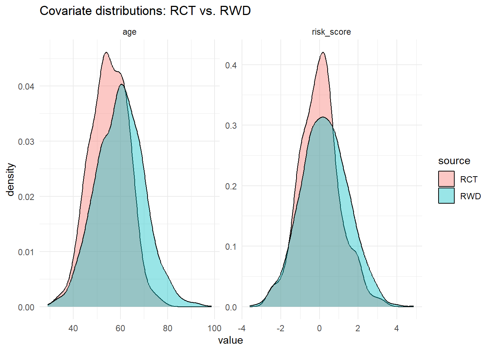
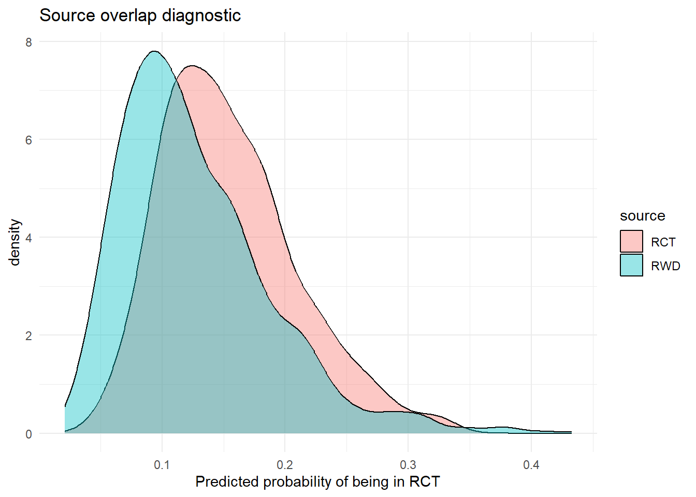

<!DOCTYPE html>
<html xmlns="http://www.w3.org/1999/xhtml" lang="en" xml:lang="en"><head>

<meta charset="utf-8">
<meta name="generator" content="quarto-1.6.42">

<meta name="viewport" content="width=device-width, initial-scale=1.0, user-scalable=yes">

<meta name="description" content="A practical guide to the Causal Roadmap, Targeted Maximum Likelihood Estimation (TMLE), and Super Learner for modern causal inference in epidemiology, with emphasis on pharmacoepidemiology and clinical trial analysis.">

<title>27&nbsp; In development – Causal Learning Handbook (Interactive Workshop)</title>
<style>
code{white-space: pre-wrap;}
span.smallcaps{font-variant: small-caps;}
div.columns{display: flex; gap: min(4vw, 1.5em);}
div.column{flex: auto; overflow-x: auto;}
div.hanging-indent{margin-left: 1.5em; text-indent: -1.5em;}
ul.task-list{list-style: none;}
ul.task-list li input[type="checkbox"] {
  width: 0.8em;
  margin: 0 0.8em 0.2em -1em; /* quarto-specific, see https://github.com/quarto-dev/quarto-cli/issues/4556 */ 
  vertical-align: middle;
}
/* CSS for syntax highlighting */
pre > code.sourceCode { white-space: pre; position: relative; }
pre > code.sourceCode > span { line-height: 1.25; }
pre > code.sourceCode > span:empty { height: 1.2em; }
.sourceCode { overflow: visible; }
code.sourceCode > span { color: inherit; text-decoration: inherit; }
div.sourceCode { margin: 1em 0; }
pre.sourceCode { margin: 0; }
@media screen {
div.sourceCode { overflow: auto; }
}
@media print {
pre > code.sourceCode { white-space: pre-wrap; }
pre > code.sourceCode > span { display: inline-block; text-indent: -5em; padding-left: 5em; }
}
pre.numberSource code
  { counter-reset: source-line 0; }
pre.numberSource code > span
  { position: relative; left: -4em; counter-increment: source-line; }
pre.numberSource code > span > a:first-child::before
  { content: counter(source-line);
    position: relative; left: -1em; text-align: right; vertical-align: baseline;
    border: none; display: inline-block;
    -webkit-touch-callout: none; -webkit-user-select: none;
    -khtml-user-select: none; -moz-user-select: none;
    -ms-user-select: none; user-select: none;
    padding: 0 4px; width: 4em;
  }
pre.numberSource { margin-left: 3em;  padding-left: 4px; }
div.sourceCode
  {   }
@media screen {
pre > code.sourceCode > span > a:first-child::before { text-decoration: underline; }
}
/* CSS for citations */
div.csl-bib-body { }
div.csl-entry {
  clear: both;
  margin-bottom: 0em;
}
.hanging-indent div.csl-entry {
  margin-left:2em;
  text-indent:-2em;
}
div.csl-left-margin {
  min-width:2em;
  float:left;
}
div.csl-right-inline {
  margin-left:2em;
  padding-left:1em;
}
div.csl-indent {
  margin-left: 2em;
}</style>


<script src="site_libs/quarto-nav/quarto-nav.js"></script>
<script src="site_libs/quarto-nav/headroom.min.js"></script>
<script src="site_libs/clipboard/clipboard.min.js"></script>
<script src="site_libs/quarto-search/autocomplete.umd.js"></script>
<script src="site_libs/quarto-search/fuse.min.js"></script>
<script src="site_libs/quarto-search/quarto-search.js"></script>
<meta name="quarto:offset" content="./">
<link href="./03-06b-data-fusion-tutorial.html" rel="next">
<link href="./03-11c-competing-risks-estimands.html" rel="prev">
<script src="site_libs/quarto-html/quarto.js"></script>
<script src="site_libs/quarto-html/popper.min.js"></script>
<script src="site_libs/quarto-html/tippy.umd.min.js"></script>
<script src="site_libs/quarto-html/anchor.min.js"></script>
<link href="site_libs/quarto-html/tippy.css" rel="stylesheet">
<link href="site_libs/quarto-html/quarto-syntax-highlighting-2f5df379a58b258e96c21c0638c20c03.css" rel="stylesheet" id="quarto-text-highlighting-styles">
<script src="site_libs/bootstrap/bootstrap.min.js"></script>
<link href="site_libs/bootstrap/bootstrap-icons.css" rel="stylesheet">
<link href="site_libs/bootstrap/bootstrap-b343bb23504f009ddf7b24643a6af19a.min.css" rel="stylesheet" append-hash="true" id="quarto-bootstrap" data-mode="light">
<script id="quarto-search-options" type="application/json">{
  "location": "sidebar",
  "copy-button": false,
  "collapse-after": 3,
  "panel-placement": "start",
  "type": "textbox",
  "limit": 50,
  "keyboard-shortcut": [
    "f",
    "/",
    "s"
  ],
  "show-item-context": false,
  "language": {
    "search-no-results-text": "No results",
    "search-matching-documents-text": "matching documents",
    "search-copy-link-title": "Copy link to search",
    "search-hide-matches-text": "Hide additional matches",
    "search-more-match-text": "more match in this document",
    "search-more-matches-text": "more matches in this document",
    "search-clear-button-title": "Clear",
    "search-text-placeholder": "",
    "search-detached-cancel-button-title": "Cancel",
    "search-submit-button-title": "Submit",
    "search-label": "Search"
  }
}</script>

  <script src="https://cdnjs.cloudflare.com/polyfill/v3/polyfill.min.js?features=es6"></script>
  <script src="https://cdn.jsdelivr.net/npm/mathjax@3/es5/tex-chtml-full.js" type="text/javascript"></script>

<script type="text/javascript">
const typesetMath = (el) => {
  if (window.MathJax) {
    // MathJax Typeset
    window.MathJax.typeset([el]);
  } else if (window.katex) {
    // KaTeX Render
    var mathElements = el.getElementsByClassName("math");
    var macros = [];
    for (var i = 0; i < mathElements.length; i++) {
      var texText = mathElements[i].firstChild;
      if (mathElements[i].tagName == "SPAN") {
        window.katex.render(texText.data, mathElements[i], {
          displayMode: mathElements[i].classList.contains('display'),
          throwOnError: false,
          macros: macros,
          fleqn: false
        });
      }
    }
  }
}
window.Quarto = {
  typesetMath
};
</script>

<link rel="stylesheet" href="style.css">
</head>

<body class="nav-sidebar docked">

<div id="quarto-search-results"></div>
  <header id="quarto-header" class="headroom fixed-top">
  <nav class="quarto-secondary-nav">
    <div class="container-fluid d-flex">
      <button type="button" class="quarto-btn-toggle btn" data-bs-toggle="collapse" role="button" data-bs-target=".quarto-sidebar-collapse-item" aria-controls="quarto-sidebar" aria-expanded="false" aria-label="Toggle sidebar navigation" onclick="if (window.quartoToggleHeadroom) { window.quartoToggleHeadroom(); }">
        <i class="bi bi-layout-text-sidebar-reverse"></i>
      </button>
        <nav class="quarto-page-breadcrumbs" aria-label="breadcrumb"><ol class="breadcrumb"><li class="breadcrumb-item"><a href="./03-04-effect-modification.html">Part VI: Special Topics</a></li><li class="breadcrumb-item"><a href="./03-06-rwd-meets-rct-hybrid-designs.html"><span class="chapter-number">27</span>&nbsp; <span class="chapter-title">In development</span></a></li></ol></nav>
        <a class="flex-grow-1" role="navigation" data-bs-toggle="collapse" data-bs-target=".quarto-sidebar-collapse-item" aria-controls="quarto-sidebar" aria-expanded="false" aria-label="Toggle sidebar navigation" onclick="if (window.quartoToggleHeadroom) { window.quartoToggleHeadroom(); }">      
        </a>
      <button type="button" class="btn quarto-search-button" aria-label="Search" onclick="window.quartoOpenSearch();">
        <i class="bi bi-search"></i>
      </button>
    </div>
  </nav>
</header>
<!-- content -->
<div id="quarto-content" class="quarto-container page-columns page-rows-contents page-layout-article">
<!-- sidebar -->
  <nav id="quarto-sidebar" class="sidebar collapse collapse-horizontal quarto-sidebar-collapse-item sidebar-navigation docked overflow-auto">
    <div class="pt-lg-2 mt-2 text-left sidebar-header">
    <div class="sidebar-title mb-0 py-0">
      <a href="./">Causal Learning Handbook (Interactive Workshop)</a> 
        <div class="sidebar-tools-main">
    <a href="https://amertens.github.io/causal-learning-handbook/workshop/" title="Interactive (WebR)" class="quarto-navigation-tool px-1" aria-label="Interactive (WebR)"><i class="bi bi-play-circle-fill"></i></a>
    <a href="https://github.com/amertens/causal-learning-handbook" title="Source Code" class="quarto-navigation-tool px-1" aria-label="Source Code"><i class="bi bi-github"></i></a>
</div>
    </div>
      </div>
        <div class="mt-2 flex-shrink-0 align-items-center">
        <div class="sidebar-search">
        <div id="quarto-search" class="" title="Search"></div>
        </div>
        </div>
    <div class="sidebar-menu-container"> 
    <ul class="list-unstyled mt-1">
        <li class="sidebar-item">
  <div class="sidebar-item-container"> 
  <a href="./index.html" class="sidebar-item-text sidebar-link">
 <span class="menu-text"><span class="chapter-number">1</span>&nbsp; <span class="chapter-title">Causal Learning Handbook</span></span></a>
  </div>
</li>
        <li class="sidebar-item">
  <div class="sidebar-item-container"> 
  <a href="./00-short-course.html" class="sidebar-item-text sidebar-link">
 <span class="menu-text"><span class="chapter-number">2</span>&nbsp; <span class="chapter-title">Short Course: Causal Inference with Targeted Learning</span></span></a>
  </div>
</li>
        <li class="sidebar-item">
  <div class="sidebar-item-container"> 
  <a href="./00-case-study.html" class="sidebar-item-text sidebar-link">
 <span class="menu-text"><span class="chapter-number">3</span>&nbsp; <span class="chapter-title">Running Case Study: Antiretroviral Therapy, HIV Progression, and Longitudinal Confounding</span></span></a>
  </div>
</li>
        <li class="sidebar-item sidebar-item-section">
      <div class="sidebar-item-container"> 
            <a class="sidebar-item-text sidebar-link text-start" data-bs-toggle="collapse" data-bs-target="#quarto-sidebar-section-1" role="navigation" aria-expanded="true">
 <span class="menu-text">Part I: Foundations</span></a>
          <a class="sidebar-item-toggle text-start" data-bs-toggle="collapse" data-bs-target="#quarto-sidebar-section-1" role="navigation" aria-expanded="true" aria-label="Toggle section">
            <i class="bi bi-chevron-right ms-2"></i>
          </a> 
      </div>
      <ul id="quarto-sidebar-section-1" class="collapse list-unstyled sidebar-section depth1 show">  
          <li class="sidebar-item">
  <div class="sidebar-item-container"> 
  <a href="./01-01-regression-vs-causal.html" class="sidebar-item-text sidebar-link">
 <span class="menu-text"><span class="chapter-number">4</span>&nbsp; <span class="chapter-title">Why We Need a Causal Roadmap</span></span></a>
  </div>
</li>
          <li class="sidebar-item">
  <div class="sidebar-item-container"> 
  <a href="./01-02-causal-roadmap.html" class="sidebar-item-text sidebar-link">
 <span class="menu-text"><span class="chapter-number">5</span>&nbsp; <span class="chapter-title">The Causal Roadmap</span></span></a>
  </div>
</li>
      </ul>
  </li>
        <li class="sidebar-item sidebar-item-section">
      <div class="sidebar-item-container"> 
            <a class="sidebar-item-text sidebar-link text-start" data-bs-toggle="collapse" data-bs-target="#quarto-sidebar-section-2" role="navigation" aria-expanded="true">
 <span class="menu-text">Part II: Core Estimators</span></a>
          <a class="sidebar-item-toggle text-start" data-bs-toggle="collapse" data-bs-target="#quarto-sidebar-section-2" role="navigation" aria-expanded="true" aria-label="Toggle section">
            <i class="bi bi-chevron-right ms-2"></i>
          </a> 
      </div>
      <ul id="quarto-sidebar-section-2" class="collapse list-unstyled sidebar-section depth1 show">  
          <li class="sidebar-item">
  <div class="sidebar-item-container"> 
  <a href="./02-01-gcomputation.html" class="sidebar-item-text sidebar-link">
 <span class="menu-text"><span class="chapter-number">6</span>&nbsp; <span class="chapter-title">Outcome Modeling and Standardization (G-Computation)</span></span></a>
  </div>
</li>
          <li class="sidebar-item">
  <div class="sidebar-item-container"> 
  <a href="./02-02-iptw.html" class="sidebar-item-text sidebar-link">
 <span class="menu-text"><span class="chapter-number">7</span>&nbsp; <span class="chapter-title">Inverse Probability of Treatment Weighting (IPTW)</span></span></a>
  </div>
</li>
          <li class="sidebar-item">
  <div class="sidebar-item-container"> 
  <a href="./02-03-doubly-robust-tmle.html" class="sidebar-item-text sidebar-link">
 <span class="menu-text"><span class="chapter-number">8</span>&nbsp; <span class="chapter-title">Doubly Robust Estimators and Targeted Learning (AIPW + TMLE)</span></span></a>
  </div>
</li>
          <li class="sidebar-item">
  <div class="sidebar-item-container"> 
  <a href="./02-04-superlearner.html" class="sidebar-item-text sidebar-link">
 <span class="menu-text"><span class="chapter-number">9</span>&nbsp; <span class="chapter-title">Super Learner: Ensemble Machine Learning for Causal Inference</span></span></a>
  </div>
</li>
          <li class="sidebar-item">
  <div class="sidebar-item-container"> 
  <a href="./02-04b-highly-adaptive-lasso.html" class="sidebar-item-text sidebar-link">
 <span class="menu-text"><span class="chapter-number">10</span>&nbsp; <span class="chapter-title">The Highly Adaptive Lasso</span></span></a>
  </div>
</li>
          <li class="sidebar-item">
  <div class="sidebar-item-container"> 
  <a href="./02-05-advanced-tmle.html" class="sidebar-item-text sidebar-link">
 <span class="menu-text"><span class="chapter-number">11</span>&nbsp; <span class="chapter-title">Advanced TMLE: Cross-Validated, Collaborative, and Adaptive</span></span></a>
  </div>
</li>
          <li class="sidebar-item">
  <div class="sidebar-item-container"> 
  <a href="./03-02-positivity-overlap.html" class="sidebar-item-text sidebar-link">
 <span class="menu-text"><span class="chapter-number">12</span>&nbsp; <span class="chapter-title">Positivity, Overlap, and Data Support</span></span></a>
  </div>
</li>
      </ul>
  </li>
        <li class="sidebar-item sidebar-item-section">
      <div class="sidebar-item-container"> 
            <a class="sidebar-item-text sidebar-link text-start" data-bs-toggle="collapse" data-bs-target="#quarto-sidebar-section-3" role="navigation" aria-expanded="true">
 <span class="menu-text">Part III: Longitudinal Causal Inference</span></a>
          <a class="sidebar-item-toggle text-start" data-bs-toggle="collapse" data-bs-target="#quarto-sidebar-section-3" role="navigation" aria-expanded="true" aria-label="Toggle section">
            <i class="bi bi-chevron-right ms-2"></i>
          </a> 
      </div>
      <ul id="quarto-sidebar-section-3" class="collapse list-unstyled sidebar-section depth1 show">  
          <li class="sidebar-item">
  <div class="sidebar-item-container"> 
  <a href="./03-07-longitudinal-td-confounding.html" class="sidebar-item-text sidebar-link">
 <span class="menu-text"><span class="chapter-number">13</span>&nbsp; <span class="chapter-title">Learning objectives</span></span></a>
  </div>
</li>
          <li class="sidebar-item">
  <div class="sidebar-item-container"> 
  <a href="./03-09-illustrated-ltmle.html" class="sidebar-item-text sidebar-link">
 <span class="menu-text"><span class="chapter-number">14</span>&nbsp; <span class="chapter-title">Longitudinal TMLE: Concepts and Intuition</span></span></a>
  </div>
</li>
          <li class="sidebar-item">
  <div class="sidebar-item-container"> 
  <a href="./03-09b-ltmle-by-hand.html" class="sidebar-item-text sidebar-link">
 <span class="menu-text"><span class="chapter-number">15</span>&nbsp; <span class="chapter-title">L-TMLE By Hand: A Technical Companion</span></span></a>
  </div>
</li>
          <li class="sidebar-item">
  <div class="sidebar-item-container"> 
  <a href="./03-03b-adherence-shift-methods.html" class="sidebar-item-text sidebar-link">
 <span class="menu-text"><span class="chapter-number">16</span>&nbsp; <span class="chapter-title">Adherence, Forgiveness, and Distribution-Shift Interventions</span></span></a>
  </div>
</li>
      </ul>
  </li>
        <li class="sidebar-item sidebar-item-section">
      <div class="sidebar-item-container"> 
            <a class="sidebar-item-text sidebar-link text-start" data-bs-toggle="collapse" data-bs-target="#quarto-sidebar-section-4" role="navigation" aria-expanded="true">
 <span class="menu-text">Part IV: Diagnostics and Sensitivity Analysis</span></a>
          <a class="sidebar-item-toggle text-start" data-bs-toggle="collapse" data-bs-target="#quarto-sidebar-section-4" role="navigation" aria-expanded="true" aria-label="Toggle section">
            <i class="bi bi-chevron-right ms-2"></i>
          </a> 
      </div>
      <ul id="quarto-sidebar-section-4" class="collapse list-unstyled sidebar-section depth1 show">  
          <li class="sidebar-item">
  <div class="sidebar-item-container"> 
  <a href="./03-05-advanced-diagnostics.html" class="sidebar-item-text sidebar-link">
 <span class="menu-text"><span class="chapter-number">17</span>&nbsp; <span class="chapter-title">Diagnostics and Sensitivity Analyses in Targeted Learning</span></span></a>
  </div>
</li>
          <li class="sidebar-item">
  <div class="sidebar-item-container"> 
  <a href="./03-08-staged-clean-room.html" class="sidebar-item-text sidebar-link">
 <span class="menu-text"><span class="chapter-number">18</span>&nbsp; <span class="chapter-title">Staged and Clean-Room Designs for Real-World Evidence</span></span></a>
  </div>
</li>
          <li class="sidebar-item">
  <div class="sidebar-item-container"> 
  <a href="./03-12-sensitivity-analysis.html" class="sidebar-item-text sidebar-link">
 <span class="menu-text"><span class="chapter-number">19</span>&nbsp; <span class="chapter-title">Sensitivity Analysis for Real-World Evidence</span></span></a>
  </div>
</li>
      </ul>
  </li>
        <li class="sidebar-item sidebar-item-section">
      <div class="sidebar-item-container"> 
            <a class="sidebar-item-text sidebar-link text-start" data-bs-toggle="collapse" data-bs-target="#quarto-sidebar-section-5" role="navigation" aria-expanded="true">
 <span class="menu-text">Part V: Putting It All Together</span></a>
          <a class="sidebar-item-toggle text-start" data-bs-toggle="collapse" data-bs-target="#quarto-sidebar-section-5" role="navigation" aria-expanded="true" aria-label="Toggle section">
            <i class="bi bi-chevron-right ms-2"></i>
          </a> 
      </div>
      <ul id="quarto-sidebar-section-5" class="collapse list-unstyled sidebar-section depth1 show">  
          <li class="sidebar-item">
  <div class="sidebar-item-container"> 
  <a href="./05-01-applied-lmtp-workflow.html" class="sidebar-item-text sidebar-link">
 <span class="menu-text"><span class="chapter-number">20</span>&nbsp; <span class="chapter-title">From Question to Estimate: An Applied Longitudinal Analysis with LMTP</span></span></a>
  </div>
</li>
      </ul>
  </li>
        <li class="sidebar-item sidebar-item-section">
      <div class="sidebar-item-container"> 
            <a class="sidebar-item-text sidebar-link text-start" data-bs-toggle="collapse" data-bs-target="#quarto-sidebar-section-6" role="navigation" aria-expanded="true">
 <span class="menu-text">Part VI: Special Topics</span></a>
          <a class="sidebar-item-toggle text-start" data-bs-toggle="collapse" data-bs-target="#quarto-sidebar-section-6" role="navigation" aria-expanded="true" aria-label="Toggle section">
            <i class="bi bi-chevron-right ms-2"></i>
          </a> 
      </div>
      <ul id="quarto-sidebar-section-6" class="collapse list-unstyled sidebar-section depth1 show">  
          <li class="sidebar-item">
  <div class="sidebar-item-container"> 
  <a href="./03-04-effect-modification.html" class="sidebar-item-text sidebar-link">
 <span class="menu-text"><span class="chapter-number">21</span>&nbsp; <span class="chapter-title">Effect Modification and Heterogeneous Treatment Effects</span></span></a>
  </div>
</li>
          <li class="sidebar-item">
  <div class="sidebar-item-container"> 
  <a href="./03-04b-interactions-rwe.html" class="sidebar-item-text sidebar-link">
 <span class="menu-text"><span class="chapter-number">22</span>&nbsp; <span class="chapter-title">Estimating Interactions in Real-World Evidence Research</span></span></a>
  </div>
</li>
          <li class="sidebar-item">
  <div class="sidebar-item-container"> 
  <a href="./03-04c-optimal-treatment-regimes.html" class="sidebar-item-text sidebar-link">
 <span class="menu-text"><span class="chapter-number">23</span>&nbsp; <span class="chapter-title">Optimal Treatment Regimes and Policy Learning</span></span></a>
  </div>
</li>
          <li class="sidebar-item">
  <div class="sidebar-item-container"> 
  <a href="./03-10-tmle-mediation.html" class="sidebar-item-text sidebar-link">
 <span class="menu-text"><span class="chapter-number">24</span>&nbsp; <span class="chapter-title">TMLE for Mediation Analysis</span></span></a>
  </div>
</li>
          <li class="sidebar-item">
  <div class="sidebar-item-container"> 
  <a href="./03-11-time-to-event-competing-risks.html" class="sidebar-item-text sidebar-link">
 <span class="menu-text"><span class="chapter-number">25</span>&nbsp; <span class="chapter-title">Time-to-Event, Censoring, and Competing Risks with Targeted Learning</span></span></a>
  </div>
</li>
          <li class="sidebar-item">
  <div class="sidebar-item-container"> 
  <a href="./03-11c-competing-risks-estimands.html" class="sidebar-item-text sidebar-link">
 <span class="menu-text"><span class="chapter-number">26</span>&nbsp; <span class="chapter-title">Competing Risks in Estimands: Choosing What You Estimate Before How</span></span></a>
  </div>
</li>
          <li class="sidebar-item">
  <div class="sidebar-item-container"> 
  <a href="./03-06-rwd-meets-rct-hybrid-designs.html" class="sidebar-item-text sidebar-link active">
 <span class="menu-text"><span class="chapter-number">27</span>&nbsp; <span class="chapter-title">In development</span></span></a>
  </div>
</li>
          <li class="sidebar-item">
  <div class="sidebar-item-container"> 
  <a href="./03-06b-data-fusion-tutorial.html" class="sidebar-item-text sidebar-link">
 <span class="menu-text"><span class="chapter-number">28</span>&nbsp; <span class="chapter-title">In development</span></span></a>
  </div>
</li>
          <li class="sidebar-item">
  <div class="sidebar-item-container"> 
  <a href="./03-13-transportability-generalizability.html" class="sidebar-item-text sidebar-link">
 <span class="menu-text"><span class="chapter-number">29</span>&nbsp; <span class="chapter-title">Transportability and Generalizability in RCT-RWD Synthesis</span></span></a>
  </div>
</li>
          <li class="sidebar-item">
  <div class="sidebar-item-container"> 
  <a href="./03-14-identification-beyond-exchangeability.html" class="sidebar-item-text sidebar-link">
 <span class="menu-text"><span class="chapter-number">30</span>&nbsp; <span class="chapter-title">Identification Beyond Conditional Exchangeability</span></span></a>
  </div>
</li>
      </ul>
  </li>
        <li class="sidebar-item sidebar-item-section">
      <div class="sidebar-item-container"> 
            <a class="sidebar-item-text sidebar-link text-start" data-bs-toggle="collapse" data-bs-target="#quarto-sidebar-section-7" role="navigation" aria-expanded="true">
 <span class="menu-text">Synthesis</span></a>
          <a class="sidebar-item-toggle text-start" data-bs-toggle="collapse" data-bs-target="#quarto-sidebar-section-7" role="navigation" aria-expanded="true" aria-label="Toggle section">
            <i class="bi bi-chevron-right ms-2"></i>
          </a> 
      </div>
      <ul id="quarto-sidebar-section-7" class="collapse list-unstyled sidebar-section depth1 show">  
          <li class="sidebar-item">
  <div class="sidebar-item-container"> 
  <a href="./04-03-case-study-synthesis.html" class="sidebar-item-text sidebar-link">
 <span class="menu-text"><span class="chapter-number">31</span>&nbsp; <span class="chapter-title">Lessons from the Antiretroviral Therapy Case Study</span></span></a>
  </div>
</li>
      </ul>
  </li>
        <li class="sidebar-item sidebar-item-section">
      <div class="sidebar-item-container"> 
            <a class="sidebar-item-text sidebar-link text-start" data-bs-toggle="collapse" data-bs-target="#quarto-sidebar-section-8" role="navigation" aria-expanded="true">
 <span class="menu-text">Appendices</span></a>
          <a class="sidebar-item-toggle text-start" data-bs-toggle="collapse" data-bs-target="#quarto-sidebar-section-8" role="navigation" aria-expanded="true" aria-label="Toggle section">
            <i class="bi bi-chevron-right ms-2"></i>
          </a> 
      </div>
      <ul id="quarto-sidebar-section-8" class="collapse list-unstyled sidebar-section depth1 show">  
          <li class="sidebar-item">
  <div class="sidebar-item-container"> 
  <a href="./glossary.html" class="sidebar-item-text sidebar-link">
 <span class="menu-text"><span class="chapter-number">32</span>&nbsp; <span class="chapter-title">Glossary of Abbreviations and Terms</span></span></a>
  </div>
</li>
          <li class="sidebar-item">
  <div class="sidebar-item-container"> 
  <a href="./notation.html" class="sidebar-item-text sidebar-link">
 <span class="menu-text"><span class="chapter-number">33</span>&nbsp; <span class="chapter-title">Notation Cheat-Sheet</span></span></a>
  </div>
</li>
          <li class="sidebar-item">
  <div class="sidebar-item-container"> 
  <a href="./anotated_bibliography.html" class="sidebar-item-text sidebar-link">
 <span class="menu-text"><span class="chapter-number">34</span>&nbsp; <span class="chapter-title">Annotated Bibliography</span></span></a>
  </div>
</li>
          <li class="sidebar-item">
  <div class="sidebar-item-container"> 
  <a href="./other_resources.html" class="sidebar-item-text sidebar-link">
 <span class="menu-text"><span class="chapter-number">35</span>&nbsp; <span class="chapter-title">Other Resources</span></span></a>
  </div>
</li>
      </ul>
  </li>
    </ul>
    </div>
</nav>
<div id="quarto-sidebar-glass" class="quarto-sidebar-collapse-item" data-bs-toggle="collapse" data-bs-target=".quarto-sidebar-collapse-item"></div>
<!-- margin-sidebar -->
    <div id="quarto-margin-sidebar" class="sidebar margin-sidebar">
        <nav id="TOC" role="doc-toc" class="toc-active">
    <h2 id="toc-title">Table of contents</h2>
   
  <ul>
  <li><a href="#sec-hybrid-designs" id="toc-sec-hybrid-designs" class="nav-link active" data-scroll-target="#sec-hybrid-designs"><span class="header-section-number">28</span> When RWD Meets RCT: Hybrid Designs</a>
  <ul class="collapse">
  <li><a href="#why-combine-rct-and-rwd" id="toc-why-combine-rct-and-rwd" class="nav-link" data-scroll-target="#why-combine-rct-and-rwd"><span class="header-section-number">28.1</span> Why Combine RCT and RWD?</a>
  <ul class="collapse">
  <li><a href="#precision" id="toc-precision" class="nav-link" data-scroll-target="#precision"><span class="header-section-number">28.1.1</span> Precision</a></li>
  <li><a href="#generalizability" id="toc-generalizability" class="nav-link" data-scroll-target="#generalizability"><span class="header-section-number">28.1.2</span> Generalizability</a></li>
  <li><a href="#feasibility-and-ethics" id="toc-feasibility-and-ethics" class="nav-link" data-scroll-target="#feasibility-and-ethics"><span class="header-section-number">28.1.3</span> Feasibility and ethics</a></li>
  </ul></li>
  <li><a href="#basic-hybrid-designs" id="toc-basic-hybrid-designs" class="nav-link" data-scroll-target="#basic-hybrid-designs"><span class="header-section-number">28.2</span> Basic Hybrid Designs</a>
  <ul class="collapse">
  <li><a href="#external-control-arms" id="toc-external-control-arms" class="nav-link" data-scroll-target="#external-control-arms"><span class="header-section-number">28.2.1</span> External control arms</a></li>
  <li><a href="#augmented-control-arms" id="toc-augmented-control-arms" class="nav-link" data-scroll-target="#augmented-control-arms"><span class="header-section-number">28.2.2</span> Augmented control arms</a></li>
  <li><a href="#transportability-and-generalizability" id="toc-transportability-and-generalizability" class="nav-link" data-scroll-target="#transportability-and-generalizability"><span class="header-section-number">28.2.3</span> Transportability and generalizability</a></li>
  </ul></li>
  <li><a href="#identification-assumptions-in-hybrid-settings" id="toc-identification-assumptions-in-hybrid-settings" class="nav-link" data-scroll-target="#identification-assumptions-in-hybrid-settings"><span class="header-section-number">28.3</span> Identification: Assumptions in Hybrid Settings</a></li>
  <li><a href="#es-cv-tmle-external-supervised-cross-validated-tmle" id="toc-es-cv-tmle-external-supervised-cross-validated-tmle" class="nav-link" data-scroll-target="#es-cv-tmle-external-supervised-cross-validated-tmle"><span class="header-section-number">28.4</span> ES-CV-TMLE: External Supervised Cross-Validated TMLE</a>
  <ul class="collapse">
  <li><a href="#the-core-insight" id="toc-the-core-insight" class="nav-link" data-scroll-target="#the-core-insight"><span class="header-section-number">28.4.1</span> The core insight</a></li>
  <li><a href="#algorithm-step-by-step" id="toc-algorithm-step-by-step" class="nav-link" data-scroll-target="#algorithm-step-by-step"><span class="header-section-number">28.4.2</span> Algorithm step by step</a></li>
  </ul></li>
  <li><a href="#a-tmle-adaptive-targeted-maximum-likelihood-estimation" id="toc-a-tmle-adaptive-targeted-maximum-likelihood-estimation" class="nav-link" data-scroll-target="#a-tmle-adaptive-targeted-maximum-likelihood-estimation"><span class="header-section-number">28.5</span> A-TMLE: Adaptive Targeted Maximum Likelihood Estimation</a>
  <ul class="collapse">
  <li><a href="#why-a-tmle" id="toc-why-a-tmle" class="nav-link" data-scroll-target="#why-a-tmle"><span class="header-section-number">28.5.1</span> Why A-TMLE?</a></li>
  <li><a href="#mathematical-structure" id="toc-mathematical-structure" class="nav-link" data-scroll-target="#mathematical-structure"><span class="header-section-number">28.5.2</span> Mathematical structure</a></li>
  </ul></li>
  <li><a href="#example-hybrid-workflow-conceptual" id="toc-example-hybrid-workflow-conceptual" class="nav-link" data-scroll-target="#example-hybrid-workflow-conceptual"><span class="header-section-number">28.6</span> Example Hybrid Workflow (Conceptual)</a>
  <ul class="collapse">
  <li><a href="#tmle-using-rct-only" id="toc-tmle-using-rct-only" class="nav-link" data-scroll-target="#tmle-using-rct-only"><span class="header-section-number">28.6.1</span> TMLE using RCT only</a></li>
  <li><a href="#tmle-using-rwd-careful-confounding-control" id="toc-tmle-using-rwd-careful-confounding-control" class="nav-link" data-scroll-target="#tmle-using-rwd-careful-confounding-control"><span class="header-section-number">28.6.2</span> TMLE using RWD (careful confounding control)</a></li>
  <li><a href="#pooled-source-tmle" id="toc-pooled-source-tmle" class="nav-link" data-scroll-target="#pooled-source-tmle"><span class="header-section-number">28.6.3</span> Pooled-source TMLE</a></li>
  <li><a href="#adaptive-combination-a-tmle-style-idea" id="toc-adaptive-combination-a-tmle-style-idea" class="nav-link" data-scroll-target="#adaptive-combination-a-tmle-style-idea"><span class="header-section-number">28.6.4</span> Adaptive combination (A-TMLE style idea)</a></li>
  </ul></li>
  <li><a href="#practical-considerations-and-diagnostics-for-hybrid-designs" id="toc-practical-considerations-and-diagnostics-for-hybrid-designs" class="nav-link" data-scroll-target="#practical-considerations-and-diagnostics-for-hybrid-designs"><span class="header-section-number">28.7</span> Practical Considerations and Diagnostics for Hybrid Designs</a>
  <ul class="collapse">
  <li><a href="#harmonization" id="toc-harmonization" class="nav-link" data-scroll-target="#harmonization"><span class="header-section-number">28.7.1</span> Harmonization</a></li>
  <li><a href="#assess-similarity-between-rct-and-rwd" id="toc-assess-similarity-between-rct-and-rwd" class="nav-link" data-scroll-target="#assess-similarity-between-rct-and-rwd"><span class="header-section-number">28.7.2</span> Assess similarity between RCT and RWD</a></li>
  </ul></li>
  <li><a href="#applied-example-a-simplified-hybrid-analysis-in-r" id="toc-applied-example-a-simplified-hybrid-analysis-in-r" class="nav-link" data-scroll-target="#applied-example-a-simplified-hybrid-analysis-in-r"><span class="header-section-number">28.8</span> Applied Example: A Simplified Hybrid Analysis in R</a>
  <ul class="collapse">
  <li><a href="#simulate-an-rct-and-rwd-cohort" id="toc-simulate-an-rct-and-rwd-cohort" class="nav-link" data-scroll-target="#simulate-an-rct-and-rwd-cohort"><span class="header-section-number">28.8.1</span> Simulate an RCT and RWD cohort</a></li>
  <li><a href="#compare-source-distributions" id="toc-compare-source-distributions" class="nav-link" data-scroll-target="#compare-source-distributions"><span class="header-section-number">28.8.2</span> Compare source distributions</a></li>
  <li><a href="#three-analyses-rct-only-rwd-only-pooled" id="toc-three-analyses-rct-only-rwd-only-pooled" class="nav-link" data-scroll-target="#three-analyses-rct-only-rwd-only-pooled"><span class="header-section-number">28.8.3</span> Three analyses: RCT only, RWD only, pooled</a></li>
  <li><a href="#covariate-overlap-diagnostic" id="toc-covariate-overlap-diagnostic" class="nav-link" data-scroll-target="#covariate-overlap-diagnostic"><span class="header-section-number">28.8.4</span> Covariate overlap diagnostic</a></li>
  <li><a href="#pooled-tmle-optional" id="toc-pooled-tmle-optional" class="nav-link" data-scroll-target="#pooled-tmle-optional"><span class="header-section-number">28.8.5</span> Pooled TMLE (optional)</a></li>
  </ul></li>
  <li><a href="#when-to-use-hybrid-designs-and-when-not-to" id="toc-when-to-use-hybrid-designs-and-when-not-to" class="nav-link" data-scroll-target="#when-to-use-hybrid-designs-and-when-not-to"><span class="header-section-number">28.9</span> When to Use Hybrid Designs (and When Not To)</a></li>
  <li><a href="#summary" id="toc-summary" class="nav-link" data-scroll-target="#summary"><span class="header-section-number">28.10</span> Summary</a></li>
  <li><a href="#software-implementation-r" id="toc-software-implementation-r" class="nav-link" data-scroll-target="#software-implementation-r"><span class="header-section-number">28.11</span> Software Implementation (R)</a></li>
  <li><a href="#what-comes-next" id="toc-what-comes-next" class="nav-link" data-scroll-target="#what-comes-next"><span class="header-section-number">28.12</span> What comes next</a></li>
  </ul></li>
  </ul>
</nav>
    </div>
<!-- main -->
<main class="content" id="quarto-document-content">

<header id="title-block-header" class="quarto-title-block default"><nav class="quarto-page-breadcrumbs quarto-title-breadcrumbs d-none d-lg-block" aria-label="breadcrumb"><ol class="breadcrumb"><li class="breadcrumb-item"><a href="./03-04-effect-modification.html">Part VI: Special Topics</a></li><li class="breadcrumb-item"><a href="./03-06-rwd-meets-rct-hybrid-designs.html"><span class="chapter-number">27</span>&nbsp; <span class="chapter-title">In development</span></a></li></ol></nav>
<div class="quarto-title">
<div class="quarto-title-block"><div><h1 class="title"><span class="chapter-number">27</span>&nbsp; <span class="chapter-title">In development</span></h1><button type="button" class="btn code-tools-button dropdown-toggle" id="quarto-code-tools-menu" data-bs-toggle="dropdown" aria-expanded="false"><i class="bi"></i> Code</button><ul class="dropdown-menu dropdown-menu-end" aria-labelelledby="quarto-code-tools-menu"><li><a id="quarto-show-all-code" class="dropdown-item" href="javascript:void(0)" role="button">Show All Code</a></li><li><a id="quarto-hide-all-code" class="dropdown-item" href="javascript:void(0)" role="button">Hide All Code</a></li><li><hr class="dropdown-divider"></li><li><a id="quarto-view-source" class="dropdown-item" href="javascript:void(0)" role="button">View Source</a></li></ul></div></div>
</div>


<div class="quarto-title-meta">

    
  
    
  </div>
  


</header>


<div class="callout callout-style-default callout-warning callout-titled">
<div class="callout-header d-flex align-content-center">
<div class="callout-icon-container">
<i class="callout-icon"></i>
</div>
<div class="callout-title-container flex-fill">
Warning
</div>
</div>
<div class="callout-body-container callout-body">
<p>This chapter is under active development. Content may be incomplete, change substantially, or contain placeholder material.</p>
</div>
</div>
<p><em>Estimated reading time: 50 minutes</em></p>
<section id="sec-hybrid-designs" class="level1" data-number="28">
<h1 data-number="28"><span class="header-section-number">28</span> When RWD Meets RCT: Hybrid Designs</h1>
<p><em>Combining randomized and observational data to improve precision and generalizability</em></p>
<p>Randomized controlled trials (RCTs) are the gold standard for causal inference.<br>
But they are:</p>
<ul>
<li>Expensive and slow<br>
</li>
<li>Often underpowered for rare events and subgroup effects<br>
</li>
<li>Conducted in selective populations<br>
</li>
<li>Not always feasible or ethical</li>
</ul>
<p>Real-world data (RWD), including registries, EHR, and claims, provide:</p>
<ul>
<li>Large, diverse populations<br>
</li>
<li>Naturalistic treatment patterns<br>
</li>
<li>Long-term safety follow-up</li>
</ul>
<p><strong>Hybrid RCT–RWD designs</strong> aim to combine:</p>
<ul>
<li>The <em>internal validity</em> of RCTs<br>
</li>
<li>The <em>external validity</em> and scale of RWD</li>
</ul>
<hr>
<section id="why-combine-rct-and-rwd" class="level2" data-number="28.1">
<h2 data-number="28.1" class="anchored" data-anchor-id="why-combine-rct-and-rwd"><span class="header-section-number">28.1</span> Why Combine RCT and RWD?</h2>
<p>As epidemiologists, we know that no single data source is perfect. RCTs give us internal validity but are often too small, too narrow, or too slow. RWD gives us scale and diversity but lacks randomization. Hybrid designs try to get the best of both worlds. There are three core reasons to combine them.</p>
<section id="precision" class="level3" data-number="28.1.1">
<h3 data-number="28.1.1" class="anchored" data-anchor-id="precision"><span class="header-section-number">28.1.1</span> Precision</h3>
<p>Trials may be underpowered for:</p>
<ul>
<li>Rare safety endpoints</li>
<li>Important subgroups</li>
<li>Long-term secondary endpoints</li>
</ul>
<p>External RWD can add information and boost precision without enrolling more randomized patients.</p>
</section>
<section id="generalizability" class="level3" data-number="28.1.2">
<h3 data-number="28.1.2" class="anchored" data-anchor-id="generalizability"><span class="header-section-number">28.1.2</span> Generalizability</h3>
<p>RCT participants tend to:</p>
<ul>
<li>Be younger and healthier</li>
<li>Have fewer comorbidities</li>
<li>Be more adherent and monitored</li>
</ul>
<p>Thus, trial results may not fully apply to routine-care populations. Think of the typical phase III oncology trial: the enrolled patients are often younger and have better performance status than those you would see in a community oncology clinic.</p>
</section>
<section id="feasibility-and-ethics" class="level3" data-number="28.1.3">
<h3 data-number="28.1.3" class="anchored" data-anchor-id="feasibility-and-ethics"><span class="header-section-number">28.1.3</span> Feasibility and ethics</h3>
<p>Hybrid designs are useful when:</p>
<ul>
<li>Placebo or standard randomized controls are unethical</li>
<li>Only a single-arm trial is feasible</li>
<li>Rapid evidence is needed (e.g., post-marketing surveillance, rare diseases)</li>
</ul>
<hr>
</section>
</section>
<section id="basic-hybrid-designs" class="level2" data-number="28.2">
<h2 data-number="28.2" class="anchored" data-anchor-id="basic-hybrid-designs"><span class="header-section-number">28.2</span> Basic Hybrid Designs</h2>
<section id="external-control-arms" class="level3" data-number="28.2.1">
<h3 data-number="28.2.1" class="anchored" data-anchor-id="external-control-arms"><span class="header-section-number">28.2.1</span> External control arms</h3>
<p>In plain language, an <strong>external control arm</strong> means: instead of randomizing some patients to a control group within your trial, you borrow the control group from outside the trial, typically from a registry, EHR database, or historical trial data. A <strong>single-arm trial</strong> (all patients get experimental treatment) may be compared against an <strong>external control</strong> arm from RWD. Common use cases include oncology (historical controls), rare diseases, and settings where the standard-of-care is well characterized.</p>
<div class="callout callout-style-default callout-warning callout-titled">
<div class="callout-header d-flex align-content-center">
<div class="callout-icon-container">
<i class="callout-icon"></i>
</div>
<div class="callout-title-container flex-fill">
Challenges of External Controls
</div>
</div>
<div class="callout-body-container callout-body">
<p>External controls introduce serious methodological risks that every epidemiologist should scrutinize:</p>
<ul>
<li><strong>Confounding by indication</strong>: Patients in the RWD were not randomized. The reasons they received (or did not receive) a treatment are entangled with their prognosis.</li>
<li><strong>Differences in data capture</strong>: The trial measures outcomes with protocol-specified visits, imaging schedules, and adjudication committees. The RWD may rely on billing codes, free-text notes, or inconsistent follow-up.</li>
<li><strong>Eligibility misalignment</strong>: Trial patients passed strict inclusion/exclusion criteria. RWD patients may differ systematically.</li>
<li><strong>Calendar time and secular trends</strong>: Changes in supportive care, diagnostic coding (e.g., ICD-9 to ICD-10 transitions), or standard-of-care over time can create spurious differences.</li>
</ul>
<p>For example, a sponsor might augment a small single-arm trial with registry data from patients on standard of care, but if the registry patients are systematically healthier, the comparison is biased.</p>
<p>Always ask: “Would the external controls have been eligible for the trial, and are their outcomes measured comparably?”</p>
</div>
</div>
<hr>
</section>
<section id="augmented-control-arms" class="level3" data-number="28.2.2">
<h3 data-number="28.2.2" class="anchored" data-anchor-id="augmented-control-arms"><span class="header-section-number">28.2.2</span> Augmented control arms</h3>
<p>Unlike a fully external control, an <strong>augmented control arm</strong> retains randomization within the trial. You still have a concurrent randomized control group. The external RWD supplements it rather than replacing it entirely. Think of it as “topping up” your control arm with additional data.</p>
<p>An RCT randomizes patients to experimental treatment vs trial control (e.g., 2:1 randomization), but the trial control arm is <strong>augmented</strong> with external RWD controls to improve precision, reduce the required randomized control sample size, and support safety and rare-event evaluation.</p>
<p>Borrowing can be:</p>
<ul>
<li><strong>Fixed (pre-specified)</strong>: You decide before unblinding how much external data to incorporate.</li>
<li><strong>Dynamic / adaptive (data-driven)</strong>: The degree of borrowing depends on how similar the RWD control outcomes are to the trial control outcomes (e.g., power prior, commensurate prior approaches).</li>
</ul>
<p>This is generally safer than a pure external control design because the concurrent randomized control arm serves as a built-in validity check. The target remains the treatment effect in the trial-eligible population, estimated with improved precision by borrowing information from the external data.</p>
<hr>
</section>
<section id="transportability-and-generalizability" class="level3" data-number="28.2.3">
<h3 data-number="28.2.3" class="anchored" data-anchor-id="transportability-and-generalizability"><span class="header-section-number">28.2.3</span> Transportability and generalizability</h3>
<p>In plain language, “transporting” a trial result means taking the causal effect estimated in the trial’s selected population and asking, “What would this effect be in a different, broader population?” For example, if a trial enrolled mostly younger patients with good kidney function, transportability methods let you estimate what the treatment effect would be in the full population of Medicare beneficiaries, including older, sicker patients who were excluded from the trial.</p>
<ul>
<li><strong>Generalizability</strong> = extending results from the trial sample to the full population the trial was sampled from.</li>
<li><strong>Transportability</strong> = extending results to an entirely different target population.</li>
</ul>
<p>You may have an RCT effect estimate in a selected population and a target population in RWD; the goal is to <em>transport</em> or <em>generalize</em> the trial effect to the RWD population. This requires modeling the difference between trial and target populations and adjusting for “sampling bias” (who joins the trial). Techniques include inverse odds of sampling weights (IOSW), transport / generalizability TMLE, and doubly robust methods combining outcome and sampling models.</p>
<hr>
</section>
</section>
<section id="identification-assumptions-in-hybrid-settings" class="level2" data-number="28.3">
<h2 data-number="28.3" class="anchored" data-anchor-id="identification-assumptions-in-hybrid-settings"><span class="header-section-number">28.3</span> Identification: Assumptions in Hybrid Settings</h2>
<p>Hybrid designs require the standard causal identification assumptions (consistency, exchangeability, positivity; see <a href="01-02-causal-roadmap.html" class="quarto-xref"><span>Chapter 5</span></a> for a full treatment) plus additional requirements specific to combining data sources:</p>
<div class="callout callout-style-default callout-warning callout-titled">
<div class="callout-header d-flex align-content-center">
<div class="callout-icon-container">
<i class="callout-icon"></i>
</div>
<div class="callout-title-container flex-fill">
Assumption 3.1: No Unmeasured Confounding (for External / Observational Arms)
</div>
</div>
<div class="callout-body-container callout-body">
<p>The exchangeability assumption (<a href="01-02-causal-roadmap.html" class="quarto-xref"><span>Chapter 5</span></a>) applies specifically to the RWD component. The RCT component is protected by randomization; the RWD component is not. Residual confounding in the external data may bias the hybrid estimate.</p>
</div>
</div>
<div class="callout callout-style-default callout-warning callout-titled">
<div class="callout-header d-flex align-content-center">
<div class="callout-icon-container">
<i class="callout-icon"></i>
</div>
<div class="callout-title-container flex-fill">
Assumption 3.2: Common Support (Overlap)
</div>
</div>
<div class="callout-body-container callout-body">
<p>The positivity assumption (<a href="01-02-causal-roadmap.html" class="quarto-xref"><span>Chapter 5</span></a>) extends across data sources: the covariate distributions of RCT and RWD patients must overlap. If trial participants are systematically different from RWD patients in ways that matter for the outcome, you cannot borrow information reliably. Check covariate distributions carefully before proceeding.</p>
</div>
</div>
<div class="callout callout-style-default callout-warning callout-titled">
<div class="callout-header d-flex align-content-center">
<div class="callout-icon-container">
<i class="callout-icon"></i>
</div>
<div class="callout-title-container flex-fill">
Assumption 3.3: Consistency Across Sources
</div>
</div>
<div class="callout-body-container callout-body">
<p>Beyond the standard consistency assumption, hybrid designs require that outcome definitions, medical coding, and measurement schemes are compatible across sources. For example, “progression-free survival” measured by central radiology review in a trial is not the same as “progression-free survival” inferred from claims data or chart review. If definitions differ, the hybrid estimator conflates incompatible quantities.</p>
</div>
</div>
<hr>
</section>
<section id="es-cv-tmle-external-supervised-cross-validated-tmle" class="level2" data-number="28.4">
<h2 data-number="28.4" class="anchored" data-anchor-id="es-cv-tmle-external-supervised-cross-validated-tmle"><span class="header-section-number">28.4</span> ES-CV-TMLE: External Supervised Cross-Validated TMLE</h2>
<p><strong>ES-CV-TMLE (External Supervised Cross-Validated TMLE)</strong> <span class="citation" data-cites="dang2022escvtmle">(<a href="#ref-dang2022escvtmle" role="doc-biblioref">Dang et al. 2022</a>)</span> is a targeted learning approach that:</p>
<ul>
<li>Uses <strong>external data (RWD)</strong> to help train nuisance models (e.g., outcome regressions)<br>
</li>
<li>Validates and selects among them using <strong>cross-validation in the RCT only</strong><br>
</li>
<li>Ensures external data do not degrade the validity of RCT-based estimation</li>
</ul>
<section id="the-core-insight" class="level3" data-number="28.4.1">
<h3 data-number="28.4.1" class="anchored" data-anchor-id="the-core-insight"><span class="header-section-number">28.4.1</span> The core insight</h3>
<p>Here is the key idea in plain language: <strong>external data help you train better prediction models, but the RCT is the judge.</strong> Think of it like studying for an exam with extra textbooks (the RWD), but the exam itself (cross-validation) is graded only on RCT data. If the external textbooks helped you learn real patterns, your exam score improves. If they taught you spurious associations driven by confounding, the exam catches that and those models get down-weighted.</p>
<p>We may have poor precision in the RCT alone for nuisance functions (Q) and (g). External data can improve the <em>learning</em> of these functions, but confounding in the RWD could distort outcome relationships and treatment assignment mechanisms. ES-CV-TMLE protects against this by:</p>
<ol type="1">
<li>Proposing multiple candidate nuisance models, some learned on:
<ul>
<li>RCT only</li>
<li>RWD only</li>
<li>Combined data</li>
</ul></li>
<li>Using <strong>cross-validation on the RCT</strong> to evaluate each model’s performance (e.g., via log-likelihood loss).</li>
<li>Choosing the best-performing nuisance model (or an ensemble of them) for TMLE.</li>
</ol>
<p>External data are “supervisors” but do not override the RCT.</p>
</section>
<section id="algorithm-step-by-step" class="level3" data-number="28.4.2">
<h3 data-number="28.4.2" class="anchored" data-anchor-id="algorithm-step-by-step"><span class="header-section-number">28.4.2</span> Algorithm step by step</h3>
<ol type="1">
<li><strong>Train candidate models</strong> by pooling RCT and RWD data in different ways:
<ul>
<li>(Q_{ ext{RCT}}): trained only on RCT</li>
<li>(Q_{ ext{RWD}}): trained only on RWD</li>
<li>(Q_{ ext{pool}}): trained on combined RCT+RWD</li>
</ul></li>
<li><strong>Evaluate each candidate</strong> using RCT data only: run cross-validated evaluation (e.g., deviance, negative log-likelihood).</li>
<li><strong>Select or weight candidates</strong> via SuperLearner-style metalearning.</li>
<li><strong>Run TMLE</strong> using the chosen Q (and similarly chosen g, if desired) on the RCT data.</li>
</ol>
<p>This preserves the RCT-based identification and uses RWD as an auxiliary data source for better prediction. The target remains the treatment effect in the trial-eligible population, estimated with improved precision. The bottom line: even if the RWD is confounded, this procedure can only help (or do no harm) relative to using the RCT alone.</p>
<hr>
</section>
</section>
<section id="a-tmle-adaptive-targeted-maximum-likelihood-estimation" class="level2" data-number="28.5">
<h2 data-number="28.5" class="anchored" data-anchor-id="a-tmle-adaptive-targeted-maximum-likelihood-estimation"><span class="header-section-number">28.5</span> A-TMLE: Adaptive Targeted Maximum Likelihood Estimation</h2>
<p>Think of A-TMLE as a “meta-analysis machine” that does not just combine study results, but adaptively learns the best way to blend multiple estimators from different data sources. Where ES-CV-TMLE selects among candidate prediction models (a step inside the estimator), A-TMLE operates one level up: it selects among or blends entire estimators, each of which may use different data sources or modeling strategies. The cross-validated selection criterion guides how much to trust each source.</p>
<p><strong>Adaptive TMLE (A-TMLE)</strong> <span class="citation" data-cites="vanderLaan2025atmle">(<a href="#ref-vanderLaan2025atmle" role="doc-biblioref">Laan et al. 2025</a>)</span> generalizes ES-CV-TMLE to the estimator level.</p>
<p>Instead of combining candidate <strong>nuisance models</strong>, A-TMLE combines candidate <strong>estimators</strong> (e.g., separate hybrid analyses):</p>
<ul>
<li>TMLE using RCT only</li>
<li>TMLE using RWD only (carefully adjusted)</li>
<li>TMLE using both RCT + RWD in a joint model</li>
<li>Other candidate estimators</li>
</ul>
<p>It then uses a SuperLearner-style convex combination of these estimators to:</p>
<blockquote class="blockquote">
<p>Minimize cross-validated risk, yielding an adaptive, doubly robust final estimate.</p>
</blockquote>
<section id="why-a-tmle" class="level3" data-number="28.5.1">
<h3 data-number="28.5.1" class="anchored" data-anchor-id="why-a-tmle"><span class="header-section-number">28.5.1</span> Why A-TMLE?</h3>
<p>Multiple data sources can provide:</p>
<ul>
<li>High internal validity (RCT)<br>
</li>
<li>High external validity (RWD)<br>
</li>
<li>Different types of bias and variance</li>
</ul>
<p>A-TMLE lets the cross-validated selection criterion guide the optimal combination, subject to:</p>
<ul>
<li>Constraints (e.g., RCT estimator always included)<br>
</li>
<li>Hierarchical preferences (e.g., more weight on RCT when conflict arises)</li>
</ul>
</section>
<section id="mathematical-structure" class="level3" data-number="28.5.2">
<h3 data-number="28.5.2" class="anchored" data-anchor-id="mathematical-structure"><span class="header-section-number">28.5.2</span> Mathematical structure</h3>
<p>Let ( _1, , _K) be candidate estimators of the same target parameter ().</p>
<p>A-TMLE constructs:</p>
<p>[ <em>{ ext{A-TMLE}} = </em>{k=1}^K lpha_k _k ]</p>
<p>with</p>
<ul>
<li>(lpha_k )<br>
</li>
<li>(_k lpha_k = 1)</li>
</ul>
<p>Weights (lpha) are chosen to minimize cross-validated loss (e.g., squared error of influence curves).</p>
<hr>
</section>
</section>
<section id="example-hybrid-workflow-conceptual" class="level2" data-number="28.6">
<h2 data-number="28.6" class="anchored" data-anchor-id="example-hybrid-workflow-conceptual"><span class="header-section-number">28.6</span> Example Hybrid Workflow (Conceptual)</h2>
<p>Consider:</p>
<ul>
<li>RCT: experimental vs placebo<br>
</li>
<li>RWD: observational comparison between experimental drug and standard-of-care</li>
</ul>
<section id="tmle-using-rct-only" class="level3" data-number="28.6.1">
<h3 data-number="28.6.1" class="anchored" data-anchor-id="tmle-using-rct-only"><span class="header-section-number">28.6.1</span> TMLE using RCT only</h3>
<div class="sourceCode" id="cb1"><pre class="sourceCode r code-with-copy"><code class="sourceCode r"><span id="cb1-1"><a href="#cb1-1" aria-hidden="true" tabindex="-1"></a>tmle_rct <span class="ot">&lt;-</span> <span class="fu">tmle</span>(</span>
<span id="cb1-2"><a href="#cb1-2" aria-hidden="true" tabindex="-1"></a>  <span class="at">Y =</span> Y_rct,</span>
<span id="cb1-3"><a href="#cb1-3" aria-hidden="true" tabindex="-1"></a>  <span class="at">A =</span> A_rct,</span>
<span id="cb1-4"><a href="#cb1-4" aria-hidden="true" tabindex="-1"></a>  <span class="at">W =</span> W_rct,</span>
<span id="cb1-5"><a href="#cb1-5" aria-hidden="true" tabindex="-1"></a>  <span class="at">family =</span> <span class="st">"binomial"</span>,</span>
<span id="cb1-6"><a href="#cb1-6" aria-hidden="true" tabindex="-1"></a>  <span class="at">Q.SL.library =</span> <span class="fu">c</span>(<span class="st">"SL.glm"</span>, <span class="st">"SL.ranger"</span>),</span>
<span id="cb1-7"><a href="#cb1-7" aria-hidden="true" tabindex="-1"></a>  <span class="at">g.SL.library =</span> <span class="fu">c</span>(<span class="st">"SL.glm"</span>, <span class="st">"SL.ranger"</span>)</span>
<span id="cb1-8"><a href="#cb1-8" aria-hidden="true" tabindex="-1"></a>)</span>
<span id="cb1-9"><a href="#cb1-9" aria-hidden="true" tabindex="-1"></a>psi_rct <span class="ot">&lt;-</span> tmle_rct<span class="sc">$</span>estimates<span class="sc">$</span>ATE<span class="sc">$</span>psi</span></code><button title="Copy to Clipboard" class="code-copy-button"><i class="bi"></i></button></pre></div>
</section>
<section id="tmle-using-rwd-careful-confounding-control" class="level3" data-number="28.6.2">
<h3 data-number="28.6.2" class="anchored" data-anchor-id="tmle-using-rwd-careful-confounding-control"><span class="header-section-number">28.6.2</span> TMLE using RWD (careful confounding control)</h3>
<div class="sourceCode" id="cb2"><pre class="sourceCode r code-with-copy"><code class="sourceCode r"><span id="cb2-1"><a href="#cb2-1" aria-hidden="true" tabindex="-1"></a>tmle_rwd <span class="ot">&lt;-</span> <span class="fu">tmle</span>(</span>
<span id="cb2-2"><a href="#cb2-2" aria-hidden="true" tabindex="-1"></a>  <span class="at">Y =</span> Y_rwd,</span>
<span id="cb2-3"><a href="#cb2-3" aria-hidden="true" tabindex="-1"></a>  <span class="at">A =</span> A_rwd,</span>
<span id="cb2-4"><a href="#cb2-4" aria-hidden="true" tabindex="-1"></a>  <span class="at">W =</span> W_rwd,</span>
<span id="cb2-5"><a href="#cb2-5" aria-hidden="true" tabindex="-1"></a>  <span class="at">family =</span> <span class="st">"binomial"</span>,</span>
<span id="cb2-6"><a href="#cb2-6" aria-hidden="true" tabindex="-1"></a>  <span class="at">Q.SL.library =</span> <span class="fu">c</span>(<span class="st">"SL.glm"</span>, <span class="st">"SL.ranger"</span>),</span>
<span id="cb2-7"><a href="#cb2-7" aria-hidden="true" tabindex="-1"></a>  <span class="at">g.SL.library =</span> <span class="fu">c</span>(<span class="st">"SL.glm"</span>, <span class="st">"SL.ranger"</span>)</span>
<span id="cb2-8"><a href="#cb2-8" aria-hidden="true" tabindex="-1"></a>)</span>
<span id="cb2-9"><a href="#cb2-9" aria-hidden="true" tabindex="-1"></a>psi_rwd <span class="ot">&lt;-</span> tmle_rwd<span class="sc">$</span>estimates<span class="sc">$</span>ATE<span class="sc">$</span>psi</span></code><button title="Copy to Clipboard" class="code-copy-button"><i class="bi"></i></button></pre></div>
</section>
<section id="pooled-source-tmle" class="level3" data-number="28.6.3">
<h3 data-number="28.6.3" class="anchored" data-anchor-id="pooled-source-tmle"><span class="header-section-number">28.6.3</span> Pooled-source TMLE</h3>
<div class="sourceCode" id="cb3"><pre class="sourceCode r code-with-copy"><code class="sourceCode r"><span id="cb3-1"><a href="#cb3-1" aria-hidden="true" tabindex="-1"></a>Y_pool <span class="ot">&lt;-</span> <span class="fu">c</span>(Y_rct, Y_rwd)</span>
<span id="cb3-2"><a href="#cb3-2" aria-hidden="true" tabindex="-1"></a>A_pool <span class="ot">&lt;-</span> <span class="fu">c</span>(A_rct, A_rwd)</span>
<span id="cb3-3"><a href="#cb3-3" aria-hidden="true" tabindex="-1"></a>W_pool <span class="ot">&lt;-</span> <span class="fu">rbind</span>(W_rct, W_rwd)</span>
<span id="cb3-4"><a href="#cb3-4" aria-hidden="true" tabindex="-1"></a></span>
<span id="cb3-5"><a href="#cb3-5" aria-hidden="true" tabindex="-1"></a>tmle_pool <span class="ot">&lt;-</span> <span class="fu">tmle</span>(</span>
<span id="cb3-6"><a href="#cb3-6" aria-hidden="true" tabindex="-1"></a>  <span class="at">Y =</span> Y_pool,</span>
<span id="cb3-7"><a href="#cb3-7" aria-hidden="true" tabindex="-1"></a>  <span class="at">A =</span> A_pool,</span>
<span id="cb3-8"><a href="#cb3-8" aria-hidden="true" tabindex="-1"></a>  <span class="at">W =</span> W_pool,</span>
<span id="cb3-9"><a href="#cb3-9" aria-hidden="true" tabindex="-1"></a>  <span class="at">family =</span> <span class="st">"binomial"</span>,</span>
<span id="cb3-10"><a href="#cb3-10" aria-hidden="true" tabindex="-1"></a>  <span class="at">Q.SL.library =</span> <span class="fu">c</span>(<span class="st">"SL.glm"</span>, <span class="st">"SL.ranger"</span>),</span>
<span id="cb3-11"><a href="#cb3-11" aria-hidden="true" tabindex="-1"></a>  <span class="at">g.SL.library =</span> <span class="fu">c</span>(<span class="st">"SL.glm"</span>, <span class="st">"SL.ranger"</span>)</span>
<span id="cb3-12"><a href="#cb3-12" aria-hidden="true" tabindex="-1"></a>)</span>
<span id="cb3-13"><a href="#cb3-13" aria-hidden="true" tabindex="-1"></a>psi_pool <span class="ot">&lt;-</span> tmle_pool<span class="sc">$</span>estimates<span class="sc">$</span>ATE<span class="sc">$</span>psi</span></code><button title="Copy to Clipboard" class="code-copy-button"><i class="bi"></i></button></pre></div>
</section>
<section id="adaptive-combination-a-tmle-style-idea" class="level3" data-number="28.6.4">
<h3 data-number="28.6.4" class="anchored" data-anchor-id="adaptive-combination-a-tmle-style-idea"><span class="header-section-number">28.6.4</span> Adaptive combination (A-TMLE style idea)</h3>
<div class="sourceCode" id="cb4"><pre class="sourceCode r code-with-copy"><code class="sourceCode r"><span id="cb4-1"><a href="#cb4-1" aria-hidden="true" tabindex="-1"></a>candidates <span class="ot">&lt;-</span> <span class="fu">c</span>(psi_rct, psi_rwd, psi_pool)</span>
<span id="cb4-2"><a href="#cb4-2" aria-hidden="true" tabindex="-1"></a></span>
<span id="cb4-3"><a href="#cb4-3" aria-hidden="true" tabindex="-1"></a><span class="co"># Placeholder: in practice, you would build a loss function based on influence curves</span></span>
<span id="cb4-4"><a href="#cb4-4" aria-hidden="true" tabindex="-1"></a><span class="co"># and use constrained optimization (e.g., nnls) with cross-validation to find weights.</span></span>
<span id="cb4-5"><a href="#cb4-5" aria-hidden="true" tabindex="-1"></a></span>
<span id="cb4-6"><a href="#cb4-6" aria-hidden="true" tabindex="-1"></a>weights <span class="ot">&lt;-</span> <span class="fu">c</span>(<span class="fl">0.6</span>, <span class="fl">0.0</span>, <span class="fl">0.4</span>)  <span class="co"># e.g., chosen by cross-validation</span></span>
<span id="cb4-7"><a href="#cb4-7" aria-hidden="true" tabindex="-1"></a>weights <span class="ot">&lt;-</span> weights <span class="sc">/</span> <span class="fu">sum</span>(weights)</span>
<span id="cb4-8"><a href="#cb4-8" aria-hidden="true" tabindex="-1"></a></span>
<span id="cb4-9"><a href="#cb4-9" aria-hidden="true" tabindex="-1"></a>psi_atmle <span class="ot">&lt;-</span> <span class="fu">sum</span>(weights <span class="sc">*</span> candidates)</span>
<span id="cb4-10"><a href="#cb4-10" aria-hidden="true" tabindex="-1"></a>psi_atmle</span></code><button title="Copy to Clipboard" class="code-copy-button"><i class="bi"></i></button></pre></div>
<p>In a true A-TMLE implementation, the weights would be:</p>
<ul>
<li>Estimated based on CV risk<br>
</li>
<li>Possibly constrained to ensure heavier emphasis on RCT-based estimators</li>
</ul>
<hr>
<div class="callout callout-style-default callout-warning callout-titled">
<div class="callout-header d-flex align-content-center">
<div class="callout-icon-container">
<i class="callout-icon"></i>
</div>
<div class="callout-title-container flex-fill">
Reviewer expectations for hybrid RCT-RWD studies
</div>
</div>
<div class="callout-body-container callout-body">
<p>Regulatory reviewers and journal referees evaluating external control or data-augmentation analyses focus on several concerns:</p>
<ul>
<li><strong>Comparability</strong>: Are the RCT and RWD populations comparable on measured confounders? Are inclusion/exclusion criteria aligned? Show standardized differences and overlap diagnostics.</li>
<li><strong>Audit trails</strong>: Can the analysis be reproduced from the archived code, data snapshot, and SAP? Are variable definitions, cohort selection rules, and model specifications documented before data access?</li>
<li><strong>Cohort alignment</strong>: Are index dates, follow-up windows, and outcome definitions harmonized between data sources? Time zero misalignment is a common source of immortal time bias.</li>
<li><strong>Sensitivity analyses</strong>: Results should be reported under multiple analysis choices (with/without external data, varying matching thresholds, different learner libraries) to demonstrate robustness.</li>
<li><strong>Transparency about the RCT-only estimate</strong>: The RCT-only estimate is consistent for the <em>trial-sample</em> treatment effect (under randomization). Augmentation with RWD may improve precision for this estimand or enable estimation of the <em>target-population</em> effect, but the RCT-only estimate should always be reported as a benchmark. See <a href="03-13-transportability-generalizability.html" class="quarto-xref"><span>Chapter 29</span></a> for the distinction between trial-sample and target-population effects.</li>
</ul>
<p>Audit trail requirements in pre-specified analyses are described in the FDA guidance on externally controlled trials <span class="citation" data-cites="fda2023external">(<a href="#ref-fda2023external" role="doc-biblioref">U.S. Food and Drug Administration 2023</a>)</span>.</p>
</div>
</div>
</section>
</section>
<section id="practical-considerations-and-diagnostics-for-hybrid-designs" class="level2" data-number="28.7">
<h2 data-number="28.7" class="anchored" data-anchor-id="practical-considerations-and-diagnostics-for-hybrid-designs"><span class="header-section-number">28.7</span> Practical Considerations and Diagnostics for Hybrid Designs</h2>
<section id="harmonization" class="level3" data-number="28.7.1">
<h3 data-number="28.7.1" class="anchored" data-anchor-id="harmonization"><span class="header-section-number">28.7.1</span> Harmonization</h3>
<p>Before attempting hybrid estimation, you must ensure that the two data sources are speaking the same language. This is often the most labor-intensive step. Align endpoint definitions and censoring rules, harmonize covariates (coding, units, ranges), and confirm consistent definition of “treatment” across sources.</p>
</section>
<section id="assess-similarity-between-rct-and-rwd" class="level3" data-number="28.7.2">
<h3 data-number="28.7.2" class="anchored" data-anchor-id="assess-similarity-between-rct-and-rwd"><span class="header-section-number">28.7.2</span> Assess similarity between RCT and RWD</h3>
<p>Check covariate distributions before you borrow. Visualization is your first line of defense:</p>
<div class="sourceCode" id="cb5"><pre class="sourceCode r code-with-copy"><code class="sourceCode r"><span id="cb5-1"><a href="#cb5-1" aria-hidden="true" tabindex="-1"></a><span class="fu">bind_rows</span>(</span>
<span id="cb5-2"><a href="#cb5-2" aria-hidden="true" tabindex="-1"></a>  W_rct <span class="sc">%&gt;%</span> <span class="fu">mutate</span>(<span class="at">source =</span> <span class="st">"RCT"</span>),</span>
<span id="cb5-3"><a href="#cb5-3" aria-hidden="true" tabindex="-1"></a>  W_rwd <span class="sc">%&gt;%</span> <span class="fu">mutate</span>(<span class="at">source =</span> <span class="st">"RWD"</span>)</span>
<span id="cb5-4"><a href="#cb5-4" aria-hidden="true" tabindex="-1"></a>) <span class="sc">%&gt;%</span></span>
<span id="cb5-5"><a href="#cb5-5" aria-hidden="true" tabindex="-1"></a>  <span class="fu">pivot_longer</span>(<span class="at">cols =</span> <span class="sc">-</span>source) <span class="sc">%&gt;%</span></span>
<span id="cb5-6"><a href="#cb5-6" aria-hidden="true" tabindex="-1"></a>  <span class="fu">ggplot</span>(<span class="fu">aes</span>(<span class="at">x =</span> value, <span class="at">fill =</span> source)) <span class="sc">+</span></span>
<span id="cb5-7"><a href="#cb5-7" aria-hidden="true" tabindex="-1"></a>  <span class="fu">geom_density</span>(<span class="at">alpha =</span> <span class="fl">0.4</span>) <span class="sc">+</span></span>
<span id="cb5-8"><a href="#cb5-8" aria-hidden="true" tabindex="-1"></a>  <span class="fu">facet_wrap</span>(<span class="sc">~</span> name, <span class="at">scales =</span> <span class="st">"free"</span>)</span></code><button title="Copy to Clipboard" class="code-copy-button"><i class="bi"></i></button></pre></div>
<p>Large discrepancies may require transportability modeling, and non-overlapping regions signal positivity issues.</p>
<div class="callout callout-style-default callout-warning callout-titled">
<div class="callout-header d-flex align-content-center">
<div class="callout-icon-container">
<i class="callout-icon"></i>
</div>
<div class="callout-title-container flex-fill">
Sensitivity Analyses Are Not Optional
</div>
</div>
<div class="callout-body-container callout-body">
<p>Every hybrid analysis should include sensitivity checks that quantify how much the result depends on the external data:</p>
<ul>
<li>Re-estimate using RCT-only TMLE (your “no-borrowing” benchmark)</li>
<li>Vary the degree of borrowing (e.g., by up-weighting/down-weighting RWD in hybrid estimators)</li>
<li>Use E-values or quantitative bias analysis (QBA) to examine the impact of unmeasured confounding in the RWD component</li>
<li>Apply negative control analyses in the RWD part</li>
</ul>
<p>If your conclusions change dramatically depending on how much RWD you include, that is a signal that the external data may be introducing bias rather than reducing variance.</p>
</div>
</div>
<hr>
</section>
</section>
<section id="applied-example-a-simplified-hybrid-analysis-in-r" class="level2" data-number="28.8">
<h2 data-number="28.8" class="anchored" data-anchor-id="applied-example-a-simplified-hybrid-analysis-in-r"><span class="header-section-number">28.8</span> Applied Example: A Simplified Hybrid Analysis in R</h2>
<p>The conceptual workflow above described ES-CV-TMLE and A-TMLE at a high level. Before turning to guidance on when hybrid designs are appropriate, let us build a concrete, simplified hybrid analysis from scratch. This example simulates an RCT and an RWD cohort, compares their covariate distributions, and estimates the ATE three ways: RCT only, RWD only (adjusted), and pooled with a source indicator.</p>
<section id="simulate-an-rct-and-rwd-cohort" class="level3" data-number="28.8.1">
<h3 data-number="28.8.1" class="anchored" data-anchor-id="simulate-an-rct-and-rwd-cohort"><span class="header-section-number">28.8.1</span> Simulate an RCT and RWD cohort</h3>
<div class="cell">
<details class="code-fold">
<summary>Show code</summary>
<div class="sourceCode cell-code" id="cb6"><pre class="sourceCode r code-with-copy"><code class="sourceCode r"><span id="cb6-1"><a href="#cb6-1" aria-hidden="true" tabindex="-1"></a><span class="fu">library</span>(tidyverse)</span>
<span id="cb6-2"><a href="#cb6-2" aria-hidden="true" tabindex="-1"></a><span class="fu">set.seed</span>(<span class="dv">2025</span>)</span>
<span id="cb6-3"><a href="#cb6-3" aria-hidden="true" tabindex="-1"></a></span>
<span id="cb6-4"><a href="#cb6-4" aria-hidden="true" tabindex="-1"></a><span class="co"># RCT: 300 patients, randomized 1:1</span></span>
<span id="cb6-5"><a href="#cb6-5" aria-hidden="true" tabindex="-1"></a>n_rct <span class="ot">&lt;-</span> <span class="dv">300</span></span>
<span id="cb6-6"><a href="#cb6-6" aria-hidden="true" tabindex="-1"></a>rct <span class="ot">&lt;-</span> <span class="fu">tibble</span>(</span>
<span id="cb6-7"><a href="#cb6-7" aria-hidden="true" tabindex="-1"></a>  <span class="at">source =</span> <span class="st">"RCT"</span>,</span>
<span id="cb6-8"><a href="#cb6-8" aria-hidden="true" tabindex="-1"></a>  <span class="at">age =</span> <span class="fu">rnorm</span>(n_rct, <span class="dv">55</span>, <span class="dv">8</span>),</span>
<span id="cb6-9"><a href="#cb6-9" aria-hidden="true" tabindex="-1"></a>  <span class="at">risk_score =</span> <span class="fu">rnorm</span>(n_rct, <span class="dv">0</span>, <span class="dv">1</span>),</span>
<span id="cb6-10"><a href="#cb6-10" aria-hidden="true" tabindex="-1"></a>  <span class="at">A =</span> <span class="fu">rbinom</span>(n_rct, <span class="dv">1</span>, <span class="fl">0.5</span>),  <span class="co"># randomized</span></span>
<span id="cb6-11"><a href="#cb6-11" aria-hidden="true" tabindex="-1"></a>  <span class="at">Y =</span> <span class="fu">rbinom</span>(n_rct, <span class="dv">1</span>, <span class="fu">plogis</span>(<span class="sc">-</span><span class="dv">2</span> <span class="sc">+</span> <span class="fl">0.4</span> <span class="sc">*</span> A <span class="sc">+</span> <span class="fl">0.05</span> <span class="sc">*</span> age <span class="sc">+</span> <span class="fl">0.3</span> <span class="sc">*</span> risk_score))</span>
<span id="cb6-12"><a href="#cb6-12" aria-hidden="true" tabindex="-1"></a>)</span>
<span id="cb6-13"><a href="#cb6-13" aria-hidden="true" tabindex="-1"></a></span>
<span id="cb6-14"><a href="#cb6-14" aria-hidden="true" tabindex="-1"></a><span class="co"># RWD: 2000 patients, treatment is confounded</span></span>
<span id="cb6-15"><a href="#cb6-15" aria-hidden="true" tabindex="-1"></a>n_rwd <span class="ot">&lt;-</span> <span class="dv">2000</span></span>
<span id="cb6-16"><a href="#cb6-16" aria-hidden="true" tabindex="-1"></a>rwd <span class="ot">&lt;-</span> <span class="fu">tibble</span>(</span>
<span id="cb6-17"><a href="#cb6-17" aria-hidden="true" tabindex="-1"></a>  <span class="at">source =</span> <span class="st">"RWD"</span>,</span>
<span id="cb6-18"><a href="#cb6-18" aria-hidden="true" tabindex="-1"></a>  <span class="at">age =</span> <span class="fu">rnorm</span>(n_rwd, <span class="dv">60</span>, <span class="dv">10</span>),  <span class="co"># older population</span></span>
<span id="cb6-19"><a href="#cb6-19" aria-hidden="true" tabindex="-1"></a>  <span class="at">risk_score =</span> <span class="fu">rnorm</span>(n_rwd, <span class="fl">0.3</span>, <span class="fl">1.2</span>),  <span class="co"># sicker</span></span>
<span id="cb6-20"><a href="#cb6-20" aria-hidden="true" tabindex="-1"></a>  <span class="at">A =</span> <span class="fu">rbinom</span>(n_rwd, <span class="dv">1</span>, <span class="fu">plogis</span>(<span class="sc">-</span><span class="fl">0.5</span> <span class="sc">+</span> <span class="fl">0.03</span> <span class="sc">*</span> age <span class="sc">+</span> <span class="fl">0.4</span> <span class="sc">*</span> risk_score)),</span>
<span id="cb6-21"><a href="#cb6-21" aria-hidden="true" tabindex="-1"></a>  <span class="at">Y =</span> <span class="fu">rbinom</span>(n_rwd, <span class="dv">1</span>, <span class="fu">plogis</span>(<span class="sc">-</span><span class="dv">2</span> <span class="sc">+</span> <span class="fl">0.4</span> <span class="sc">*</span> A <span class="sc">+</span> <span class="fl">0.05</span> <span class="sc">*</span> age <span class="sc">+</span> <span class="fl">0.3</span> <span class="sc">*</span> risk_score))</span>
<span id="cb6-22"><a href="#cb6-22" aria-hidden="true" tabindex="-1"></a>)</span>
<span id="cb6-23"><a href="#cb6-23" aria-hidden="true" tabindex="-1"></a></span>
<span id="cb6-24"><a href="#cb6-24" aria-hidden="true" tabindex="-1"></a>combined <span class="ot">&lt;-</span> <span class="fu">bind_rows</span>(rct, rwd)</span></code><button title="Copy to Clipboard" class="code-copy-button"><i class="bi"></i></button></pre></div>
</details>
</div>
<p>The RCT is small (n = 300) with randomized treatment. The RWD is larger (n = 2000) but has confounded treatment assignment: older and sicker patients are more likely to be treated.</p>
</section>
<section id="compare-source-distributions" class="level3" data-number="28.8.2">
<h3 data-number="28.8.2" class="anchored" data-anchor-id="compare-source-distributions"><span class="header-section-number">28.8.2</span> Compare source distributions</h3>
<p>Before borrowing information across sources, check whether the covariate distributions overlap. Large discrepancies signal the need for transportability adjustments or caution about pooling.</p>
<div class="cell">
<details class="code-fold">
<summary>Show code</summary>
<div class="sourceCode cell-code" id="cb7"><pre class="sourceCode r code-with-copy"><code class="sourceCode r"><span id="cb7-1"><a href="#cb7-1" aria-hidden="true" tabindex="-1"></a>combined <span class="sc">%&gt;%</span></span>
<span id="cb7-2"><a href="#cb7-2" aria-hidden="true" tabindex="-1"></a>  <span class="fu">pivot_longer</span>(<span class="at">cols =</span> <span class="fu">c</span>(age, risk_score), <span class="at">names_to =</span> <span class="st">"variable"</span>) <span class="sc">%&gt;%</span></span>
<span id="cb7-3"><a href="#cb7-3" aria-hidden="true" tabindex="-1"></a>  <span class="fu">ggplot</span>(<span class="fu">aes</span>(<span class="at">x =</span> value, <span class="at">fill =</span> source)) <span class="sc">+</span></span>
<span id="cb7-4"><a href="#cb7-4" aria-hidden="true" tabindex="-1"></a>  <span class="fu">geom_density</span>(<span class="at">alpha =</span> <span class="fl">0.4</span>) <span class="sc">+</span></span>
<span id="cb7-5"><a href="#cb7-5" aria-hidden="true" tabindex="-1"></a>  <span class="fu">facet_wrap</span>(<span class="sc">~</span>variable, <span class="at">scales =</span> <span class="st">"free"</span>) <span class="sc">+</span></span>
<span id="cb7-6"><a href="#cb7-6" aria-hidden="true" tabindex="-1"></a>  <span class="fu">labs</span>(<span class="at">title =</span> <span class="st">"Covariate distributions: RCT vs. RWD"</span>) <span class="sc">+</span></span>
<span id="cb7-7"><a href="#cb7-7" aria-hidden="true" tabindex="-1"></a>  <span class="fu">theme_minimal</span>()</span></code><button title="Copy to Clipboard" class="code-copy-button"><i class="bi"></i></button></pre></div>
</details>
<div class="cell-output-display">
<div>
<figure class="figure">
<p></p>
</figure>
</div>
</div>
</div>
</section>
<section id="three-analyses-rct-only-rwd-only-pooled" class="level3" data-number="28.8.3">
<h3 data-number="28.8.3" class="anchored" data-anchor-id="three-analyses-rct-only-rwd-only-pooled"><span class="header-section-number">28.8.3</span> Three analyses: RCT only, RWD only, pooled</h3>
<div class="cell">
<div class="sourceCode cell-code" id="cb8"><pre class="sourceCode r code-with-copy"><code class="sourceCode r"><span id="cb8-1"><a href="#cb8-1" aria-hidden="true" tabindex="-1"></a><span class="co"># 1. RCT-only analysis (simple difference in means)</span></span>
<span id="cb8-2"><a href="#cb8-2" aria-hidden="true" tabindex="-1"></a>rct_ate <span class="ot">&lt;-</span> <span class="fu">mean</span>(rct<span class="sc">$</span>Y[rct<span class="sc">$</span>A <span class="sc">==</span> <span class="dv">1</span>]) <span class="sc">-</span> <span class="fu">mean</span>(rct<span class="sc">$</span>Y[rct<span class="sc">$</span>A <span class="sc">==</span> <span class="dv">0</span>])</span>
<span id="cb8-3"><a href="#cb8-3" aria-hidden="true" tabindex="-1"></a></span>
<span id="cb8-4"><a href="#cb8-4" aria-hidden="true" tabindex="-1"></a><span class="co"># 2. RWD-only adjusted analysis (g-computation)</span></span>
<span id="cb8-5"><a href="#cb8-5" aria-hidden="true" tabindex="-1"></a>rwd_mod <span class="ot">&lt;-</span> <span class="fu">glm</span>(Y <span class="sc">~</span> A <span class="sc">+</span> age <span class="sc">+</span> risk_score, <span class="at">family =</span> binomial, <span class="at">data =</span> rwd)</span>
<span id="cb8-6"><a href="#cb8-6" aria-hidden="true" tabindex="-1"></a>rwd_p1 <span class="ot">&lt;-</span> <span class="fu">predict</span>(rwd_mod, <span class="at">newdata =</span> <span class="fu">mutate</span>(rwd, <span class="at">A =</span> <span class="dv">1</span>), <span class="at">type =</span> <span class="st">"response"</span>)</span>
<span id="cb8-7"><a href="#cb8-7" aria-hidden="true" tabindex="-1"></a>rwd_p0 <span class="ot">&lt;-</span> <span class="fu">predict</span>(rwd_mod, <span class="at">newdata =</span> <span class="fu">mutate</span>(rwd, <span class="at">A =</span> <span class="dv">0</span>), <span class="at">type =</span> <span class="st">"response"</span>)</span>
<span id="cb8-8"><a href="#cb8-8" aria-hidden="true" tabindex="-1"></a>rwd_ate <span class="ot">&lt;-</span> <span class="fu">mean</span>(rwd_p1 <span class="sc">-</span> rwd_p0)</span>
<span id="cb8-9"><a href="#cb8-9" aria-hidden="true" tabindex="-1"></a></span>
<span id="cb8-10"><a href="#cb8-10" aria-hidden="true" tabindex="-1"></a><span class="co"># 3. Pooled analysis with source indicator</span></span>
<span id="cb8-11"><a href="#cb8-11" aria-hidden="true" tabindex="-1"></a>pool_mod <span class="ot">&lt;-</span> <span class="fu">glm</span>(Y <span class="sc">~</span> A <span class="sc">+</span> age <span class="sc">+</span> risk_score <span class="sc">+</span> source, <span class="at">family =</span> binomial, <span class="at">data =</span> combined)</span>
<span id="cb8-12"><a href="#cb8-12" aria-hidden="true" tabindex="-1"></a>pool_p1 <span class="ot">&lt;-</span> <span class="fu">predict</span>(pool_mod, <span class="at">newdata =</span> <span class="fu">mutate</span>(combined, <span class="at">A =</span> <span class="dv">1</span>), <span class="at">type =</span> <span class="st">"response"</span>)</span>
<span id="cb8-13"><a href="#cb8-13" aria-hidden="true" tabindex="-1"></a>pool_p0 <span class="ot">&lt;-</span> <span class="fu">predict</span>(pool_mod, <span class="at">newdata =</span> <span class="fu">mutate</span>(combined, <span class="at">A =</span> <span class="dv">0</span>), <span class="at">type =</span> <span class="st">"response"</span>)</span>
<span id="cb8-14"><a href="#cb8-14" aria-hidden="true" tabindex="-1"></a>pool_ate <span class="ot">&lt;-</span> <span class="fu">mean</span>(pool_p1 <span class="sc">-</span> pool_p0)</span>
<span id="cb8-15"><a href="#cb8-15" aria-hidden="true" tabindex="-1"></a></span>
<span id="cb8-16"><a href="#cb8-16" aria-hidden="true" tabindex="-1"></a><span class="fu">tibble</span>(</span>
<span id="cb8-17"><a href="#cb8-17" aria-hidden="true" tabindex="-1"></a>  <span class="at">Analysis =</span> <span class="fu">c</span>(<span class="st">"RCT only"</span>, <span class="st">"RWD only (adjusted)"</span>, <span class="st">"Pooled (source-adjusted)"</span>),</span>
<span id="cb8-18"><a href="#cb8-18" aria-hidden="true" tabindex="-1"></a>  <span class="at">ATE =</span> <span class="fu">round</span>(<span class="fu">c</span>(rct_ate, rwd_ate, pool_ate), <span class="dv">4</span>)</span>
<span id="cb8-19"><a href="#cb8-19" aria-hidden="true" tabindex="-1"></a>)</span></code><button title="Copy to Clipboard" class="code-copy-button"><i class="bi"></i></button></pre></div>
<div class="cell-output cell-output-stdout">
<pre><code># A tibble: 3 × 2
  Analysis                    ATE
  &lt;chr&gt;                     &lt;dbl&gt;
1 RCT only                 0.105 
2 RWD only (adjusted)      0.062 
3 Pooled (source-adjusted) 0.0718</code></pre>
</div>
</div>
<p>The RCT-only estimate is unbiased but imprecise (small sample). The RWD-only estimate has more precision but relies on correct confounding adjustment. The pooled estimate borrows strength from both sources while adjusting for systematic differences via the source indicator.</p>
</section>
<section id="covariate-overlap-diagnostic" class="level3" data-number="28.8.4">
<h3 data-number="28.8.4" class="anchored" data-anchor-id="covariate-overlap-diagnostic"><span class="header-section-number">28.8.4</span> Covariate overlap diagnostic</h3>
<p>A source membership model quantifies how distinguishable the RCT and RWD populations are. If predicted probabilities of being in the RCT are concentrated near 0 or 1, the two populations occupy different regions of covariate space and pooling is risky.</p>
<div class="cell">
<details class="code-fold">
<summary>Show code</summary>
<div class="sourceCode cell-code" id="cb10"><pre class="sourceCode r code-with-copy"><code class="sourceCode r"><span id="cb10-1"><a href="#cb10-1" aria-hidden="true" tabindex="-1"></a><span class="co"># Check overlap between RCT and RWD using source membership model</span></span>
<span id="cb10-2"><a href="#cb10-2" aria-hidden="true" tabindex="-1"></a>source_mod <span class="ot">&lt;-</span> <span class="fu">glm</span>(<span class="fu">as.numeric</span>(source <span class="sc">==</span> <span class="st">"RCT"</span>) <span class="sc">~</span> age <span class="sc">+</span> risk_score,</span>
<span id="cb10-3"><a href="#cb10-3" aria-hidden="true" tabindex="-1"></a>                  <span class="at">family =</span> binomial, <span class="at">data =</span> combined)</span>
<span id="cb10-4"><a href="#cb10-4" aria-hidden="true" tabindex="-1"></a>combined<span class="sc">$</span>p_rct <span class="ot">&lt;-</span> <span class="fu">predict</span>(source_mod, <span class="at">type =</span> <span class="st">"response"</span>)</span>
<span id="cb10-5"><a href="#cb10-5" aria-hidden="true" tabindex="-1"></a></span>
<span id="cb10-6"><a href="#cb10-6" aria-hidden="true" tabindex="-1"></a><span class="fu">ggplot</span>(combined, <span class="fu">aes</span>(<span class="at">x =</span> p_rct, <span class="at">fill =</span> source)) <span class="sc">+</span></span>
<span id="cb10-7"><a href="#cb10-7" aria-hidden="true" tabindex="-1"></a>  <span class="fu">geom_density</span>(<span class="at">alpha =</span> <span class="fl">0.4</span>) <span class="sc">+</span></span>
<span id="cb10-8"><a href="#cb10-8" aria-hidden="true" tabindex="-1"></a>  <span class="fu">labs</span>(<span class="at">x =</span> <span class="st">"Predicted probability of being in RCT"</span>,</span>
<span id="cb10-9"><a href="#cb10-9" aria-hidden="true" tabindex="-1"></a>       <span class="at">title =</span> <span class="st">"Source overlap diagnostic"</span>) <span class="sc">+</span></span>
<span id="cb10-10"><a href="#cb10-10" aria-hidden="true" tabindex="-1"></a>  <span class="fu">theme_minimal</span>()</span></code><button title="Copy to Clipboard" class="code-copy-button"><i class="bi"></i></button></pre></div>
</details>
<div class="cell-output-display">
<div>
<figure class="figure">
<p></p>
</figure>
</div>
</div>
</div>
</section>
<section id="pooled-tmle-optional" class="level3" data-number="28.8.5">
<h3 data-number="28.8.5" class="anchored" data-anchor-id="pooled-tmle-optional"><span class="header-section-number">28.8.5</span> Pooled TMLE (optional)</h3>
<p>For a more principled analysis, TMLE with Super Learner can be applied to the pooled data, using the source indicator as a covariate. This provides doubly robust estimation and valid influence-curve inference.</p>
<div class="cell">
<details class="code-fold">
<summary>Show code</summary>
<div class="sourceCode cell-code" id="cb11"><pre class="sourceCode r code-with-copy"><code class="sourceCode r"><span id="cb11-1"><a href="#cb11-1" aria-hidden="true" tabindex="-1"></a><span class="fu">library</span>(tmle)</span>
<span id="cb11-2"><a href="#cb11-2" aria-hidden="true" tabindex="-1"></a>tmle_pool <span class="ot">&lt;-</span> <span class="fu">tmle</span>(</span>
<span id="cb11-3"><a href="#cb11-3" aria-hidden="true" tabindex="-1"></a>  <span class="at">Y =</span> combined<span class="sc">$</span>Y,</span>
<span id="cb11-4"><a href="#cb11-4" aria-hidden="true" tabindex="-1"></a>  <span class="at">A =</span> combined<span class="sc">$</span>A,</span>
<span id="cb11-5"><a href="#cb11-5" aria-hidden="true" tabindex="-1"></a>  <span class="at">W =</span> <span class="fu">as.data.frame</span>(combined <span class="sc">%&gt;%</span> <span class="fu">select</span>(age, risk_score, source) <span class="sc">%&gt;%</span></span>
<span id="cb11-6"><a href="#cb11-6" aria-hidden="true" tabindex="-1"></a>    <span class="fu">mutate</span>(<span class="at">source =</span> <span class="fu">as.numeric</span>(source <span class="sc">==</span> <span class="st">"RCT"</span>))),</span>
<span id="cb11-7"><a href="#cb11-7" aria-hidden="true" tabindex="-1"></a>  <span class="at">Q.SL.library =</span> <span class="fu">c</span>(<span class="st">"SL.glm"</span>, <span class="st">"SL.ranger"</span>, <span class="st">"SL.mean"</span>),</span>
<span id="cb11-8"><a href="#cb11-8" aria-hidden="true" tabindex="-1"></a>  <span class="at">g.SL.library =</span> <span class="fu">c</span>(<span class="st">"SL.glm"</span>, <span class="st">"SL.mean"</span>)</span>
<span id="cb11-9"><a href="#cb11-9" aria-hidden="true" tabindex="-1"></a>)</span>
<span id="cb11-10"><a href="#cb11-10" aria-hidden="true" tabindex="-1"></a><span class="fu">cat</span>(<span class="st">"Pooled TMLE ATE:"</span>, <span class="fu">round</span>(tmle_pool<span class="sc">$</span>estimates<span class="sc">$</span>ATE<span class="sc">$</span>psi, <span class="dv">4</span>), <span class="st">"</span><span class="sc">\n</span><span class="st">"</span>)</span></code><button title="Copy to Clipboard" class="code-copy-button"><i class="bi"></i></button></pre></div>
</details>
<div class="cell-output cell-output-stdout">
<pre><code>Pooled TMLE ATE: 0.064 </code></pre>
</div>
<details class="code-fold">
<summary>Show code</summary>
<div class="sourceCode cell-code" id="cb13"><pre class="sourceCode r code-with-copy"><code class="sourceCode r"><span id="cb13-1"><a href="#cb13-1" aria-hidden="true" tabindex="-1"></a><span class="fu">cat</span>(<span class="st">"95% CI:"</span>, <span class="fu">round</span>(tmle_pool<span class="sc">$</span>estimates<span class="sc">$</span>ATE<span class="sc">$</span>CI, <span class="dv">4</span>), <span class="st">"</span><span class="sc">\n</span><span class="st">"</span>)</span></code><button title="Copy to Clipboard" class="code-copy-button"><i class="bi"></i></button></pre></div>
</details>
<div class="cell-output cell-output-stdout">
<pre><code>95% CI: 0.0242 0.1039 </code></pre>
</div>
</div>
<hr>
</section>
</section>
<section id="when-to-use-hybrid-designs-and-when-not-to" class="level2" data-number="28.9">
<h2 data-number="28.9" class="anchored" data-anchor-id="when-to-use-hybrid-designs-and-when-not-to"><span class="header-section-number">28.9</span> When to Use Hybrid Designs (and When Not To)</h2>
<p>Hybrid designs are <strong>appropriate</strong> when:</p>
<ul>
<li>RWD is of reasonable quality<br>
</li>
<li>Key confounders in RWD are measured<br>
</li>
<li>Outcome definitions are compatible<br>
</li>
<li>There is substantial overlap in covariate distributions<br>
</li>
<li>The trial alone is underpowered or narrow in scope</li>
</ul>
<div class="callout callout-style-default callout-caution callout-titled">
<div class="callout-header d-flex align-content-center">
<div class="callout-icon-container">
<i class="callout-icon"></i>
</div>
<div class="callout-title-container flex-fill">
When Hybrid Designs Are Inappropriate
</div>
</div>
<div class="callout-body-container callout-body">
<p>They may be <strong>inappropriate</strong> when:</p>
<ul>
<li><strong>RWD is subject to severe unmeasured confounding</strong>: If the observational data lack key confounders (e.g., disease severity, performance status), borrowing from RWD can introduce more bias than it resolves.</li>
<li><strong>Data sources are poorly harmonized</strong>: If outcome definitions, covariate coding, or follow-up schedules differ substantially and cannot be reconciled, the hybrid estimator is comparing incompatible quantities.</li>
<li><strong>There is little overlap in covariate or treatment patterns</strong>: If the trial population and RWD population occupy different regions of the covariate space, extrapolation replaces estimation.</li>
<li><strong>The trial is already well-powered for the primary endpoint</strong>: In this case, the marginal precision gain from RWD may not justify the additional assumptions and complexity.</li>
</ul>
<p>In those cases, a pure RCT analysis with careful interpretation may be preferable. Adding RWD is not always better; it is better only when the assumptions hold and the data quality warrants it.</p>
</div>
</div>
<hr>
</section>
<section id="summary" class="level2" data-number="28.10">
<h2 data-number="28.10" class="anchored" data-anchor-id="summary"><span class="header-section-number">28.10</span> Summary</h2>
<div class="callout callout-style-default callout-tip callout-titled">
<div class="callout-header d-flex align-content-center">
<div class="callout-icon-container">
<i class="callout-icon"></i>
</div>
<div class="callout-title-container flex-fill">
Chapter Takeaways
</div>
</div>
<div class="callout-body-container callout-body">
<p>Hybrid RCT-RWD designs extend the causal roadmap to a richer evidence ecosystem:</p>
<ul>
<li><strong>External controls</strong> can augment sparse trial control arms</li>
<li><strong>Transport and generalizability methods</strong> can extend findings to broader populations</li>
<li><strong>ES-CV-TMLE</strong> uses RWD for nuisance modeling while preserving internal validity</li>
<li><strong>A-TMLE</strong> adaptively combines estimators from multiple sources using targeted learning and cross-validation</li>
</ul>
<p>Used carefully, these tools can:</p>
<ul>
<li>Improve precision</li>
<li>Enhance generalizability</li>
<li>Provide robust, transparent evidence that respects the strengths and limitations of both RCT and RWD</li>
</ul>
<p>The overarching principle for MPH-trained epidemiologists: the target remains the treatment effect in the trial-eligible population (or a specified target population), estimated with improved precision or generalizability. Hybrid designs do not weaken the RCT; they extend it. But the extension is only as trustworthy as the assumptions and data quality behind the RWD component. Always report the RCT-only result alongside the hybrid result so readers can judge for themselves.</p>
</div>
</div>
<hr>
</section>
<section id="software-implementation-r" class="level2" data-number="28.11">
<h2 data-number="28.11" class="anchored" data-anchor-id="software-implementation-r"><span class="header-section-number">28.11</span> Software Implementation (R)</h2>
<p>This example demonstrates an <strong>external control arm</strong> analysis skeleton where a randomized trial is augmented with real-world data (RWD). We simulate an RCT treatment arm and an external RWD control arm, then estimate the ATE using TMLE with study-membership adjustment.</p>
<ul>
<li>Simulates a small RCT (treatment arm only) and a larger RWD cohort (controls)</li>
<li>Includes a study-membership indicator <span class="math inline">\(S\)</span> to adjust for systematic differences</li>
<li>Uses <code>tmle</code> to estimate the treatment effect while adjusting for <span class="math inline">\(W\)</span> and <span class="math inline">\(S\)</span></li>
<li>Notes where specialized packages like <code>EScvtmle</code> would extend this approach</li>
</ul>
<div class="cell">
<details class="code-fold">
<summary>Show code</summary>
<div class="sourceCode cell-code" id="cb15"><pre class="sourceCode r code-with-copy"><code class="sourceCode r"><span id="cb15-1"><a href="#cb15-1" aria-hidden="true" tabindex="-1"></a><span class="fu">set.seed</span>(<span class="dv">1</span>)</span>
<span id="cb15-2"><a href="#cb15-2" aria-hidden="true" tabindex="-1"></a></span>
<span id="cb15-3"><a href="#cb15-3" aria-hidden="true" tabindex="-1"></a><span class="do">## ── Simulate RCT treatment arm ──</span></span>
<span id="cb15-4"><a href="#cb15-4" aria-hidden="true" tabindex="-1"></a>n_rct <span class="ot">&lt;-</span> <span class="dv">150</span></span>
<span id="cb15-5"><a href="#cb15-5" aria-hidden="true" tabindex="-1"></a>W1_rct <span class="ot">&lt;-</span> <span class="fu">rnorm</span>(n_rct, <span class="at">mean =</span> <span class="fl">0.2</span>)</span>
<span id="cb15-6"><a href="#cb15-6" aria-hidden="true" tabindex="-1"></a>W2_rct <span class="ot">&lt;-</span> <span class="fu">rbinom</span>(n_rct, <span class="dv">1</span>, <span class="fl">0.4</span>)</span>
<span id="cb15-7"><a href="#cb15-7" aria-hidden="true" tabindex="-1"></a>A_rct  <span class="ot">&lt;-</span> <span class="fu">rep</span>(<span class="dv">1</span>, n_rct)  <span class="co"># all treated</span></span>
<span id="cb15-8"><a href="#cb15-8" aria-hidden="true" tabindex="-1"></a>Y_rct  <span class="ot">&lt;-</span> <span class="fu">rbinom</span>(n_rct, <span class="dv">1</span>, <span class="fu">plogis</span>(<span class="sc">-</span><span class="dv">1</span> <span class="sc">+</span> <span class="fl">0.6</span> <span class="sc">*</span> <span class="dv">1</span> <span class="sc">+</span> <span class="fl">0.5</span> <span class="sc">*</span> W1_rct <span class="sc">+</span> <span class="fl">0.3</span> <span class="sc">*</span> W2_rct))</span>
<span id="cb15-9"><a href="#cb15-9" aria-hidden="true" tabindex="-1"></a></span>
<span id="cb15-10"><a href="#cb15-10" aria-hidden="true" tabindex="-1"></a><span class="do">## ── Simulate RWD external controls ──</span></span>
<span id="cb15-11"><a href="#cb15-11" aria-hidden="true" tabindex="-1"></a>n_rwd <span class="ot">&lt;-</span> <span class="dv">400</span></span>
<span id="cb15-12"><a href="#cb15-12" aria-hidden="true" tabindex="-1"></a>W1_rwd <span class="ot">&lt;-</span> <span class="fu">rnorm</span>(n_rwd, <span class="at">mean =</span> <span class="sc">-</span><span class="fl">0.1</span>)   <span class="co"># slight covariate shift</span></span>
<span id="cb15-13"><a href="#cb15-13" aria-hidden="true" tabindex="-1"></a>W2_rwd <span class="ot">&lt;-</span> <span class="fu">rbinom</span>(n_rwd, <span class="dv">1</span>, <span class="fl">0.5</span>)</span>
<span id="cb15-14"><a href="#cb15-14" aria-hidden="true" tabindex="-1"></a>A_rwd  <span class="ot">&lt;-</span> <span class="fu">rep</span>(<span class="dv">0</span>, n_rwd)  <span class="co"># all control</span></span>
<span id="cb15-15"><a href="#cb15-15" aria-hidden="true" tabindex="-1"></a>Y_rwd  <span class="ot">&lt;-</span> <span class="fu">rbinom</span>(n_rwd, <span class="dv">1</span>, <span class="fu">plogis</span>(<span class="sc">-</span><span class="dv">1</span> <span class="sc">+</span> <span class="fl">0.6</span> <span class="sc">*</span> <span class="dv">0</span> <span class="sc">+</span> <span class="fl">0.5</span> <span class="sc">*</span> W1_rwd <span class="sc">+</span> <span class="fl">0.3</span> <span class="sc">*</span> W2_rwd))</span>
<span id="cb15-16"><a href="#cb15-16" aria-hidden="true" tabindex="-1"></a></span>
<span id="cb15-17"><a href="#cb15-17" aria-hidden="true" tabindex="-1"></a><span class="do">## ── Combined analysis dataset ──</span></span>
<span id="cb15-18"><a href="#cb15-18" aria-hidden="true" tabindex="-1"></a>dat <span class="ot">&lt;-</span> <span class="fu">data.frame</span>(</span>
<span id="cb15-19"><a href="#cb15-19" aria-hidden="true" tabindex="-1"></a>  <span class="at">W1 =</span> <span class="fu">c</span>(W1_rct, W1_rwd),</span>
<span id="cb15-20"><a href="#cb15-20" aria-hidden="true" tabindex="-1"></a>  <span class="at">W2 =</span> <span class="fu">c</span>(W2_rct, W2_rwd),</span>
<span id="cb15-21"><a href="#cb15-21" aria-hidden="true" tabindex="-1"></a>  <span class="at">S  =</span> <span class="fu">c</span>(<span class="fu">rep</span>(<span class="dv">1</span>, n_rct), <span class="fu">rep</span>(<span class="dv">0</span>, n_rwd)),   <span class="co"># study membership</span></span>
<span id="cb15-22"><a href="#cb15-22" aria-hidden="true" tabindex="-1"></a>  <span class="at">A  =</span> <span class="fu">c</span>(A_rct, A_rwd),</span>
<span id="cb15-23"><a href="#cb15-23" aria-hidden="true" tabindex="-1"></a>  <span class="at">Y  =</span> <span class="fu">c</span>(Y_rct, Y_rwd)</span>
<span id="cb15-24"><a href="#cb15-24" aria-hidden="true" tabindex="-1"></a>)</span>
<span id="cb15-25"><a href="#cb15-25" aria-hidden="true" tabindex="-1"></a></span>
<span id="cb15-26"><a href="#cb15-26" aria-hidden="true" tabindex="-1"></a><span class="cf">if</span> (<span class="fu">requireNamespace</span>(<span class="st">"tmle"</span>, <span class="at">quietly =</span> <span class="cn">TRUE</span>)) {</span>
<span id="cb15-27"><a href="#cb15-27" aria-hidden="true" tabindex="-1"></a>  <span class="fu">library</span>(tmle)</span>
<span id="cb15-28"><a href="#cb15-28" aria-hidden="true" tabindex="-1"></a>  <span class="do">## Include study indicator S as a covariate to adjust for</span></span>
<span id="cb15-29"><a href="#cb15-29" aria-hidden="true" tabindex="-1"></a>  <span class="do">## population differences between RCT and RWD</span></span>
<span id="cb15-30"><a href="#cb15-30" aria-hidden="true" tabindex="-1"></a>  W <span class="ot">&lt;-</span> dat[, <span class="fu">c</span>(<span class="st">"W1"</span>, <span class="st">"W2"</span>, <span class="st">"S"</span>)]</span>
<span id="cb15-31"><a href="#cb15-31" aria-hidden="true" tabindex="-1"></a></span>
<span id="cb15-32"><a href="#cb15-32" aria-hidden="true" tabindex="-1"></a>  fit <span class="ot">&lt;-</span> <span class="fu">tmle</span>(</span>
<span id="cb15-33"><a href="#cb15-33" aria-hidden="true" tabindex="-1"></a>    <span class="at">Y =</span> dat<span class="sc">$</span>Y, <span class="at">A =</span> dat<span class="sc">$</span>A, <span class="at">W =</span> W,</span>
<span id="cb15-34"><a href="#cb15-34" aria-hidden="true" tabindex="-1"></a>    <span class="at">family =</span> <span class="st">"binomial"</span>,</span>
<span id="cb15-35"><a href="#cb15-35" aria-hidden="true" tabindex="-1"></a>    <span class="at">Q.SL.library =</span> <span class="fu">c</span>(<span class="st">"SL.glm"</span>, <span class="st">"SL.mean"</span>),</span>
<span id="cb15-36"><a href="#cb15-36" aria-hidden="true" tabindex="-1"></a>    <span class="at">g.SL.library  =</span> <span class="fu">c</span>(<span class="st">"SL.glm"</span>, <span class="st">"SL.mean"</span>)</span>
<span id="cb15-37"><a href="#cb15-37" aria-hidden="true" tabindex="-1"></a>  )</span>
<span id="cb15-38"><a href="#cb15-38" aria-hidden="true" tabindex="-1"></a></span>
<span id="cb15-39"><a href="#cb15-39" aria-hidden="true" tabindex="-1"></a>  <span class="fu">cat</span>(<span class="st">"── Hybrid RCT + RWD external control analysis ──</span><span class="sc">\n</span><span class="st">"</span>)</span>
<span id="cb15-40"><a href="#cb15-40" aria-hidden="true" tabindex="-1"></a>  <span class="fu">cat</span>(<span class="st">"ATE (risk difference):"</span>, <span class="fu">round</span>(fit<span class="sc">$</span>estimates<span class="sc">$</span>ATE<span class="sc">$</span>psi, <span class="dv">4</span>), <span class="st">"</span><span class="sc">\n</span><span class="st">"</span>)</span>
<span id="cb15-41"><a href="#cb15-41" aria-hidden="true" tabindex="-1"></a>  <span class="fu">cat</span>(<span class="st">"95% CI:"</span>, <span class="fu">round</span>(fit<span class="sc">$</span>estimates<span class="sc">$</span>ATE<span class="sc">$</span>CI, <span class="dv">4</span>), <span class="st">"</span><span class="sc">\n</span><span class="st">"</span>)</span>
<span id="cb15-42"><a href="#cb15-42" aria-hidden="true" tabindex="-1"></a>  <span class="fu">cat</span>(<span class="st">"</span><span class="sc">\n</span><span class="st">Note: For more sophisticated approaches, see:</span><span class="sc">\n</span><span class="st">"</span>)</span>
<span id="cb15-43"><a href="#cb15-43" aria-hidden="true" tabindex="-1"></a>  <span class="fu">cat</span>(<span class="st">"  - EScvtmle: external-source cross-validated TMLE</span><span class="sc">\n</span><span class="st">"</span>)</span>
<span id="cb15-44"><a href="#cb15-44" aria-hidden="true" tabindex="-1"></a>  <span class="fu">cat</span>(<span class="st">"  - A-TMLE: adaptive TMLE for data-adaptive borrowing</span><span class="sc">\n</span><span class="st">"</span>)</span>
<span id="cb15-45"><a href="#cb15-45" aria-hidden="true" tabindex="-1"></a>} <span class="cf">else</span> {</span>
<span id="cb15-46"><a href="#cb15-46" aria-hidden="true" tabindex="-1"></a>  <span class="fu">message</span>(<span class="st">"Install the 'tmle' package:  install.packages('tmle')"</span>)</span>
<span id="cb15-47"><a href="#cb15-47" aria-hidden="true" tabindex="-1"></a>}</span></code><button title="Copy to Clipboard" class="code-copy-button"><i class="bi"></i></button></pre></div>
</details>
</div>
</section>
<section id="what-comes-next" class="level2" data-number="28.12">
<h2 data-number="28.12" class="anchored" data-anchor-id="what-comes-next"><span class="header-section-number">28.12</span> What comes next</h2>
<p>Hybrid designs combine data sources for better evidence. They also raise the stakes for analytic discipline: with multiple sources, multiple estimators, and adaptation rules in play, the credibility of the analysis depends on <strong>pre-specifying the full pipeline before the outcome data are accessed</strong>. The clean-room workflow described in <a href="01-02-causal-roadmap.html" class="quarto-xref"><span>Chapter 5</span></a>, which locks the target trial, estimand, estimator, diagnostics, and adaptation rules in a dated plan before outcomes are released, is what guards a hybrid RCT/RWD analysis against accusations of data dredging and selective reporting. In a regulatory submission this is typically formalized through staged review; in any setting, the principle is the same.</p>


<!-- -->

<div id="refs" class="references csl-bib-body hanging-indent" data-entry-spacing="0" role="list">
<div id="ref-dang2022escvtmle" class="csl-entry" role="listitem">
Dang, Lauren Eyler, Jens Magelund Tarp, Trine Julie Abrahamsen, Kajsa Kvist, John B Buse, Maya Petersen, and Mark van der Laan. 2022. <span>“A Cross-Validated Targeted Maximum Likelihood Estimator for Data-Adaptive Experiment Selection Applied to the Augmentation of <span>RCT</span> Control Arms with External Data.”</span> <em>arXiv Preprint arXiv:2210.05802</em>.
</div>
<div id="ref-vanderLaan2025atmle" class="csl-entry" role="listitem">
Laan, Mark van der, Sky Qiu, Jens Magelund Tarp, and Lars van der Laan. 2025. <span>“Adaptive-<span>TMLE</span> for the Average Treatment Effect Based on Randomized Controlled Trial Augmented with Real-World Data.”</span> <em>arXiv Preprint arXiv:2405.07186</em>.
</div>
<div id="ref-fda2023external" class="csl-entry" role="listitem">
U.S. Food and Drug Administration. 2023. <span>“Considerations for the Design and Conduct of Externally Controlled Trials for Drug and Biological Products.”</span>
</div>
</div>
</section>
</section>

</main> <!-- /main -->
<script id="quarto-html-after-body" type="application/javascript">
window.document.addEventListener("DOMContentLoaded", function (event) {
  const toggleBodyColorMode = (bsSheetEl) => {
    const mode = bsSheetEl.getAttribute("data-mode");
    const bodyEl = window.document.querySelector("body");
    if (mode === "dark") {
      bodyEl.classList.add("quarto-dark");
      bodyEl.classList.remove("quarto-light");
    } else {
      bodyEl.classList.add("quarto-light");
      bodyEl.classList.remove("quarto-dark");
    }
  }
  const toggleBodyColorPrimary = () => {
    const bsSheetEl = window.document.querySelector("link#quarto-bootstrap");
    if (bsSheetEl) {
      toggleBodyColorMode(bsSheetEl);
    }
  }
  toggleBodyColorPrimary();  
  const icon = "";
  const anchorJS = new window.AnchorJS();
  anchorJS.options = {
    placement: 'right',
    icon: icon
  };
  anchorJS.add('.anchored');
  const isCodeAnnotation = (el) => {
    for (const clz of el.classList) {
      if (clz.startsWith('code-annotation-')) {                     
        return true;
      }
    }
    return false;
  }
  const onCopySuccess = function(e) {
    // button target
    const button = e.trigger;
    // don't keep focus
    button.blur();
    // flash "checked"
    button.classList.add('code-copy-button-checked');
    var currentTitle = button.getAttribute("title");
    button.setAttribute("title", "Copied!");
    let tooltip;
    if (window.bootstrap) {
      button.setAttribute("data-bs-toggle", "tooltip");
      button.setAttribute("data-bs-placement", "left");
      button.setAttribute("data-bs-title", "Copied!");
      tooltip = new bootstrap.Tooltip(button, 
        { trigger: "manual", 
          customClass: "code-copy-button-tooltip",
          offset: [0, -8]});
      tooltip.show();    
    }
    setTimeout(function() {
      if (tooltip) {
        tooltip.hide();
        button.removeAttribute("data-bs-title");
        button.removeAttribute("data-bs-toggle");
        button.removeAttribute("data-bs-placement");
      }
      button.setAttribute("title", currentTitle);
      button.classList.remove('code-copy-button-checked');
    }, 1000);
    // clear code selection
    e.clearSelection();
  }
  const getTextToCopy = function(trigger) {
      const codeEl = trigger.previousElementSibling.cloneNode(true);
      for (const childEl of codeEl.children) {
        if (isCodeAnnotation(childEl)) {
          childEl.remove();
        }
      }
      return codeEl.innerText;
  }
  const clipboard = new window.ClipboardJS('.code-copy-button:not([data-in-quarto-modal])', {
    text: getTextToCopy
  });
  clipboard.on('success', onCopySuccess);
  if (window.document.getElementById('quarto-embedded-source-code-modal')) {
    const clipboardModal = new window.ClipboardJS('.code-copy-button[data-in-quarto-modal]', {
      text: getTextToCopy,
      container: window.document.getElementById('quarto-embedded-source-code-modal')
    });
    clipboardModal.on('success', onCopySuccess);
  }
  const viewSource = window.document.getElementById('quarto-view-source') ||
                     window.document.getElementById('quarto-code-tools-source');
  if (viewSource) {
    const sourceUrl = viewSource.getAttribute("data-quarto-source-url");
    viewSource.addEventListener("click", function(e) {
      if (sourceUrl) {
        // rstudio viewer pane
        if (/\bcapabilities=\b/.test(window.location)) {
          window.open(sourceUrl);
        } else {
          window.location.href = sourceUrl;
        }
      } else {
        const modal = new bootstrap.Modal(document.getElementById('quarto-embedded-source-code-modal'));
        modal.show();
      }
      return false;
    });
  }
  function toggleCodeHandler(show) {
    return function(e) {
      const detailsSrc = window.document.querySelectorAll(".cell > details > .sourceCode");
      for (let i=0; i<detailsSrc.length; i++) {
        const details = detailsSrc[i].parentElement;
        if (show) {
          details.open = true;
        } else {
          details.removeAttribute("open");
        }
      }
      const cellCodeDivs = window.document.querySelectorAll(".cell > .sourceCode");
      const fromCls = show ? "hidden" : "unhidden";
      const toCls = show ? "unhidden" : "hidden";
      for (let i=0; i<cellCodeDivs.length; i++) {
        const codeDiv = cellCodeDivs[i];
        if (codeDiv.classList.contains(fromCls)) {
          codeDiv.classList.remove(fromCls);
          codeDiv.classList.add(toCls);
        } 
      }
      return false;
    }
  }
  const hideAllCode = window.document.getElementById("quarto-hide-all-code");
  if (hideAllCode) {
    hideAllCode.addEventListener("click", toggleCodeHandler(false));
  }
  const showAllCode = window.document.getElementById("quarto-show-all-code");
  if (showAllCode) {
    showAllCode.addEventListener("click", toggleCodeHandler(true));
  }
    var localhostRegex = new RegExp(/^(?:http|https):\/\/localhost\:?[0-9]*\//);
    var mailtoRegex = new RegExp(/^mailto:/);
      var filterRegex = new RegExp("https:\/\/amertens\.github\.io\/causal-learning-handbook\/workshop\/");
    var isInternal = (href) => {
        return filterRegex.test(href) || localhostRegex.test(href) || mailtoRegex.test(href);
    }
    // Inspect non-navigation links and adorn them if external
 	var links = window.document.querySelectorAll('a[href]:not(.nav-link):not(.navbar-brand):not(.toc-action):not(.sidebar-link):not(.sidebar-item-toggle):not(.pagination-link):not(.no-external):not([aria-hidden]):not(.dropdown-item):not(.quarto-navigation-tool):not(.about-link)');
    for (var i=0; i<links.length; i++) {
      const link = links[i];
      if (!isInternal(link.href)) {
        // undo the damage that might have been done by quarto-nav.js in the case of
        // links that we want to consider external
        if (link.dataset.originalHref !== undefined) {
          link.href = link.dataset.originalHref;
        }
      }
    }
  function tippyHover(el, contentFn, onTriggerFn, onUntriggerFn) {
    const config = {
      allowHTML: true,
      maxWidth: 500,
      delay: 100,
      arrow: false,
      appendTo: function(el) {
          return el.parentElement;
      },
      interactive: true,
      interactiveBorder: 10,
      theme: 'quarto',
      placement: 'bottom-start',
    };
    if (contentFn) {
      config.content = contentFn;
    }
    if (onTriggerFn) {
      config.onTrigger = onTriggerFn;
    }
    if (onUntriggerFn) {
      config.onUntrigger = onUntriggerFn;
    }
    window.tippy(el, config); 
  }
  const noterefs = window.document.querySelectorAll('a[role="doc-noteref"]');
  for (var i=0; i<noterefs.length; i++) {
    const ref = noterefs[i];
    tippyHover(ref, function() {
      // use id or data attribute instead here
      let href = ref.getAttribute('data-footnote-href') || ref.getAttribute('href');
      try { href = new URL(href).hash; } catch {}
      const id = href.replace(/^#\/?/, "");
      const note = window.document.getElementById(id);
      if (note) {
        return note.innerHTML;
      } else {
        return "";
      }
    });
  }
  const xrefs = window.document.querySelectorAll('a.quarto-xref');
  const processXRef = (id, note) => {
    // Strip column container classes
    const stripColumnClz = (el) => {
      el.classList.remove("page-full", "page-columns");
      if (el.children) {
        for (const child of el.children) {
          stripColumnClz(child);
        }
      }
    }
    stripColumnClz(note)
    if (id === null || id.startsWith('sec-')) {
      // Special case sections, only their first couple elements
      const container = document.createElement("div");
      if (note.children && note.children.length > 2) {
        container.appendChild(note.children[0].cloneNode(true));
        for (let i = 1; i < note.children.length; i++) {
          const child = note.children[i];
          if (child.tagName === "P" && child.innerText === "") {
            continue;
          } else {
            container.appendChild(child.cloneNode(true));
            break;
          }
        }
        if (window.Quarto?.typesetMath) {
          window.Quarto.typesetMath(container);
        }
        return container.innerHTML
      } else {
        if (window.Quarto?.typesetMath) {
          window.Quarto.typesetMath(note);
        }
        return note.innerHTML;
      }
    } else {
      // Remove any anchor links if they are present
      const anchorLink = note.querySelector('a.anchorjs-link');
      if (anchorLink) {
        anchorLink.remove();
      }
      if (window.Quarto?.typesetMath) {
        window.Quarto.typesetMath(note);
      }
      if (note.classList.contains("callout")) {
        return note.outerHTML;
      } else {
        return note.innerHTML;
      }
    }
  }
  for (var i=0; i<xrefs.length; i++) {
    const xref = xrefs[i];
    tippyHover(xref, undefined, function(instance) {
      instance.disable();
      let url = xref.getAttribute('href');
      let hash = undefined; 
      if (url.startsWith('#')) {
        hash = url;
      } else {
        try { hash = new URL(url).hash; } catch {}
      }
      if (hash) {
        const id = hash.replace(/^#\/?/, "");
        const note = window.document.getElementById(id);
        if (note !== null) {
          try {
            const html = processXRef(id, note.cloneNode(true));
            instance.setContent(html);
          } finally {
            instance.enable();
            instance.show();
          }
        } else {
          // See if we can fetch this
          fetch(url.split('#')[0])
          .then(res => res.text())
          .then(html => {
            const parser = new DOMParser();
            const htmlDoc = parser.parseFromString(html, "text/html");
            const note = htmlDoc.getElementById(id);
            if (note !== null) {
              const html = processXRef(id, note);
              instance.setContent(html);
            } 
          }).finally(() => {
            instance.enable();
            instance.show();
          });
        }
      } else {
        // See if we can fetch a full url (with no hash to target)
        // This is a special case and we should probably do some content thinning / targeting
        fetch(url)
        .then(res => res.text())
        .then(html => {
          const parser = new DOMParser();
          const htmlDoc = parser.parseFromString(html, "text/html");
          const note = htmlDoc.querySelector('main.content');
          if (note !== null) {
            // This should only happen for chapter cross references
            // (since there is no id in the URL)
            // remove the first header
            if (note.children.length > 0 && note.children[0].tagName === "HEADER") {
              note.children[0].remove();
            }
            const html = processXRef(null, note);
            instance.setContent(html);
          } 
        }).finally(() => {
          instance.enable();
          instance.show();
        });
      }
    }, function(instance) {
    });
  }
      let selectedAnnoteEl;
      const selectorForAnnotation = ( cell, annotation) => {
        let cellAttr = 'data-code-cell="' + cell + '"';
        let lineAttr = 'data-code-annotation="' +  annotation + '"';
        const selector = 'span[' + cellAttr + '][' + lineAttr + ']';
        return selector;
      }
      const selectCodeLines = (annoteEl) => {
        const doc = window.document;
        const targetCell = annoteEl.getAttribute("data-target-cell");
        const targetAnnotation = annoteEl.getAttribute("data-target-annotation");
        const annoteSpan = window.document.querySelector(selectorForAnnotation(targetCell, targetAnnotation));
        const lines = annoteSpan.getAttribute("data-code-lines").split(",");
        const lineIds = lines.map((line) => {
          return targetCell + "-" + line;
        })
        let top = null;
        let height = null;
        let parent = null;
        if (lineIds.length > 0) {
            //compute the position of the single el (top and bottom and make a div)
            const el = window.document.getElementById(lineIds[0]);
            top = el.offsetTop;
            height = el.offsetHeight;
            parent = el.parentElement.parentElement;
          if (lineIds.length > 1) {
            const lastEl = window.document.getElementById(lineIds[lineIds.length - 1]);
            const bottom = lastEl.offsetTop + lastEl.offsetHeight;
            height = bottom - top;
          }
          if (top !== null && height !== null && parent !== null) {
            // cook up a div (if necessary) and position it 
            let div = window.document.getElementById("code-annotation-line-highlight");
            if (div === null) {
              div = window.document.createElement("div");
              div.setAttribute("id", "code-annotation-line-highlight");
              div.style.position = 'absolute';
              parent.appendChild(div);
            }
            div.style.top = top - 2 + "px";
            div.style.height = height + 4 + "px";
            div.style.left = 0;
            let gutterDiv = window.document.getElementById("code-annotation-line-highlight-gutter");
            if (gutterDiv === null) {
              gutterDiv = window.document.createElement("div");
              gutterDiv.setAttribute("id", "code-annotation-line-highlight-gutter");
              gutterDiv.style.position = 'absolute';
              const codeCell = window.document.getElementById(targetCell);
              const gutter = codeCell.querySelector('.code-annotation-gutter');
              gutter.appendChild(gutterDiv);
            }
            gutterDiv.style.top = top - 2 + "px";
            gutterDiv.style.height = height + 4 + "px";
          }
          selectedAnnoteEl = annoteEl;
        }
      };
      const unselectCodeLines = () => {
        const elementsIds = ["code-annotation-line-highlight", "code-annotation-line-highlight-gutter"];
        elementsIds.forEach((elId) => {
          const div = window.document.getElementById(elId);
          if (div) {
            div.remove();
          }
        });
        selectedAnnoteEl = undefined;
      };
        // Handle positioning of the toggle
    window.addEventListener(
      "resize",
      throttle(() => {
        elRect = undefined;
        if (selectedAnnoteEl) {
          selectCodeLines(selectedAnnoteEl);
        }
      }, 10)
    );
    function throttle(fn, ms) {
    let throttle = false;
    let timer;
      return (...args) => {
        if(!throttle) { // first call gets through
            fn.apply(this, args);
            throttle = true;
        } else { // all the others get throttled
            if(timer) clearTimeout(timer); // cancel #2
            timer = setTimeout(() => {
              fn.apply(this, args);
              timer = throttle = false;
            }, ms);
        }
      };
    }
      // Attach click handler to the DT
      const annoteDls = window.document.querySelectorAll('dt[data-target-cell]');
      for (const annoteDlNode of annoteDls) {
        annoteDlNode.addEventListener('click', (event) => {
          const clickedEl = event.target;
          if (clickedEl !== selectedAnnoteEl) {
            unselectCodeLines();
            const activeEl = window.document.querySelector('dt[data-target-cell].code-annotation-active');
            if (activeEl) {
              activeEl.classList.remove('code-annotation-active');
            }
            selectCodeLines(clickedEl);
            clickedEl.classList.add('code-annotation-active');
          } else {
            // Unselect the line
            unselectCodeLines();
            clickedEl.classList.remove('code-annotation-active');
          }
        });
      }
  const findCites = (el) => {
    const parentEl = el.parentElement;
    if (parentEl) {
      const cites = parentEl.dataset.cites;
      if (cites) {
        return {
          el,
          cites: cites.split(' ')
        };
      } else {
        return findCites(el.parentElement)
      }
    } else {
      return undefined;
    }
  };
  var bibliorefs = window.document.querySelectorAll('a[role="doc-biblioref"]');
  for (var i=0; i<bibliorefs.length; i++) {
    const ref = bibliorefs[i];
    const citeInfo = findCites(ref);
    if (citeInfo) {
      tippyHover(citeInfo.el, function() {
        var popup = window.document.createElement('div');
        citeInfo.cites.forEach(function(cite) {
          var citeDiv = window.document.createElement('div');
          citeDiv.classList.add('hanging-indent');
          citeDiv.classList.add('csl-entry');
          var biblioDiv = window.document.getElementById('ref-' + cite);
          if (biblioDiv) {
            citeDiv.innerHTML = biblioDiv.innerHTML;
          }
          popup.appendChild(citeDiv);
        });
        return popup.innerHTML;
      });
    }
  }
});
</script>
<nav class="page-navigation">
  <div class="nav-page nav-page-previous">
      <a href="./03-11c-competing-risks-estimands.html" class="pagination-link" aria-label="Competing Risks in Estimands: Choosing What You Estimate Before How">
        <i class="bi bi-arrow-left-short"></i> <span class="nav-page-text"><span class="chapter-number">26</span>&nbsp; <span class="chapter-title">Competing Risks in Estimands: Choosing What You Estimate Before How</span></span>
      </a>          
  </div>
  <div class="nav-page nav-page-next">
      <a href="./03-06b-data-fusion-tutorial.html" class="pagination-link" aria-label="In development">
        <span class="nav-page-text"><span class="chapter-number">28</span>&nbsp; <span class="chapter-title">In development</span></span> <i class="bi bi-arrow-right-short"></i>
      </a>
  </div>
</nav><div class="modal fade" id="quarto-embedded-source-code-modal" tabindex="-1" aria-labelledby="quarto-embedded-source-code-modal-label" aria-hidden="true"><div class="modal-dialog modal-dialog-scrollable"><div class="modal-content"><div class="modal-header"><h5 class="modal-title" id="quarto-embedded-source-code-modal-label">Source Code</h5><button class="btn-close" data-bs-dismiss="modal"></button></div><div class="modal-body"><div class="">
<div class="sourceCode" id="cb16" data-shortcodes="false"><pre class="sourceCode markdown code-with-copy"><code class="sourceCode markdown"><span id="cb16-1"><a href="#cb16-1" aria-hidden="true" tabindex="-1"></a><span class="co">---</span></span>
<span id="cb16-2"><a href="#cb16-2" aria-hidden="true" tabindex="-1"></a><span class="an">format:</span><span class="co"> html</span></span>
<span id="cb16-3"><a href="#cb16-3" aria-hidden="true" tabindex="-1"></a><span class="co">---</span></span>
<span id="cb16-4"><a href="#cb16-4" aria-hidden="true" tabindex="-1"></a></span>
<span id="cb16-5"><a href="#cb16-5" aria-hidden="true" tabindex="-1"></a></span>
<span id="cb16-6"><a href="#cb16-6" aria-hidden="true" tabindex="-1"></a>::: {.callout-warning}</span>
<span id="cb16-7"><a href="#cb16-7" aria-hidden="true" tabindex="-1"></a><span class="fu">## In development</span></span>
<span id="cb16-8"><a href="#cb16-8" aria-hidden="true" tabindex="-1"></a>This chapter is under active development. Content may be incomplete, change substantially, or contain placeholder material.</span>
<span id="cb16-9"><a href="#cb16-9" aria-hidden="true" tabindex="-1"></a>:::</span>
<span id="cb16-10"><a href="#cb16-10" aria-hidden="true" tabindex="-1"></a></span>
<span id="cb16-11"><a href="#cb16-11" aria-hidden="true" tabindex="-1"></a>*Estimated reading time: 50 minutes*</span>
<span id="cb16-12"><a href="#cb16-12" aria-hidden="true" tabindex="-1"></a></span>
<span id="cb16-13"><a href="#cb16-13" aria-hidden="true" tabindex="-1"></a><span class="fu"># When RWD Meets RCT: Hybrid Designs {#sec-hybrid-designs}</span></span>
<span id="cb16-14"><a href="#cb16-14" aria-hidden="true" tabindex="-1"></a>*Combining randomized and observational data to improve precision and generalizability*</span>
<span id="cb16-15"><a href="#cb16-15" aria-hidden="true" tabindex="-1"></a></span>
<span id="cb16-16"><a href="#cb16-16" aria-hidden="true" tabindex="-1"></a>Randomized controlled trials (RCTs) are the gold standard for causal inference.  </span>
<span id="cb16-17"><a href="#cb16-17" aria-hidden="true" tabindex="-1"></a>But they are:</span>
<span id="cb16-18"><a href="#cb16-18" aria-hidden="true" tabindex="-1"></a></span>
<span id="cb16-19"><a href="#cb16-19" aria-hidden="true" tabindex="-1"></a><span class="ss">- </span>Expensive and slow  </span>
<span id="cb16-20"><a href="#cb16-20" aria-hidden="true" tabindex="-1"></a><span class="ss">- </span>Often underpowered for rare events and subgroup effects  </span>
<span id="cb16-21"><a href="#cb16-21" aria-hidden="true" tabindex="-1"></a><span class="ss">- </span>Conducted in selective populations  </span>
<span id="cb16-22"><a href="#cb16-22" aria-hidden="true" tabindex="-1"></a><span class="ss">- </span>Not always feasible or ethical  </span>
<span id="cb16-23"><a href="#cb16-23" aria-hidden="true" tabindex="-1"></a></span>
<span id="cb16-24"><a href="#cb16-24" aria-hidden="true" tabindex="-1"></a>Real-world data (RWD), including registries, EHR, and claims, provide:</span>
<span id="cb16-25"><a href="#cb16-25" aria-hidden="true" tabindex="-1"></a></span>
<span id="cb16-26"><a href="#cb16-26" aria-hidden="true" tabindex="-1"></a><span class="ss">- </span>Large, diverse populations  </span>
<span id="cb16-27"><a href="#cb16-27" aria-hidden="true" tabindex="-1"></a><span class="ss">- </span>Naturalistic treatment patterns  </span>
<span id="cb16-28"><a href="#cb16-28" aria-hidden="true" tabindex="-1"></a><span class="ss">- </span>Long-term safety follow-up  </span>
<span id="cb16-29"><a href="#cb16-29" aria-hidden="true" tabindex="-1"></a></span>
<span id="cb16-30"><a href="#cb16-30" aria-hidden="true" tabindex="-1"></a>**Hybrid RCT–RWD designs** aim to combine:</span>
<span id="cb16-31"><a href="#cb16-31" aria-hidden="true" tabindex="-1"></a></span>
<span id="cb16-32"><a href="#cb16-32" aria-hidden="true" tabindex="-1"></a><span class="ss">- </span>The *internal validity* of RCTs  </span>
<span id="cb16-33"><a href="#cb16-33" aria-hidden="true" tabindex="-1"></a><span class="ss">- </span>The *external validity* and scale of RWD  </span>
<span id="cb16-34"><a href="#cb16-34" aria-hidden="true" tabindex="-1"></a></span>
<span id="cb16-35"><a href="#cb16-35" aria-hidden="true" tabindex="-1"></a>---</span>
<span id="cb16-36"><a href="#cb16-36" aria-hidden="true" tabindex="-1"></a></span>
<span id="cb16-37"><a href="#cb16-37" aria-hidden="true" tabindex="-1"></a><span class="fu">## Why Combine RCT and RWD?</span></span>
<span id="cb16-38"><a href="#cb16-38" aria-hidden="true" tabindex="-1"></a></span>
<span id="cb16-39"><a href="#cb16-39" aria-hidden="true" tabindex="-1"></a>As epidemiologists, we know that no single data source is perfect. RCTs give us internal validity but are often too small, too narrow, or too slow. RWD gives us scale and diversity but lacks randomization. Hybrid designs try to get the best of both worlds. There are three core reasons to combine them.</span>
<span id="cb16-40"><a href="#cb16-40" aria-hidden="true" tabindex="-1"></a></span>
<span id="cb16-41"><a href="#cb16-41" aria-hidden="true" tabindex="-1"></a><span class="fu">### Precision</span></span>
<span id="cb16-42"><a href="#cb16-42" aria-hidden="true" tabindex="-1"></a></span>
<span id="cb16-43"><a href="#cb16-43" aria-hidden="true" tabindex="-1"></a>Trials may be underpowered for:</span>
<span id="cb16-44"><a href="#cb16-44" aria-hidden="true" tabindex="-1"></a></span>
<span id="cb16-45"><a href="#cb16-45" aria-hidden="true" tabindex="-1"></a><span class="ss">- </span>Rare safety endpoints</span>
<span id="cb16-46"><a href="#cb16-46" aria-hidden="true" tabindex="-1"></a><span class="ss">- </span>Important subgroups</span>
<span id="cb16-47"><a href="#cb16-47" aria-hidden="true" tabindex="-1"></a><span class="ss">- </span>Long-term secondary endpoints</span>
<span id="cb16-48"><a href="#cb16-48" aria-hidden="true" tabindex="-1"></a></span>
<span id="cb16-49"><a href="#cb16-49" aria-hidden="true" tabindex="-1"></a>External RWD can add information and boost precision without enrolling more randomized patients.</span>
<span id="cb16-50"><a href="#cb16-50" aria-hidden="true" tabindex="-1"></a></span>
<span id="cb16-51"><a href="#cb16-51" aria-hidden="true" tabindex="-1"></a><span class="fu">### Generalizability</span></span>
<span id="cb16-52"><a href="#cb16-52" aria-hidden="true" tabindex="-1"></a></span>
<span id="cb16-53"><a href="#cb16-53" aria-hidden="true" tabindex="-1"></a>RCT participants tend to:</span>
<span id="cb16-54"><a href="#cb16-54" aria-hidden="true" tabindex="-1"></a></span>
<span id="cb16-55"><a href="#cb16-55" aria-hidden="true" tabindex="-1"></a><span class="ss">- </span>Be younger and healthier</span>
<span id="cb16-56"><a href="#cb16-56" aria-hidden="true" tabindex="-1"></a><span class="ss">- </span>Have fewer comorbidities</span>
<span id="cb16-57"><a href="#cb16-57" aria-hidden="true" tabindex="-1"></a><span class="ss">- </span>Be more adherent and monitored</span>
<span id="cb16-58"><a href="#cb16-58" aria-hidden="true" tabindex="-1"></a></span>
<span id="cb16-59"><a href="#cb16-59" aria-hidden="true" tabindex="-1"></a>Thus, trial results may not fully apply to routine-care populations. Think of the typical phase III oncology trial: the enrolled patients are often younger and have better performance status than those you would see in a community oncology clinic.</span>
<span id="cb16-60"><a href="#cb16-60" aria-hidden="true" tabindex="-1"></a></span>
<span id="cb16-61"><a href="#cb16-61" aria-hidden="true" tabindex="-1"></a><span class="fu">### Feasibility and ethics</span></span>
<span id="cb16-62"><a href="#cb16-62" aria-hidden="true" tabindex="-1"></a></span>
<span id="cb16-63"><a href="#cb16-63" aria-hidden="true" tabindex="-1"></a>Hybrid designs are useful when:</span>
<span id="cb16-64"><a href="#cb16-64" aria-hidden="true" tabindex="-1"></a></span>
<span id="cb16-65"><a href="#cb16-65" aria-hidden="true" tabindex="-1"></a><span class="ss">- </span>Placebo or standard randomized controls are unethical</span>
<span id="cb16-66"><a href="#cb16-66" aria-hidden="true" tabindex="-1"></a><span class="ss">- </span>Only a single-arm trial is feasible</span>
<span id="cb16-67"><a href="#cb16-67" aria-hidden="true" tabindex="-1"></a><span class="ss">- </span>Rapid evidence is needed (e.g., post-marketing surveillance, rare diseases)</span>
<span id="cb16-68"><a href="#cb16-68" aria-hidden="true" tabindex="-1"></a></span>
<span id="cb16-69"><a href="#cb16-69" aria-hidden="true" tabindex="-1"></a>---</span>
<span id="cb16-70"><a href="#cb16-70" aria-hidden="true" tabindex="-1"></a></span>
<span id="cb16-71"><a href="#cb16-71" aria-hidden="true" tabindex="-1"></a><span class="fu">## Basic Hybrid Designs</span></span>
<span id="cb16-72"><a href="#cb16-72" aria-hidden="true" tabindex="-1"></a></span>
<span id="cb16-73"><a href="#cb16-73" aria-hidden="true" tabindex="-1"></a><span class="fu">### External control arms</span></span>
<span id="cb16-74"><a href="#cb16-74" aria-hidden="true" tabindex="-1"></a></span>
<span id="cb16-75"><a href="#cb16-75" aria-hidden="true" tabindex="-1"></a>In plain language, an **external control arm** means: instead of randomizing some patients to a control group within your trial, you borrow the control group from outside the trial, typically from a registry, EHR database, or historical trial data. A **single-arm trial** (all patients get experimental treatment) may be compared against an **external control** arm from RWD. Common use cases include oncology (historical controls), rare diseases, and settings where the standard-of-care is well characterized.</span>
<span id="cb16-76"><a href="#cb16-76" aria-hidden="true" tabindex="-1"></a></span>
<span id="cb16-77"><a href="#cb16-77" aria-hidden="true" tabindex="-1"></a>:::{.callout-warning}</span>
<span id="cb16-78"><a href="#cb16-78" aria-hidden="true" tabindex="-1"></a><span class="fu">## Challenges of External Controls</span></span>
<span id="cb16-79"><a href="#cb16-79" aria-hidden="true" tabindex="-1"></a></span>
<span id="cb16-80"><a href="#cb16-80" aria-hidden="true" tabindex="-1"></a>External controls introduce serious methodological risks that every epidemiologist should scrutinize:</span>
<span id="cb16-81"><a href="#cb16-81" aria-hidden="true" tabindex="-1"></a></span>
<span id="cb16-82"><a href="#cb16-82" aria-hidden="true" tabindex="-1"></a><span class="ss">- </span>**Confounding by indication**: Patients in the RWD were not randomized. The reasons they received (or did not receive) a treatment are entangled with their prognosis.</span>
<span id="cb16-83"><a href="#cb16-83" aria-hidden="true" tabindex="-1"></a><span class="ss">- </span>**Differences in data capture**: The trial measures outcomes with protocol-specified visits, imaging schedules, and adjudication committees. The RWD may rely on billing codes, free-text notes, or inconsistent follow-up.</span>
<span id="cb16-84"><a href="#cb16-84" aria-hidden="true" tabindex="-1"></a><span class="ss">- </span>**Eligibility misalignment**: Trial patients passed strict inclusion/exclusion criteria. RWD patients may differ systematically.</span>
<span id="cb16-85"><a href="#cb16-85" aria-hidden="true" tabindex="-1"></a><span class="ss">- </span>**Calendar time and secular trends**: Changes in supportive care, diagnostic coding (e.g., ICD-9 to ICD-10 transitions), or standard-of-care over time can create spurious differences.</span>
<span id="cb16-86"><a href="#cb16-86" aria-hidden="true" tabindex="-1"></a></span>
<span id="cb16-87"><a href="#cb16-87" aria-hidden="true" tabindex="-1"></a>For example, a sponsor might augment a small single-arm trial with registry data from patients on standard of care, but if the registry patients are systematically healthier, the comparison is biased.</span>
<span id="cb16-88"><a href="#cb16-88" aria-hidden="true" tabindex="-1"></a></span>
<span id="cb16-89"><a href="#cb16-89" aria-hidden="true" tabindex="-1"></a>Always ask: "Would the external controls have been eligible for the trial, and are their outcomes measured comparably?"</span>
<span id="cb16-90"><a href="#cb16-90" aria-hidden="true" tabindex="-1"></a>:::</span>
<span id="cb16-91"><a href="#cb16-91" aria-hidden="true" tabindex="-1"></a></span>
<span id="cb16-92"><a href="#cb16-92" aria-hidden="true" tabindex="-1"></a>---</span>
<span id="cb16-93"><a href="#cb16-93" aria-hidden="true" tabindex="-1"></a></span>
<span id="cb16-94"><a href="#cb16-94" aria-hidden="true" tabindex="-1"></a><span class="fu">### Augmented control arms</span></span>
<span id="cb16-95"><a href="#cb16-95" aria-hidden="true" tabindex="-1"></a></span>
<span id="cb16-96"><a href="#cb16-96" aria-hidden="true" tabindex="-1"></a>Unlike a fully external control, an **augmented control arm** retains randomization within the trial. You still have a concurrent randomized control group. The external RWD supplements it rather than replacing it entirely. Think of it as "topping up" your control arm with additional data.</span>
<span id="cb16-97"><a href="#cb16-97" aria-hidden="true" tabindex="-1"></a></span>
<span id="cb16-98"><a href="#cb16-98" aria-hidden="true" tabindex="-1"></a>An RCT randomizes patients to experimental treatment vs trial control (e.g., 2:1 randomization), but the trial control arm is **augmented** with external RWD controls to improve precision, reduce the required randomized control sample size, and support safety and rare-event evaluation.</span>
<span id="cb16-99"><a href="#cb16-99" aria-hidden="true" tabindex="-1"></a></span>
<span id="cb16-100"><a href="#cb16-100" aria-hidden="true" tabindex="-1"></a>Borrowing can be:</span>
<span id="cb16-101"><a href="#cb16-101" aria-hidden="true" tabindex="-1"></a></span>
<span id="cb16-102"><a href="#cb16-102" aria-hidden="true" tabindex="-1"></a><span class="ss">- </span>**Fixed (pre-specified)**: You decide before unblinding how much external data to incorporate.</span>
<span id="cb16-103"><a href="#cb16-103" aria-hidden="true" tabindex="-1"></a><span class="ss">- </span>**Dynamic / adaptive (data-driven)**: The degree of borrowing depends on how similar the RWD control outcomes are to the trial control outcomes (e.g., power prior, commensurate prior approaches).</span>
<span id="cb16-104"><a href="#cb16-104" aria-hidden="true" tabindex="-1"></a></span>
<span id="cb16-105"><a href="#cb16-105" aria-hidden="true" tabindex="-1"></a>This is generally safer than a pure external control design because the concurrent randomized control arm serves as a built-in validity check. The target remains the treatment effect in the trial-eligible population, estimated with improved precision by borrowing information from the external data.</span>
<span id="cb16-106"><a href="#cb16-106" aria-hidden="true" tabindex="-1"></a></span>
<span id="cb16-107"><a href="#cb16-107" aria-hidden="true" tabindex="-1"></a>---</span>
<span id="cb16-108"><a href="#cb16-108" aria-hidden="true" tabindex="-1"></a></span>
<span id="cb16-109"><a href="#cb16-109" aria-hidden="true" tabindex="-1"></a><span class="fu">### Transportability and generalizability</span></span>
<span id="cb16-110"><a href="#cb16-110" aria-hidden="true" tabindex="-1"></a></span>
<span id="cb16-111"><a href="#cb16-111" aria-hidden="true" tabindex="-1"></a>In plain language, "transporting" a trial result means taking the causal effect estimated in the trial's selected population and asking, "What would this effect be in a different, broader population?" For example, if a trial enrolled mostly younger patients with good kidney function, transportability methods let you estimate what the treatment effect would be in the full population of Medicare beneficiaries, including older, sicker patients who were excluded from the trial.</span>
<span id="cb16-112"><a href="#cb16-112" aria-hidden="true" tabindex="-1"></a></span>
<span id="cb16-113"><a href="#cb16-113" aria-hidden="true" tabindex="-1"></a><span class="ss">- </span>**Generalizability** = extending results from the trial sample to the full population the trial was sampled from.</span>
<span id="cb16-114"><a href="#cb16-114" aria-hidden="true" tabindex="-1"></a><span class="ss">- </span>**Transportability** = extending results to an entirely different target population.</span>
<span id="cb16-115"><a href="#cb16-115" aria-hidden="true" tabindex="-1"></a></span>
<span id="cb16-116"><a href="#cb16-116" aria-hidden="true" tabindex="-1"></a>You may have an RCT effect estimate in a selected population and a target population in RWD; the goal is to *transport* or *generalize* the trial effect to the RWD population. This requires modeling the difference between trial and target populations and adjusting for "sampling bias" (who joins the trial). Techniques include inverse odds of sampling weights (IOSW), transport / generalizability TMLE, and doubly robust methods combining outcome and sampling models.</span>
<span id="cb16-117"><a href="#cb16-117" aria-hidden="true" tabindex="-1"></a></span>
<span id="cb16-118"><a href="#cb16-118" aria-hidden="true" tabindex="-1"></a>---</span>
<span id="cb16-119"><a href="#cb16-119" aria-hidden="true" tabindex="-1"></a></span>
<span id="cb16-120"><a href="#cb16-120" aria-hidden="true" tabindex="-1"></a><span class="fu">## Identification: Assumptions in Hybrid Settings</span></span>
<span id="cb16-121"><a href="#cb16-121" aria-hidden="true" tabindex="-1"></a></span>
<span id="cb16-122"><a href="#cb16-122" aria-hidden="true" tabindex="-1"></a>Hybrid designs require the standard causal identification assumptions (consistency, exchangeability, positivity; see @sec-roadmap for a full treatment) plus additional requirements specific to combining data sources:</span>
<span id="cb16-123"><a href="#cb16-123" aria-hidden="true" tabindex="-1"></a></span>
<span id="cb16-124"><a href="#cb16-124" aria-hidden="true" tabindex="-1"></a>:::{.callout-warning}</span>
<span id="cb16-125"><a href="#cb16-125" aria-hidden="true" tabindex="-1"></a><span class="fu">## Assumption 3.1: No Unmeasured Confounding (for External / Observational Arms)</span></span>
<span id="cb16-126"><a href="#cb16-126" aria-hidden="true" tabindex="-1"></a></span>
<span id="cb16-127"><a href="#cb16-127" aria-hidden="true" tabindex="-1"></a>The exchangeability assumption (@sec-roadmap) applies specifically to the RWD component. The RCT component is protected by randomization; the RWD component is not. Residual confounding in the external data may bias the hybrid estimate.</span>
<span id="cb16-128"><a href="#cb16-128" aria-hidden="true" tabindex="-1"></a>:::</span>
<span id="cb16-129"><a href="#cb16-129" aria-hidden="true" tabindex="-1"></a></span>
<span id="cb16-130"><a href="#cb16-130" aria-hidden="true" tabindex="-1"></a>:::{.callout-warning}</span>
<span id="cb16-131"><a href="#cb16-131" aria-hidden="true" tabindex="-1"></a><span class="fu">## Assumption 3.2: Common Support (Overlap)</span></span>
<span id="cb16-132"><a href="#cb16-132" aria-hidden="true" tabindex="-1"></a></span>
<span id="cb16-133"><a href="#cb16-133" aria-hidden="true" tabindex="-1"></a>The positivity assumption (@sec-roadmap) extends across data sources: the covariate distributions of RCT and RWD patients must overlap. If trial participants are systematically different from RWD patients in ways that matter for the outcome, you cannot borrow information reliably. Check covariate distributions carefully before proceeding.</span>
<span id="cb16-134"><a href="#cb16-134" aria-hidden="true" tabindex="-1"></a>:::</span>
<span id="cb16-135"><a href="#cb16-135" aria-hidden="true" tabindex="-1"></a></span>
<span id="cb16-136"><a href="#cb16-136" aria-hidden="true" tabindex="-1"></a>:::{.callout-warning}</span>
<span id="cb16-137"><a href="#cb16-137" aria-hidden="true" tabindex="-1"></a><span class="fu">## Assumption 3.3: Consistency Across Sources</span></span>
<span id="cb16-138"><a href="#cb16-138" aria-hidden="true" tabindex="-1"></a></span>
<span id="cb16-139"><a href="#cb16-139" aria-hidden="true" tabindex="-1"></a>Beyond the standard consistency assumption, hybrid designs require that outcome definitions, medical coding, and measurement schemes are compatible across sources. For example, "progression-free survival" measured by central radiology review in a trial is not the same as "progression-free survival" inferred from claims data or chart review. If definitions differ, the hybrid estimator conflates incompatible quantities.</span>
<span id="cb16-140"><a href="#cb16-140" aria-hidden="true" tabindex="-1"></a>:::</span>
<span id="cb16-141"><a href="#cb16-141" aria-hidden="true" tabindex="-1"></a></span>
<span id="cb16-142"><a href="#cb16-142" aria-hidden="true" tabindex="-1"></a>---</span>
<span id="cb16-143"><a href="#cb16-143" aria-hidden="true" tabindex="-1"></a></span>
<span id="cb16-144"><a href="#cb16-144" aria-hidden="true" tabindex="-1"></a><span class="fu">## ES-CV-TMLE: External Supervised Cross-Validated TMLE</span></span>
<span id="cb16-145"><a href="#cb16-145" aria-hidden="true" tabindex="-1"></a></span>
<span id="cb16-146"><a href="#cb16-146" aria-hidden="true" tabindex="-1"></a>**ES-CV-TMLE (External Supervised Cross-Validated TMLE)** <span class="co">[</span><span class="ot">@dang2022escvtmle</span><span class="co">]</span> is a targeted learning approach that:</span>
<span id="cb16-147"><a href="#cb16-147" aria-hidden="true" tabindex="-1"></a></span>
<span id="cb16-148"><a href="#cb16-148" aria-hidden="true" tabindex="-1"></a><span class="ss">- </span>Uses **external data (RWD)** to help train nuisance models (e.g., outcome regressions)  </span>
<span id="cb16-149"><a href="#cb16-149" aria-hidden="true" tabindex="-1"></a><span class="ss">- </span>Validates and selects among them using **cross-validation in the RCT only**  </span>
<span id="cb16-150"><a href="#cb16-150" aria-hidden="true" tabindex="-1"></a><span class="ss">- </span>Ensures external data do not degrade the validity of RCT-based estimation  </span>
<span id="cb16-151"><a href="#cb16-151" aria-hidden="true" tabindex="-1"></a></span>
<span id="cb16-152"><a href="#cb16-152" aria-hidden="true" tabindex="-1"></a><span class="fu">### The core insight</span></span>
<span id="cb16-153"><a href="#cb16-153" aria-hidden="true" tabindex="-1"></a></span>
<span id="cb16-154"><a href="#cb16-154" aria-hidden="true" tabindex="-1"></a>Here is the key idea in plain language: **external data help you train better prediction models, but the RCT is the judge.** Think of it like studying for an exam with extra textbooks (the RWD), but the exam itself (cross-validation) is graded only on RCT data. If the external textbooks helped you learn real patterns, your exam score improves. If they taught you spurious associations driven by confounding, the exam catches that and those models get down-weighted.</span>
<span id="cb16-155"><a href="#cb16-155" aria-hidden="true" tabindex="-1"></a></span>
<span id="cb16-156"><a href="#cb16-156" aria-hidden="true" tabindex="-1"></a>We may have poor precision in the RCT alone for nuisance functions <span class="sc">\(</span>Q<span class="sc">\)</span> and <span class="sc">\(</span>g<span class="sc">\)</span>. External data can improve the *learning* of these functions, but confounding in the RWD could distort outcome relationships and treatment assignment mechanisms. ES-CV-TMLE protects against this by:</span>
<span id="cb16-157"><a href="#cb16-157" aria-hidden="true" tabindex="-1"></a></span>
<span id="cb16-158"><a href="#cb16-158" aria-hidden="true" tabindex="-1"></a><span class="ss">1. </span>Proposing multiple candidate nuisance models, some learned on:</span>
<span id="cb16-159"><a href="#cb16-159" aria-hidden="true" tabindex="-1"></a><span class="ss">   - </span>RCT only</span>
<span id="cb16-160"><a href="#cb16-160" aria-hidden="true" tabindex="-1"></a><span class="ss">   - </span>RWD only</span>
<span id="cb16-161"><a href="#cb16-161" aria-hidden="true" tabindex="-1"></a><span class="ss">   - </span>Combined data</span>
<span id="cb16-162"><a href="#cb16-162" aria-hidden="true" tabindex="-1"></a><span class="ss">2. </span>Using **cross-validation on the RCT** to evaluate each model's performance (e.g., via log-likelihood loss).</span>
<span id="cb16-163"><a href="#cb16-163" aria-hidden="true" tabindex="-1"></a><span class="ss">3. </span>Choosing the best-performing nuisance model (or an ensemble of them) for TMLE.</span>
<span id="cb16-164"><a href="#cb16-164" aria-hidden="true" tabindex="-1"></a></span>
<span id="cb16-165"><a href="#cb16-165" aria-hidden="true" tabindex="-1"></a>External data are "supervisors" but do not override the RCT.</span>
<span id="cb16-166"><a href="#cb16-166" aria-hidden="true" tabindex="-1"></a></span>
<span id="cb16-167"><a href="#cb16-167" aria-hidden="true" tabindex="-1"></a><span class="fu">### Algorithm step by step</span></span>
<span id="cb16-168"><a href="#cb16-168" aria-hidden="true" tabindex="-1"></a></span>
<span id="cb16-169"><a href="#cb16-169" aria-hidden="true" tabindex="-1"></a><span class="ss">1. </span>**Train candidate models** by pooling RCT and RWD data in different ways:</span>
<span id="cb16-170"><a href="#cb16-170" aria-hidden="true" tabindex="-1"></a><span class="ss">   - </span><span class="sc">\(</span>Q_{  ext{RCT}}<span class="sc">\)</span>: trained only on RCT</span>
<span id="cb16-171"><a href="#cb16-171" aria-hidden="true" tabindex="-1"></a><span class="ss">   - </span><span class="sc">\(</span>Q_{  ext{RWD}}<span class="sc">\)</span>: trained only on RWD</span>
<span id="cb16-172"><a href="#cb16-172" aria-hidden="true" tabindex="-1"></a><span class="ss">   - </span><span class="sc">\(</span>Q_{  ext{pool}}<span class="sc">\)</span>: trained on combined RCT+RWD</span>
<span id="cb16-173"><a href="#cb16-173" aria-hidden="true" tabindex="-1"></a><span class="ss">2. </span>**Evaluate each candidate** using RCT data only: run cross-validated evaluation (e.g., deviance, negative log-likelihood).</span>
<span id="cb16-174"><a href="#cb16-174" aria-hidden="true" tabindex="-1"></a><span class="ss">3. </span>**Select or weight candidates** via SuperLearner-style metalearning.</span>
<span id="cb16-175"><a href="#cb16-175" aria-hidden="true" tabindex="-1"></a><span class="ss">4. </span>**Run TMLE** using the chosen Q (and similarly chosen g, if desired) on the RCT data.</span>
<span id="cb16-176"><a href="#cb16-176" aria-hidden="true" tabindex="-1"></a></span>
<span id="cb16-177"><a href="#cb16-177" aria-hidden="true" tabindex="-1"></a>This preserves the RCT-based identification and uses RWD as an auxiliary data source for better prediction. The target remains the treatment effect in the trial-eligible population, estimated with improved precision. The bottom line: even if the RWD is confounded, this procedure can only help (or do no harm) relative to using the RCT alone.</span>
<span id="cb16-178"><a href="#cb16-178" aria-hidden="true" tabindex="-1"></a></span>
<span id="cb16-179"><a href="#cb16-179" aria-hidden="true" tabindex="-1"></a>---</span>
<span id="cb16-180"><a href="#cb16-180" aria-hidden="true" tabindex="-1"></a></span>
<span id="cb16-181"><a href="#cb16-181" aria-hidden="true" tabindex="-1"></a><span class="fu">## A-TMLE: Adaptive Targeted Maximum Likelihood Estimation</span></span>
<span id="cb16-182"><a href="#cb16-182" aria-hidden="true" tabindex="-1"></a></span>
<span id="cb16-183"><a href="#cb16-183" aria-hidden="true" tabindex="-1"></a>Think of A-TMLE as a "meta-analysis machine" that does not just combine study results, but adaptively learns the best way to blend multiple estimators from different data sources. Where ES-CV-TMLE selects among candidate prediction models (a step inside the estimator), A-TMLE operates one level up: it selects among or blends entire estimators, each of which may use different data sources or modeling strategies. The cross-validated selection criterion guides how much to trust each source.</span>
<span id="cb16-184"><a href="#cb16-184" aria-hidden="true" tabindex="-1"></a></span>
<span id="cb16-185"><a href="#cb16-185" aria-hidden="true" tabindex="-1"></a>**Adaptive TMLE (A-TMLE)** <span class="co">[</span><span class="ot">@vanderLaan2025atmle</span><span class="co">]</span> generalizes ES-CV-TMLE to the estimator level.</span>
<span id="cb16-186"><a href="#cb16-186" aria-hidden="true" tabindex="-1"></a></span>
<span id="cb16-187"><a href="#cb16-187" aria-hidden="true" tabindex="-1"></a>Instead of combining candidate **nuisance models**, A-TMLE combines candidate **estimators** (e.g., separate hybrid analyses):</span>
<span id="cb16-188"><a href="#cb16-188" aria-hidden="true" tabindex="-1"></a></span>
<span id="cb16-189"><a href="#cb16-189" aria-hidden="true" tabindex="-1"></a><span class="ss">- </span>TMLE using RCT only</span>
<span id="cb16-190"><a href="#cb16-190" aria-hidden="true" tabindex="-1"></a><span class="ss">- </span>TMLE using RWD only (carefully adjusted)</span>
<span id="cb16-191"><a href="#cb16-191" aria-hidden="true" tabindex="-1"></a><span class="ss">- </span>TMLE using both RCT + RWD in a joint model</span>
<span id="cb16-192"><a href="#cb16-192" aria-hidden="true" tabindex="-1"></a><span class="ss">- </span>Other candidate estimators</span>
<span id="cb16-193"><a href="#cb16-193" aria-hidden="true" tabindex="-1"></a></span>
<span id="cb16-194"><a href="#cb16-194" aria-hidden="true" tabindex="-1"></a>It then uses a SuperLearner-style convex combination of these estimators to:</span>
<span id="cb16-195"><a href="#cb16-195" aria-hidden="true" tabindex="-1"></a></span>
<span id="cb16-196"><a href="#cb16-196" aria-hidden="true" tabindex="-1"></a><span class="at">&gt; Minimize cross-validated risk, yielding an adaptive, doubly robust final estimate.</span></span>
<span id="cb16-197"><a href="#cb16-197" aria-hidden="true" tabindex="-1"></a></span>
<span id="cb16-198"><a href="#cb16-198" aria-hidden="true" tabindex="-1"></a><span class="fu">### Why A-TMLE?</span></span>
<span id="cb16-199"><a href="#cb16-199" aria-hidden="true" tabindex="-1"></a></span>
<span id="cb16-200"><a href="#cb16-200" aria-hidden="true" tabindex="-1"></a>Multiple data sources can provide:</span>
<span id="cb16-201"><a href="#cb16-201" aria-hidden="true" tabindex="-1"></a></span>
<span id="cb16-202"><a href="#cb16-202" aria-hidden="true" tabindex="-1"></a><span class="ss">- </span>High internal validity (RCT)  </span>
<span id="cb16-203"><a href="#cb16-203" aria-hidden="true" tabindex="-1"></a><span class="ss">- </span>High external validity (RWD)  </span>
<span id="cb16-204"><a href="#cb16-204" aria-hidden="true" tabindex="-1"></a><span class="ss">- </span>Different types of bias and variance  </span>
<span id="cb16-205"><a href="#cb16-205" aria-hidden="true" tabindex="-1"></a></span>
<span id="cb16-206"><a href="#cb16-206" aria-hidden="true" tabindex="-1"></a>A-TMLE lets the cross-validated selection criterion guide the optimal combination, subject to:</span>
<span id="cb16-207"><a href="#cb16-207" aria-hidden="true" tabindex="-1"></a></span>
<span id="cb16-208"><a href="#cb16-208" aria-hidden="true" tabindex="-1"></a><span class="ss">- </span>Constraints (e.g., RCT estimator always included)  </span>
<span id="cb16-209"><a href="#cb16-209" aria-hidden="true" tabindex="-1"></a><span class="ss">- </span>Hierarchical preferences (e.g., more weight on RCT when conflict arises)</span>
<span id="cb16-210"><a href="#cb16-210" aria-hidden="true" tabindex="-1"></a></span>
<span id="cb16-211"><a href="#cb16-211" aria-hidden="true" tabindex="-1"></a><span class="fu">### Mathematical structure</span></span>
<span id="cb16-212"><a href="#cb16-212" aria-hidden="true" tabindex="-1"></a></span>
<span id="cb16-213"><a href="#cb16-213" aria-hidden="true" tabindex="-1"></a>Let <span class="sc">\(</span> \hat\Psi_1, \dots, \hat\Psi_K<span class="sc">\)</span> be candidate estimators of the same target parameter <span class="sc">\(</span>\Psi<span class="sc">\)</span>.</span>
<span id="cb16-214"><a href="#cb16-214" aria-hidden="true" tabindex="-1"></a></span>
<span id="cb16-215"><a href="#cb16-215" aria-hidden="true" tabindex="-1"></a>A-TMLE constructs:</span>
<span id="cb16-216"><a href="#cb16-216" aria-hidden="true" tabindex="-1"></a></span>
<span id="cb16-217"><a href="#cb16-217" aria-hidden="true" tabindex="-1"></a><span class="sc">\[</span></span>
<span id="cb16-218"><a href="#cb16-218" aria-hidden="true" tabindex="-1"></a>\hat\Psi_{  ext{A-TMLE}} = \sum_{k=1}^K lpha_k \hat\Psi_k</span>
<span id="cb16-219"><a href="#cb16-219" aria-hidden="true" tabindex="-1"></a><span class="sc">\]</span></span>
<span id="cb16-220"><a href="#cb16-220" aria-hidden="true" tabindex="-1"></a></span>
<span id="cb16-221"><a href="#cb16-221" aria-hidden="true" tabindex="-1"></a>with</span>
<span id="cb16-222"><a href="#cb16-222" aria-hidden="true" tabindex="-1"></a></span>
<span id="cb16-223"><a href="#cb16-223" aria-hidden="true" tabindex="-1"></a><span class="ss">- </span><span class="sc">\(</span>lpha_k \ge 0<span class="sc">\)</span>  </span>
<span id="cb16-224"><a href="#cb16-224" aria-hidden="true" tabindex="-1"></a><span class="ss">- </span><span class="sc">\(</span>\sum_k lpha_k = 1<span class="sc">\)</span></span>
<span id="cb16-225"><a href="#cb16-225" aria-hidden="true" tabindex="-1"></a></span>
<span id="cb16-226"><a href="#cb16-226" aria-hidden="true" tabindex="-1"></a>Weights <span class="sc">\(</span>lpha<span class="sc">\)</span> are chosen to minimize cross-validated loss (e.g., squared error of influence curves).</span>
<span id="cb16-227"><a href="#cb16-227" aria-hidden="true" tabindex="-1"></a></span>
<span id="cb16-228"><a href="#cb16-228" aria-hidden="true" tabindex="-1"></a>---</span>
<span id="cb16-229"><a href="#cb16-229" aria-hidden="true" tabindex="-1"></a></span>
<span id="cb16-230"><a href="#cb16-230" aria-hidden="true" tabindex="-1"></a><span class="fu">## Example Hybrid Workflow (Conceptual)</span></span>
<span id="cb16-231"><a href="#cb16-231" aria-hidden="true" tabindex="-1"></a></span>
<span id="cb16-232"><a href="#cb16-232" aria-hidden="true" tabindex="-1"></a>Consider:</span>
<span id="cb16-233"><a href="#cb16-233" aria-hidden="true" tabindex="-1"></a></span>
<span id="cb16-234"><a href="#cb16-234" aria-hidden="true" tabindex="-1"></a><span class="ss">- </span>RCT: experimental vs placebo  </span>
<span id="cb16-235"><a href="#cb16-235" aria-hidden="true" tabindex="-1"></a><span class="ss">- </span>RWD: observational comparison between experimental drug and standard-of-care  </span>
<span id="cb16-236"><a href="#cb16-236" aria-hidden="true" tabindex="-1"></a></span>
<span id="cb16-237"><a href="#cb16-237" aria-hidden="true" tabindex="-1"></a><span class="fu">### TMLE using RCT only</span></span>
<span id="cb16-238"><a href="#cb16-238" aria-hidden="true" tabindex="-1"></a></span>
<span id="cb16-239"><a href="#cb16-239" aria-hidden="true" tabindex="-1"></a><span class="in">```r</span></span>
<span id="cb16-240"><a href="#cb16-240" aria-hidden="true" tabindex="-1"></a>tmle_rct <span class="ot">&lt;-</span> <span class="fu">tmle</span>(</span>
<span id="cb16-241"><a href="#cb16-241" aria-hidden="true" tabindex="-1"></a>  <span class="at">Y =</span> Y_rct,</span>
<span id="cb16-242"><a href="#cb16-242" aria-hidden="true" tabindex="-1"></a>  <span class="at">A =</span> A_rct,</span>
<span id="cb16-243"><a href="#cb16-243" aria-hidden="true" tabindex="-1"></a>  <span class="at">W =</span> W_rct,</span>
<span id="cb16-244"><a href="#cb16-244" aria-hidden="true" tabindex="-1"></a>  <span class="at">family =</span> <span class="st">"binomial"</span>,</span>
<span id="cb16-245"><a href="#cb16-245" aria-hidden="true" tabindex="-1"></a>  <span class="at">Q.SL.library =</span> <span class="fu">c</span>(<span class="st">"SL.glm"</span>, <span class="st">"SL.ranger"</span>),</span>
<span id="cb16-246"><a href="#cb16-246" aria-hidden="true" tabindex="-1"></a>  <span class="at">g.SL.library =</span> <span class="fu">c</span>(<span class="st">"SL.glm"</span>, <span class="st">"SL.ranger"</span>)</span>
<span id="cb16-247"><a href="#cb16-247" aria-hidden="true" tabindex="-1"></a>)</span>
<span id="cb16-248"><a href="#cb16-248" aria-hidden="true" tabindex="-1"></a>psi_rct <span class="ot">&lt;-</span> tmle_rct<span class="sc">$</span>estimates<span class="sc">$</span>ATE<span class="sc">$</span>psi</span>
<span id="cb16-249"><a href="#cb16-249" aria-hidden="true" tabindex="-1"></a><span class="in">```</span></span>
<span id="cb16-250"><a href="#cb16-250" aria-hidden="true" tabindex="-1"></a></span>
<span id="cb16-251"><a href="#cb16-251" aria-hidden="true" tabindex="-1"></a><span class="fu">### TMLE using RWD (careful confounding control)</span></span>
<span id="cb16-252"><a href="#cb16-252" aria-hidden="true" tabindex="-1"></a></span>
<span id="cb16-253"><a href="#cb16-253" aria-hidden="true" tabindex="-1"></a><span class="in">```r</span></span>
<span id="cb16-254"><a href="#cb16-254" aria-hidden="true" tabindex="-1"></a>tmle_rwd <span class="ot">&lt;-</span> <span class="fu">tmle</span>(</span>
<span id="cb16-255"><a href="#cb16-255" aria-hidden="true" tabindex="-1"></a>  <span class="at">Y =</span> Y_rwd,</span>
<span id="cb16-256"><a href="#cb16-256" aria-hidden="true" tabindex="-1"></a>  <span class="at">A =</span> A_rwd,</span>
<span id="cb16-257"><a href="#cb16-257" aria-hidden="true" tabindex="-1"></a>  <span class="at">W =</span> W_rwd,</span>
<span id="cb16-258"><a href="#cb16-258" aria-hidden="true" tabindex="-1"></a>  <span class="at">family =</span> <span class="st">"binomial"</span>,</span>
<span id="cb16-259"><a href="#cb16-259" aria-hidden="true" tabindex="-1"></a>  <span class="at">Q.SL.library =</span> <span class="fu">c</span>(<span class="st">"SL.glm"</span>, <span class="st">"SL.ranger"</span>),</span>
<span id="cb16-260"><a href="#cb16-260" aria-hidden="true" tabindex="-1"></a>  <span class="at">g.SL.library =</span> <span class="fu">c</span>(<span class="st">"SL.glm"</span>, <span class="st">"SL.ranger"</span>)</span>
<span id="cb16-261"><a href="#cb16-261" aria-hidden="true" tabindex="-1"></a>)</span>
<span id="cb16-262"><a href="#cb16-262" aria-hidden="true" tabindex="-1"></a>psi_rwd <span class="ot">&lt;-</span> tmle_rwd<span class="sc">$</span>estimates<span class="sc">$</span>ATE<span class="sc">$</span>psi</span>
<span id="cb16-263"><a href="#cb16-263" aria-hidden="true" tabindex="-1"></a><span class="in">```</span></span>
<span id="cb16-264"><a href="#cb16-264" aria-hidden="true" tabindex="-1"></a></span>
<span id="cb16-265"><a href="#cb16-265" aria-hidden="true" tabindex="-1"></a><span class="fu">### Pooled-source TMLE</span></span>
<span id="cb16-266"><a href="#cb16-266" aria-hidden="true" tabindex="-1"></a></span>
<span id="cb16-267"><a href="#cb16-267" aria-hidden="true" tabindex="-1"></a><span class="in">```r</span></span>
<span id="cb16-268"><a href="#cb16-268" aria-hidden="true" tabindex="-1"></a>Y_pool <span class="ot">&lt;-</span> <span class="fu">c</span>(Y_rct, Y_rwd)</span>
<span id="cb16-269"><a href="#cb16-269" aria-hidden="true" tabindex="-1"></a>A_pool <span class="ot">&lt;-</span> <span class="fu">c</span>(A_rct, A_rwd)</span>
<span id="cb16-270"><a href="#cb16-270" aria-hidden="true" tabindex="-1"></a>W_pool <span class="ot">&lt;-</span> <span class="fu">rbind</span>(W_rct, W_rwd)</span>
<span id="cb16-271"><a href="#cb16-271" aria-hidden="true" tabindex="-1"></a></span>
<span id="cb16-272"><a href="#cb16-272" aria-hidden="true" tabindex="-1"></a>tmle_pool <span class="ot">&lt;-</span> <span class="fu">tmle</span>(</span>
<span id="cb16-273"><a href="#cb16-273" aria-hidden="true" tabindex="-1"></a>  <span class="at">Y =</span> Y_pool,</span>
<span id="cb16-274"><a href="#cb16-274" aria-hidden="true" tabindex="-1"></a>  <span class="at">A =</span> A_pool,</span>
<span id="cb16-275"><a href="#cb16-275" aria-hidden="true" tabindex="-1"></a>  <span class="at">W =</span> W_pool,</span>
<span id="cb16-276"><a href="#cb16-276" aria-hidden="true" tabindex="-1"></a>  <span class="at">family =</span> <span class="st">"binomial"</span>,</span>
<span id="cb16-277"><a href="#cb16-277" aria-hidden="true" tabindex="-1"></a>  <span class="at">Q.SL.library =</span> <span class="fu">c</span>(<span class="st">"SL.glm"</span>, <span class="st">"SL.ranger"</span>),</span>
<span id="cb16-278"><a href="#cb16-278" aria-hidden="true" tabindex="-1"></a>  <span class="at">g.SL.library =</span> <span class="fu">c</span>(<span class="st">"SL.glm"</span>, <span class="st">"SL.ranger"</span>)</span>
<span id="cb16-279"><a href="#cb16-279" aria-hidden="true" tabindex="-1"></a>)</span>
<span id="cb16-280"><a href="#cb16-280" aria-hidden="true" tabindex="-1"></a>psi_pool <span class="ot">&lt;-</span> tmle_pool<span class="sc">$</span>estimates<span class="sc">$</span>ATE<span class="sc">$</span>psi</span>
<span id="cb16-281"><a href="#cb16-281" aria-hidden="true" tabindex="-1"></a><span class="in">```</span></span>
<span id="cb16-282"><a href="#cb16-282" aria-hidden="true" tabindex="-1"></a></span>
<span id="cb16-283"><a href="#cb16-283" aria-hidden="true" tabindex="-1"></a><span class="fu">### Adaptive combination (A-TMLE style idea)</span></span>
<span id="cb16-284"><a href="#cb16-284" aria-hidden="true" tabindex="-1"></a></span>
<span id="cb16-285"><a href="#cb16-285" aria-hidden="true" tabindex="-1"></a><span class="in">```r</span></span>
<span id="cb16-286"><a href="#cb16-286" aria-hidden="true" tabindex="-1"></a>candidates <span class="ot">&lt;-</span> <span class="fu">c</span>(psi_rct, psi_rwd, psi_pool)</span>
<span id="cb16-287"><a href="#cb16-287" aria-hidden="true" tabindex="-1"></a></span>
<span id="cb16-288"><a href="#cb16-288" aria-hidden="true" tabindex="-1"></a><span class="co"># Placeholder: in practice, you would build a loss function based on influence curves</span></span>
<span id="cb16-289"><a href="#cb16-289" aria-hidden="true" tabindex="-1"></a><span class="co"># and use constrained optimization (e.g., nnls) with cross-validation to find weights.</span></span>
<span id="cb16-290"><a href="#cb16-290" aria-hidden="true" tabindex="-1"></a></span>
<span id="cb16-291"><a href="#cb16-291" aria-hidden="true" tabindex="-1"></a>weights <span class="ot">&lt;-</span> <span class="fu">c</span>(<span class="fl">0.6</span>, <span class="fl">0.0</span>, <span class="fl">0.4</span>)  <span class="co"># e.g., chosen by cross-validation</span></span>
<span id="cb16-292"><a href="#cb16-292" aria-hidden="true" tabindex="-1"></a>weights <span class="ot">&lt;-</span> weights <span class="sc">/</span> <span class="fu">sum</span>(weights)</span>
<span id="cb16-293"><a href="#cb16-293" aria-hidden="true" tabindex="-1"></a></span>
<span id="cb16-294"><a href="#cb16-294" aria-hidden="true" tabindex="-1"></a>psi_atmle <span class="ot">&lt;-</span> <span class="fu">sum</span>(weights <span class="sc">*</span> candidates)</span>
<span id="cb16-295"><a href="#cb16-295" aria-hidden="true" tabindex="-1"></a>psi_atmle</span>
<span id="cb16-296"><a href="#cb16-296" aria-hidden="true" tabindex="-1"></a><span class="in">```</span></span>
<span id="cb16-297"><a href="#cb16-297" aria-hidden="true" tabindex="-1"></a></span>
<span id="cb16-298"><a href="#cb16-298" aria-hidden="true" tabindex="-1"></a>In a true A-TMLE implementation, the weights would be:</span>
<span id="cb16-299"><a href="#cb16-299" aria-hidden="true" tabindex="-1"></a></span>
<span id="cb16-300"><a href="#cb16-300" aria-hidden="true" tabindex="-1"></a><span class="ss">- </span>Estimated based on CV risk  </span>
<span id="cb16-301"><a href="#cb16-301" aria-hidden="true" tabindex="-1"></a><span class="ss">- </span>Possibly constrained to ensure heavier emphasis on RCT-based estimators  </span>
<span id="cb16-302"><a href="#cb16-302" aria-hidden="true" tabindex="-1"></a></span>
<span id="cb16-303"><a href="#cb16-303" aria-hidden="true" tabindex="-1"></a>---</span>
<span id="cb16-304"><a href="#cb16-304" aria-hidden="true" tabindex="-1"></a></span>
<span id="cb16-305"><a href="#cb16-305" aria-hidden="true" tabindex="-1"></a>::: {.callout-warning}</span>
<span id="cb16-306"><a href="#cb16-306" aria-hidden="true" tabindex="-1"></a><span class="fu">## Reviewer expectations for hybrid RCT-RWD studies</span></span>
<span id="cb16-307"><a href="#cb16-307" aria-hidden="true" tabindex="-1"></a></span>
<span id="cb16-308"><a href="#cb16-308" aria-hidden="true" tabindex="-1"></a>Regulatory reviewers and journal referees evaluating external control or data-augmentation analyses focus on several concerns:</span>
<span id="cb16-309"><a href="#cb16-309" aria-hidden="true" tabindex="-1"></a></span>
<span id="cb16-310"><a href="#cb16-310" aria-hidden="true" tabindex="-1"></a><span class="ss">- </span>**Comparability**: Are the RCT and RWD populations comparable on measured confounders? Are inclusion/exclusion criteria aligned? Show standardized differences and overlap diagnostics.</span>
<span id="cb16-311"><a href="#cb16-311" aria-hidden="true" tabindex="-1"></a><span class="ss">- </span>**Audit trails**: Can the analysis be reproduced from the archived code, data snapshot, and SAP? Are variable definitions, cohort selection rules, and model specifications documented before data access?</span>
<span id="cb16-312"><a href="#cb16-312" aria-hidden="true" tabindex="-1"></a><span class="ss">- </span>**Cohort alignment**: Are index dates, follow-up windows, and outcome definitions harmonized between data sources? Time zero misalignment is a common source of immortal time bias.</span>
<span id="cb16-313"><a href="#cb16-313" aria-hidden="true" tabindex="-1"></a><span class="ss">- </span>**Sensitivity analyses**: Results should be reported under multiple analysis choices (with/without external data, varying matching thresholds, different learner libraries) to demonstrate robustness.</span>
<span id="cb16-314"><a href="#cb16-314" aria-hidden="true" tabindex="-1"></a><span class="ss">- </span>**Transparency about the RCT-only estimate**: The RCT-only estimate is consistent for the *trial-sample* treatment effect (under randomization). Augmentation with RWD may improve precision for this estimand or enable estimation of the *target-population* effect, but the RCT-only estimate should always be reported as a benchmark. See @sec-transportability for the distinction between trial-sample and target-population effects.</span>
<span id="cb16-315"><a href="#cb16-315" aria-hidden="true" tabindex="-1"></a></span>
<span id="cb16-316"><a href="#cb16-316" aria-hidden="true" tabindex="-1"></a>Audit trail requirements in pre-specified analyses are described in the FDA guidance on externally controlled trials <span class="co">[</span><span class="ot">@fda2023external</span><span class="co">]</span>.</span>
<span id="cb16-317"><a href="#cb16-317" aria-hidden="true" tabindex="-1"></a>:::</span>
<span id="cb16-318"><a href="#cb16-318" aria-hidden="true" tabindex="-1"></a></span>
<span id="cb16-319"><a href="#cb16-319" aria-hidden="true" tabindex="-1"></a><span class="fu">## Practical Considerations and Diagnostics for Hybrid Designs</span></span>
<span id="cb16-320"><a href="#cb16-320" aria-hidden="true" tabindex="-1"></a></span>
<span id="cb16-321"><a href="#cb16-321" aria-hidden="true" tabindex="-1"></a><span class="fu">### Harmonization</span></span>
<span id="cb16-322"><a href="#cb16-322" aria-hidden="true" tabindex="-1"></a></span>
<span id="cb16-323"><a href="#cb16-323" aria-hidden="true" tabindex="-1"></a>Before attempting hybrid estimation, you must ensure that the two data sources are speaking the same language. This is often the most labor-intensive step. Align endpoint definitions and censoring rules, harmonize covariates (coding, units, ranges), and confirm consistent definition of "treatment" across sources.</span>
<span id="cb16-324"><a href="#cb16-324" aria-hidden="true" tabindex="-1"></a></span>
<span id="cb16-325"><a href="#cb16-325" aria-hidden="true" tabindex="-1"></a><span class="fu">### Assess similarity between RCT and RWD</span></span>
<span id="cb16-326"><a href="#cb16-326" aria-hidden="true" tabindex="-1"></a></span>
<span id="cb16-327"><a href="#cb16-327" aria-hidden="true" tabindex="-1"></a>Check covariate distributions before you borrow. Visualization is your first line of defense:</span>
<span id="cb16-328"><a href="#cb16-328" aria-hidden="true" tabindex="-1"></a></span>
<span id="cb16-329"><a href="#cb16-329" aria-hidden="true" tabindex="-1"></a><span class="in">```r</span></span>
<span id="cb16-330"><a href="#cb16-330" aria-hidden="true" tabindex="-1"></a><span class="fu">bind_rows</span>(</span>
<span id="cb16-331"><a href="#cb16-331" aria-hidden="true" tabindex="-1"></a>  W_rct <span class="sc">%&gt;%</span> <span class="fu">mutate</span>(<span class="at">source =</span> <span class="st">"RCT"</span>),</span>
<span id="cb16-332"><a href="#cb16-332" aria-hidden="true" tabindex="-1"></a>  W_rwd <span class="sc">%&gt;%</span> <span class="fu">mutate</span>(<span class="at">source =</span> <span class="st">"RWD"</span>)</span>
<span id="cb16-333"><a href="#cb16-333" aria-hidden="true" tabindex="-1"></a>) <span class="sc">%&gt;%</span></span>
<span id="cb16-334"><a href="#cb16-334" aria-hidden="true" tabindex="-1"></a>  <span class="fu">pivot_longer</span>(<span class="at">cols =</span> <span class="sc">-</span>source) <span class="sc">%&gt;%</span></span>
<span id="cb16-335"><a href="#cb16-335" aria-hidden="true" tabindex="-1"></a>  <span class="fu">ggplot</span>(<span class="fu">aes</span>(<span class="at">x =</span> value, <span class="at">fill =</span> source)) <span class="sc">+</span></span>
<span id="cb16-336"><a href="#cb16-336" aria-hidden="true" tabindex="-1"></a>  <span class="fu">geom_density</span>(<span class="at">alpha =</span> <span class="fl">0.4</span>) <span class="sc">+</span></span>
<span id="cb16-337"><a href="#cb16-337" aria-hidden="true" tabindex="-1"></a>  <span class="fu">facet_wrap</span>(<span class="sc">~</span> name, <span class="at">scales =</span> <span class="st">"free"</span>)</span>
<span id="cb16-338"><a href="#cb16-338" aria-hidden="true" tabindex="-1"></a><span class="in">```</span></span>
<span id="cb16-339"><a href="#cb16-339" aria-hidden="true" tabindex="-1"></a></span>
<span id="cb16-340"><a href="#cb16-340" aria-hidden="true" tabindex="-1"></a>Large discrepancies may require transportability modeling, and non-overlapping regions signal positivity issues.</span>
<span id="cb16-341"><a href="#cb16-341" aria-hidden="true" tabindex="-1"></a></span>
<span id="cb16-342"><a href="#cb16-342" aria-hidden="true" tabindex="-1"></a>:::{.callout-warning}</span>
<span id="cb16-343"><a href="#cb16-343" aria-hidden="true" tabindex="-1"></a><span class="fu">## Sensitivity Analyses Are Not Optional</span></span>
<span id="cb16-344"><a href="#cb16-344" aria-hidden="true" tabindex="-1"></a></span>
<span id="cb16-345"><a href="#cb16-345" aria-hidden="true" tabindex="-1"></a>Every hybrid analysis should include sensitivity checks that quantify how much the result depends on the external data:</span>
<span id="cb16-346"><a href="#cb16-346" aria-hidden="true" tabindex="-1"></a></span>
<span id="cb16-347"><a href="#cb16-347" aria-hidden="true" tabindex="-1"></a><span class="ss">- </span>Re-estimate using RCT-only TMLE (your “no-borrowing” benchmark)</span>
<span id="cb16-348"><a href="#cb16-348" aria-hidden="true" tabindex="-1"></a><span class="ss">- </span>Vary the degree of borrowing (e.g., by up-weighting/down-weighting RWD in hybrid estimators)</span>
<span id="cb16-349"><a href="#cb16-349" aria-hidden="true" tabindex="-1"></a><span class="ss">- </span>Use E-values or quantitative bias analysis (QBA) to examine the impact of unmeasured confounding in the RWD component</span>
<span id="cb16-350"><a href="#cb16-350" aria-hidden="true" tabindex="-1"></a><span class="ss">- </span>Apply negative control analyses in the RWD part</span>
<span id="cb16-351"><a href="#cb16-351" aria-hidden="true" tabindex="-1"></a></span>
<span id="cb16-352"><a href="#cb16-352" aria-hidden="true" tabindex="-1"></a>If your conclusions change dramatically depending on how much RWD you include, that is a signal that the external data may be introducing bias rather than reducing variance.</span>
<span id="cb16-353"><a href="#cb16-353" aria-hidden="true" tabindex="-1"></a>:::</span>
<span id="cb16-354"><a href="#cb16-354" aria-hidden="true" tabindex="-1"></a></span>
<span id="cb16-355"><a href="#cb16-355" aria-hidden="true" tabindex="-1"></a>---</span>
<span id="cb16-356"><a href="#cb16-356" aria-hidden="true" tabindex="-1"></a></span>
<span id="cb16-357"><a href="#cb16-357" aria-hidden="true" tabindex="-1"></a><span class="fu">## Applied Example: A Simplified Hybrid Analysis in R</span></span>
<span id="cb16-358"><a href="#cb16-358" aria-hidden="true" tabindex="-1"></a></span>
<span id="cb16-359"><a href="#cb16-359" aria-hidden="true" tabindex="-1"></a>The conceptual workflow above described ES-CV-TMLE and A-TMLE at a high level. Before turning to guidance on when hybrid designs are appropriate, let us build a concrete, simplified hybrid analysis from scratch. This example simulates an RCT and an RWD cohort, compares their covariate distributions, and estimates the ATE three ways: RCT only, RWD only (adjusted), and pooled with a source indicator.</span>
<span id="cb16-360"><a href="#cb16-360" aria-hidden="true" tabindex="-1"></a></span>
<span id="cb16-361"><a href="#cb16-361" aria-hidden="true" tabindex="-1"></a><span class="fu">### Simulate an RCT and RWD cohort</span></span>
<span id="cb16-362"><a href="#cb16-362" aria-hidden="true" tabindex="-1"></a></span>
<span id="cb16-365"><a href="#cb16-365" aria-hidden="true" tabindex="-1"></a><span class="in">```{r}</span></span>
<span id="cb16-366"><a href="#cb16-366" aria-hidden="true" tabindex="-1"></a><span class="co">#| code-fold: true</span></span>
<span id="cb16-367"><a href="#cb16-367" aria-hidden="true" tabindex="-1"></a><span class="fu">library</span>(tidyverse)</span>
<span id="cb16-368"><a href="#cb16-368" aria-hidden="true" tabindex="-1"></a><span class="fu">set.seed</span>(<span class="dv">2025</span>)</span>
<span id="cb16-369"><a href="#cb16-369" aria-hidden="true" tabindex="-1"></a></span>
<span id="cb16-370"><a href="#cb16-370" aria-hidden="true" tabindex="-1"></a><span class="co"># RCT: 300 patients, randomized 1:1</span></span>
<span id="cb16-371"><a href="#cb16-371" aria-hidden="true" tabindex="-1"></a>n_rct <span class="ot">&lt;-</span> <span class="dv">300</span></span>
<span id="cb16-372"><a href="#cb16-372" aria-hidden="true" tabindex="-1"></a>rct <span class="ot">&lt;-</span> <span class="fu">tibble</span>(</span>
<span id="cb16-373"><a href="#cb16-373" aria-hidden="true" tabindex="-1"></a>  <span class="at">source =</span> <span class="st">"RCT"</span>,</span>
<span id="cb16-374"><a href="#cb16-374" aria-hidden="true" tabindex="-1"></a>  <span class="at">age =</span> <span class="fu">rnorm</span>(n_rct, <span class="dv">55</span>, <span class="dv">8</span>),</span>
<span id="cb16-375"><a href="#cb16-375" aria-hidden="true" tabindex="-1"></a>  <span class="at">risk_score =</span> <span class="fu">rnorm</span>(n_rct, <span class="dv">0</span>, <span class="dv">1</span>),</span>
<span id="cb16-376"><a href="#cb16-376" aria-hidden="true" tabindex="-1"></a>  <span class="at">A =</span> <span class="fu">rbinom</span>(n_rct, <span class="dv">1</span>, <span class="fl">0.5</span>),  <span class="co"># randomized</span></span>
<span id="cb16-377"><a href="#cb16-377" aria-hidden="true" tabindex="-1"></a>  <span class="at">Y =</span> <span class="fu">rbinom</span>(n_rct, <span class="dv">1</span>, <span class="fu">plogis</span>(<span class="sc">-</span><span class="dv">2</span> <span class="sc">+</span> <span class="fl">0.4</span> <span class="sc">*</span> A <span class="sc">+</span> <span class="fl">0.05</span> <span class="sc">*</span> age <span class="sc">+</span> <span class="fl">0.3</span> <span class="sc">*</span> risk_score))</span>
<span id="cb16-378"><a href="#cb16-378" aria-hidden="true" tabindex="-1"></a>)</span>
<span id="cb16-379"><a href="#cb16-379" aria-hidden="true" tabindex="-1"></a></span>
<span id="cb16-380"><a href="#cb16-380" aria-hidden="true" tabindex="-1"></a><span class="co"># RWD: 2000 patients, treatment is confounded</span></span>
<span id="cb16-381"><a href="#cb16-381" aria-hidden="true" tabindex="-1"></a>n_rwd <span class="ot">&lt;-</span> <span class="dv">2000</span></span>
<span id="cb16-382"><a href="#cb16-382" aria-hidden="true" tabindex="-1"></a>rwd <span class="ot">&lt;-</span> <span class="fu">tibble</span>(</span>
<span id="cb16-383"><a href="#cb16-383" aria-hidden="true" tabindex="-1"></a>  <span class="at">source =</span> <span class="st">"RWD"</span>,</span>
<span id="cb16-384"><a href="#cb16-384" aria-hidden="true" tabindex="-1"></a>  <span class="at">age =</span> <span class="fu">rnorm</span>(n_rwd, <span class="dv">60</span>, <span class="dv">10</span>),  <span class="co"># older population</span></span>
<span id="cb16-385"><a href="#cb16-385" aria-hidden="true" tabindex="-1"></a>  <span class="at">risk_score =</span> <span class="fu">rnorm</span>(n_rwd, <span class="fl">0.3</span>, <span class="fl">1.2</span>),  <span class="co"># sicker</span></span>
<span id="cb16-386"><a href="#cb16-386" aria-hidden="true" tabindex="-1"></a>  <span class="at">A =</span> <span class="fu">rbinom</span>(n_rwd, <span class="dv">1</span>, <span class="fu">plogis</span>(<span class="sc">-</span><span class="fl">0.5</span> <span class="sc">+</span> <span class="fl">0.03</span> <span class="sc">*</span> age <span class="sc">+</span> <span class="fl">0.4</span> <span class="sc">*</span> risk_score)),</span>
<span id="cb16-387"><a href="#cb16-387" aria-hidden="true" tabindex="-1"></a>  <span class="at">Y =</span> <span class="fu">rbinom</span>(n_rwd, <span class="dv">1</span>, <span class="fu">plogis</span>(<span class="sc">-</span><span class="dv">2</span> <span class="sc">+</span> <span class="fl">0.4</span> <span class="sc">*</span> A <span class="sc">+</span> <span class="fl">0.05</span> <span class="sc">*</span> age <span class="sc">+</span> <span class="fl">0.3</span> <span class="sc">*</span> risk_score))</span>
<span id="cb16-388"><a href="#cb16-388" aria-hidden="true" tabindex="-1"></a>)</span>
<span id="cb16-389"><a href="#cb16-389" aria-hidden="true" tabindex="-1"></a></span>
<span id="cb16-390"><a href="#cb16-390" aria-hidden="true" tabindex="-1"></a>combined <span class="ot">&lt;-</span> <span class="fu">bind_rows</span>(rct, rwd)</span>
<span id="cb16-391"><a href="#cb16-391" aria-hidden="true" tabindex="-1"></a><span class="in">```</span></span>
<span id="cb16-392"><a href="#cb16-392" aria-hidden="true" tabindex="-1"></a></span>
<span id="cb16-393"><a href="#cb16-393" aria-hidden="true" tabindex="-1"></a>The RCT is small (n = 300) with randomized treatment. The RWD is larger (n = 2000) but has confounded treatment assignment: older and sicker patients are more likely to be treated.</span>
<span id="cb16-394"><a href="#cb16-394" aria-hidden="true" tabindex="-1"></a></span>
<span id="cb16-395"><a href="#cb16-395" aria-hidden="true" tabindex="-1"></a><span class="fu">### Compare source distributions</span></span>
<span id="cb16-396"><a href="#cb16-396" aria-hidden="true" tabindex="-1"></a></span>
<span id="cb16-397"><a href="#cb16-397" aria-hidden="true" tabindex="-1"></a>Before borrowing information across sources, check whether the covariate distributions overlap. Large discrepancies signal the need for transportability adjustments or caution about pooling.</span>
<span id="cb16-398"><a href="#cb16-398" aria-hidden="true" tabindex="-1"></a></span>
<span id="cb16-401"><a href="#cb16-401" aria-hidden="true" tabindex="-1"></a><span class="in">```{r}</span></span>
<span id="cb16-402"><a href="#cb16-402" aria-hidden="true" tabindex="-1"></a><span class="co">#| code-fold: true</span></span>
<span id="cb16-403"><a href="#cb16-403" aria-hidden="true" tabindex="-1"></a>combined <span class="sc">%&gt;%</span></span>
<span id="cb16-404"><a href="#cb16-404" aria-hidden="true" tabindex="-1"></a>  <span class="fu">pivot_longer</span>(<span class="at">cols =</span> <span class="fu">c</span>(age, risk_score), <span class="at">names_to =</span> <span class="st">"variable"</span>) <span class="sc">%&gt;%</span></span>
<span id="cb16-405"><a href="#cb16-405" aria-hidden="true" tabindex="-1"></a>  <span class="fu">ggplot</span>(<span class="fu">aes</span>(<span class="at">x =</span> value, <span class="at">fill =</span> source)) <span class="sc">+</span></span>
<span id="cb16-406"><a href="#cb16-406" aria-hidden="true" tabindex="-1"></a>  <span class="fu">geom_density</span>(<span class="at">alpha =</span> <span class="fl">0.4</span>) <span class="sc">+</span></span>
<span id="cb16-407"><a href="#cb16-407" aria-hidden="true" tabindex="-1"></a>  <span class="fu">facet_wrap</span>(<span class="sc">~</span>variable, <span class="at">scales =</span> <span class="st">"free"</span>) <span class="sc">+</span></span>
<span id="cb16-408"><a href="#cb16-408" aria-hidden="true" tabindex="-1"></a>  <span class="fu">labs</span>(<span class="at">title =</span> <span class="st">"Covariate distributions: RCT vs. RWD"</span>) <span class="sc">+</span></span>
<span id="cb16-409"><a href="#cb16-409" aria-hidden="true" tabindex="-1"></a>  <span class="fu">theme_minimal</span>()</span>
<span id="cb16-410"><a href="#cb16-410" aria-hidden="true" tabindex="-1"></a><span class="in">```</span></span>
<span id="cb16-411"><a href="#cb16-411" aria-hidden="true" tabindex="-1"></a></span>
<span id="cb16-412"><a href="#cb16-412" aria-hidden="true" tabindex="-1"></a><span class="fu">### Three analyses: RCT only, RWD only, pooled</span></span>
<span id="cb16-413"><a href="#cb16-413" aria-hidden="true" tabindex="-1"></a></span>
<span id="cb16-416"><a href="#cb16-416" aria-hidden="true" tabindex="-1"></a><span class="in">```{r}</span></span>
<span id="cb16-417"><a href="#cb16-417" aria-hidden="true" tabindex="-1"></a><span class="co"># 1. RCT-only analysis (simple difference in means)</span></span>
<span id="cb16-418"><a href="#cb16-418" aria-hidden="true" tabindex="-1"></a>rct_ate <span class="ot">&lt;-</span> <span class="fu">mean</span>(rct<span class="sc">$</span>Y[rct<span class="sc">$</span>A <span class="sc">==</span> <span class="dv">1</span>]) <span class="sc">-</span> <span class="fu">mean</span>(rct<span class="sc">$</span>Y[rct<span class="sc">$</span>A <span class="sc">==</span> <span class="dv">0</span>])</span>
<span id="cb16-419"><a href="#cb16-419" aria-hidden="true" tabindex="-1"></a></span>
<span id="cb16-420"><a href="#cb16-420" aria-hidden="true" tabindex="-1"></a><span class="co"># 2. RWD-only adjusted analysis (g-computation)</span></span>
<span id="cb16-421"><a href="#cb16-421" aria-hidden="true" tabindex="-1"></a>rwd_mod <span class="ot">&lt;-</span> <span class="fu">glm</span>(Y <span class="sc">~</span> A <span class="sc">+</span> age <span class="sc">+</span> risk_score, <span class="at">family =</span> binomial, <span class="at">data =</span> rwd)</span>
<span id="cb16-422"><a href="#cb16-422" aria-hidden="true" tabindex="-1"></a>rwd_p1 <span class="ot">&lt;-</span> <span class="fu">predict</span>(rwd_mod, <span class="at">newdata =</span> <span class="fu">mutate</span>(rwd, <span class="at">A =</span> <span class="dv">1</span>), <span class="at">type =</span> <span class="st">"response"</span>)</span>
<span id="cb16-423"><a href="#cb16-423" aria-hidden="true" tabindex="-1"></a>rwd_p0 <span class="ot">&lt;-</span> <span class="fu">predict</span>(rwd_mod, <span class="at">newdata =</span> <span class="fu">mutate</span>(rwd, <span class="at">A =</span> <span class="dv">0</span>), <span class="at">type =</span> <span class="st">"response"</span>)</span>
<span id="cb16-424"><a href="#cb16-424" aria-hidden="true" tabindex="-1"></a>rwd_ate <span class="ot">&lt;-</span> <span class="fu">mean</span>(rwd_p1 <span class="sc">-</span> rwd_p0)</span>
<span id="cb16-425"><a href="#cb16-425" aria-hidden="true" tabindex="-1"></a></span>
<span id="cb16-426"><a href="#cb16-426" aria-hidden="true" tabindex="-1"></a><span class="co"># 3. Pooled analysis with source indicator</span></span>
<span id="cb16-427"><a href="#cb16-427" aria-hidden="true" tabindex="-1"></a>pool_mod <span class="ot">&lt;-</span> <span class="fu">glm</span>(Y <span class="sc">~</span> A <span class="sc">+</span> age <span class="sc">+</span> risk_score <span class="sc">+</span> source, <span class="at">family =</span> binomial, <span class="at">data =</span> combined)</span>
<span id="cb16-428"><a href="#cb16-428" aria-hidden="true" tabindex="-1"></a>pool_p1 <span class="ot">&lt;-</span> <span class="fu">predict</span>(pool_mod, <span class="at">newdata =</span> <span class="fu">mutate</span>(combined, <span class="at">A =</span> <span class="dv">1</span>), <span class="at">type =</span> <span class="st">"response"</span>)</span>
<span id="cb16-429"><a href="#cb16-429" aria-hidden="true" tabindex="-1"></a>pool_p0 <span class="ot">&lt;-</span> <span class="fu">predict</span>(pool_mod, <span class="at">newdata =</span> <span class="fu">mutate</span>(combined, <span class="at">A =</span> <span class="dv">0</span>), <span class="at">type =</span> <span class="st">"response"</span>)</span>
<span id="cb16-430"><a href="#cb16-430" aria-hidden="true" tabindex="-1"></a>pool_ate <span class="ot">&lt;-</span> <span class="fu">mean</span>(pool_p1 <span class="sc">-</span> pool_p0)</span>
<span id="cb16-431"><a href="#cb16-431" aria-hidden="true" tabindex="-1"></a></span>
<span id="cb16-432"><a href="#cb16-432" aria-hidden="true" tabindex="-1"></a><span class="fu">tibble</span>(</span>
<span id="cb16-433"><a href="#cb16-433" aria-hidden="true" tabindex="-1"></a>  <span class="at">Analysis =</span> <span class="fu">c</span>(<span class="st">"RCT only"</span>, <span class="st">"RWD only (adjusted)"</span>, <span class="st">"Pooled (source-adjusted)"</span>),</span>
<span id="cb16-434"><a href="#cb16-434" aria-hidden="true" tabindex="-1"></a>  <span class="at">ATE =</span> <span class="fu">round</span>(<span class="fu">c</span>(rct_ate, rwd_ate, pool_ate), <span class="dv">4</span>)</span>
<span id="cb16-435"><a href="#cb16-435" aria-hidden="true" tabindex="-1"></a>)</span>
<span id="cb16-436"><a href="#cb16-436" aria-hidden="true" tabindex="-1"></a><span class="in">```</span></span>
<span id="cb16-437"><a href="#cb16-437" aria-hidden="true" tabindex="-1"></a></span>
<span id="cb16-438"><a href="#cb16-438" aria-hidden="true" tabindex="-1"></a>The RCT-only estimate is unbiased but imprecise (small sample). The RWD-only estimate has more precision but relies on correct confounding adjustment. The pooled estimate borrows strength from both sources while adjusting for systematic differences via the source indicator.</span>
<span id="cb16-439"><a href="#cb16-439" aria-hidden="true" tabindex="-1"></a></span>
<span id="cb16-440"><a href="#cb16-440" aria-hidden="true" tabindex="-1"></a><span class="fu">### Covariate overlap diagnostic</span></span>
<span id="cb16-441"><a href="#cb16-441" aria-hidden="true" tabindex="-1"></a></span>
<span id="cb16-442"><a href="#cb16-442" aria-hidden="true" tabindex="-1"></a>A source membership model quantifies how distinguishable the RCT and RWD populations are. If predicted probabilities of being in the RCT are concentrated near 0 or 1, the two populations occupy different regions of covariate space and pooling is risky.</span>
<span id="cb16-443"><a href="#cb16-443" aria-hidden="true" tabindex="-1"></a></span>
<span id="cb16-446"><a href="#cb16-446" aria-hidden="true" tabindex="-1"></a><span class="in">```{r}</span></span>
<span id="cb16-447"><a href="#cb16-447" aria-hidden="true" tabindex="-1"></a><span class="co">#| code-fold: true</span></span>
<span id="cb16-448"><a href="#cb16-448" aria-hidden="true" tabindex="-1"></a><span class="co"># Check overlap between RCT and RWD using source membership model</span></span>
<span id="cb16-449"><a href="#cb16-449" aria-hidden="true" tabindex="-1"></a>source_mod <span class="ot">&lt;-</span> <span class="fu">glm</span>(<span class="fu">as.numeric</span>(source <span class="sc">==</span> <span class="st">"RCT"</span>) <span class="sc">~</span> age <span class="sc">+</span> risk_score,</span>
<span id="cb16-450"><a href="#cb16-450" aria-hidden="true" tabindex="-1"></a>                  <span class="at">family =</span> binomial, <span class="at">data =</span> combined)</span>
<span id="cb16-451"><a href="#cb16-451" aria-hidden="true" tabindex="-1"></a>combined<span class="sc">$</span>p_rct <span class="ot">&lt;-</span> <span class="fu">predict</span>(source_mod, <span class="at">type =</span> <span class="st">"response"</span>)</span>
<span id="cb16-452"><a href="#cb16-452" aria-hidden="true" tabindex="-1"></a></span>
<span id="cb16-453"><a href="#cb16-453" aria-hidden="true" tabindex="-1"></a><span class="fu">ggplot</span>(combined, <span class="fu">aes</span>(<span class="at">x =</span> p_rct, <span class="at">fill =</span> source)) <span class="sc">+</span></span>
<span id="cb16-454"><a href="#cb16-454" aria-hidden="true" tabindex="-1"></a>  <span class="fu">geom_density</span>(<span class="at">alpha =</span> <span class="fl">0.4</span>) <span class="sc">+</span></span>
<span id="cb16-455"><a href="#cb16-455" aria-hidden="true" tabindex="-1"></a>  <span class="fu">labs</span>(<span class="at">x =</span> <span class="st">"Predicted probability of being in RCT"</span>,</span>
<span id="cb16-456"><a href="#cb16-456" aria-hidden="true" tabindex="-1"></a>       <span class="at">title =</span> <span class="st">"Source overlap diagnostic"</span>) <span class="sc">+</span></span>
<span id="cb16-457"><a href="#cb16-457" aria-hidden="true" tabindex="-1"></a>  <span class="fu">theme_minimal</span>()</span>
<span id="cb16-458"><a href="#cb16-458" aria-hidden="true" tabindex="-1"></a><span class="in">```</span></span>
<span id="cb16-459"><a href="#cb16-459" aria-hidden="true" tabindex="-1"></a></span>
<span id="cb16-460"><a href="#cb16-460" aria-hidden="true" tabindex="-1"></a><span class="fu">### Pooled TMLE (optional)</span></span>
<span id="cb16-461"><a href="#cb16-461" aria-hidden="true" tabindex="-1"></a></span>
<span id="cb16-462"><a href="#cb16-462" aria-hidden="true" tabindex="-1"></a>For a more principled analysis, TMLE with Super Learner can be applied to the pooled data, using the source indicator as a covariate. This provides doubly robust estimation and valid influence-curve inference.</span>
<span id="cb16-463"><a href="#cb16-463" aria-hidden="true" tabindex="-1"></a></span>
<span id="cb16-466"><a href="#cb16-466" aria-hidden="true" tabindex="-1"></a><span class="in">```{r}</span></span>
<span id="cb16-467"><a href="#cb16-467" aria-hidden="true" tabindex="-1"></a><span class="co">#| code-fold: true</span></span>
<span id="cb16-468"><a href="#cb16-468" aria-hidden="true" tabindex="-1"></a><span class="co">#| warning: false</span></span>
<span id="cb16-469"><a href="#cb16-469" aria-hidden="true" tabindex="-1"></a><span class="co">#| message: false</span></span>
<span id="cb16-470"><a href="#cb16-470" aria-hidden="true" tabindex="-1"></a><span class="fu">library</span>(tmle)</span>
<span id="cb16-471"><a href="#cb16-471" aria-hidden="true" tabindex="-1"></a>tmle_pool <span class="ot">&lt;-</span> <span class="fu">tmle</span>(</span>
<span id="cb16-472"><a href="#cb16-472" aria-hidden="true" tabindex="-1"></a>  <span class="at">Y =</span> combined<span class="sc">$</span>Y,</span>
<span id="cb16-473"><a href="#cb16-473" aria-hidden="true" tabindex="-1"></a>  <span class="at">A =</span> combined<span class="sc">$</span>A,</span>
<span id="cb16-474"><a href="#cb16-474" aria-hidden="true" tabindex="-1"></a>  <span class="at">W =</span> <span class="fu">as.data.frame</span>(combined <span class="sc">%&gt;%</span> <span class="fu">select</span>(age, risk_score, source) <span class="sc">%&gt;%</span></span>
<span id="cb16-475"><a href="#cb16-475" aria-hidden="true" tabindex="-1"></a>    <span class="fu">mutate</span>(<span class="at">source =</span> <span class="fu">as.numeric</span>(source <span class="sc">==</span> <span class="st">"RCT"</span>))),</span>
<span id="cb16-476"><a href="#cb16-476" aria-hidden="true" tabindex="-1"></a>  <span class="at">Q.SL.library =</span> <span class="fu">c</span>(<span class="st">"SL.glm"</span>, <span class="st">"SL.ranger"</span>, <span class="st">"SL.mean"</span>),</span>
<span id="cb16-477"><a href="#cb16-477" aria-hidden="true" tabindex="-1"></a>  <span class="at">g.SL.library =</span> <span class="fu">c</span>(<span class="st">"SL.glm"</span>, <span class="st">"SL.mean"</span>)</span>
<span id="cb16-478"><a href="#cb16-478" aria-hidden="true" tabindex="-1"></a>)</span>
<span id="cb16-479"><a href="#cb16-479" aria-hidden="true" tabindex="-1"></a><span class="fu">cat</span>(<span class="st">"Pooled TMLE ATE:"</span>, <span class="fu">round</span>(tmle_pool<span class="sc">$</span>estimates<span class="sc">$</span>ATE<span class="sc">$</span>psi, <span class="dv">4</span>), <span class="st">"</span><span class="sc">\n</span><span class="st">"</span>)</span>
<span id="cb16-480"><a href="#cb16-480" aria-hidden="true" tabindex="-1"></a><span class="fu">cat</span>(<span class="st">"95% CI:"</span>, <span class="fu">round</span>(tmle_pool<span class="sc">$</span>estimates<span class="sc">$</span>ATE<span class="sc">$</span>CI, <span class="dv">4</span>), <span class="st">"</span><span class="sc">\n</span><span class="st">"</span>)</span>
<span id="cb16-481"><a href="#cb16-481" aria-hidden="true" tabindex="-1"></a><span class="in">```</span></span>
<span id="cb16-482"><a href="#cb16-482" aria-hidden="true" tabindex="-1"></a></span>
<span id="cb16-483"><a href="#cb16-483" aria-hidden="true" tabindex="-1"></a>---</span>
<span id="cb16-484"><a href="#cb16-484" aria-hidden="true" tabindex="-1"></a></span>
<span id="cb16-485"><a href="#cb16-485" aria-hidden="true" tabindex="-1"></a><span class="fu">## When to Use Hybrid Designs (and When Not To)</span></span>
<span id="cb16-486"><a href="#cb16-486" aria-hidden="true" tabindex="-1"></a></span>
<span id="cb16-487"><a href="#cb16-487" aria-hidden="true" tabindex="-1"></a>Hybrid designs are **appropriate** when:</span>
<span id="cb16-488"><a href="#cb16-488" aria-hidden="true" tabindex="-1"></a></span>
<span id="cb16-489"><a href="#cb16-489" aria-hidden="true" tabindex="-1"></a><span class="ss">- </span>RWD is of reasonable quality  </span>
<span id="cb16-490"><a href="#cb16-490" aria-hidden="true" tabindex="-1"></a><span class="ss">- </span>Key confounders in RWD are measured  </span>
<span id="cb16-491"><a href="#cb16-491" aria-hidden="true" tabindex="-1"></a><span class="ss">- </span>Outcome definitions are compatible  </span>
<span id="cb16-492"><a href="#cb16-492" aria-hidden="true" tabindex="-1"></a><span class="ss">- </span>There is substantial overlap in covariate distributions  </span>
<span id="cb16-493"><a href="#cb16-493" aria-hidden="true" tabindex="-1"></a><span class="ss">- </span>The trial alone is underpowered or narrow in scope  </span>
<span id="cb16-494"><a href="#cb16-494" aria-hidden="true" tabindex="-1"></a></span>
<span id="cb16-495"><a href="#cb16-495" aria-hidden="true" tabindex="-1"></a>:::{.callout-caution}</span>
<span id="cb16-496"><a href="#cb16-496" aria-hidden="true" tabindex="-1"></a><span class="fu">## When Hybrid Designs Are Inappropriate</span></span>
<span id="cb16-497"><a href="#cb16-497" aria-hidden="true" tabindex="-1"></a></span>
<span id="cb16-498"><a href="#cb16-498" aria-hidden="true" tabindex="-1"></a>They may be **inappropriate** when:</span>
<span id="cb16-499"><a href="#cb16-499" aria-hidden="true" tabindex="-1"></a></span>
<span id="cb16-500"><a href="#cb16-500" aria-hidden="true" tabindex="-1"></a><span class="ss">- </span>**RWD is subject to severe unmeasured confounding**: If the observational data lack key confounders (e.g., disease severity, performance status), borrowing from RWD can introduce more bias than it resolves.</span>
<span id="cb16-501"><a href="#cb16-501" aria-hidden="true" tabindex="-1"></a><span class="ss">- </span>**Data sources are poorly harmonized**: If outcome definitions, covariate coding, or follow-up schedules differ substantially and cannot be reconciled, the hybrid estimator is comparing incompatible quantities.</span>
<span id="cb16-502"><a href="#cb16-502" aria-hidden="true" tabindex="-1"></a><span class="ss">- </span>**There is little overlap in covariate or treatment patterns**: If the trial population and RWD population occupy different regions of the covariate space, extrapolation replaces estimation.</span>
<span id="cb16-503"><a href="#cb16-503" aria-hidden="true" tabindex="-1"></a><span class="ss">- </span>**The trial is already well-powered for the primary endpoint**: In this case, the marginal precision gain from RWD may not justify the additional assumptions and complexity.</span>
<span id="cb16-504"><a href="#cb16-504" aria-hidden="true" tabindex="-1"></a></span>
<span id="cb16-505"><a href="#cb16-505" aria-hidden="true" tabindex="-1"></a>In those cases, a pure RCT analysis with careful interpretation may be preferable. Adding RWD is not always better; it is better only when the assumptions hold and the data quality warrants it.</span>
<span id="cb16-506"><a href="#cb16-506" aria-hidden="true" tabindex="-1"></a>:::</span>
<span id="cb16-507"><a href="#cb16-507" aria-hidden="true" tabindex="-1"></a></span>
<span id="cb16-508"><a href="#cb16-508" aria-hidden="true" tabindex="-1"></a>---</span>
<span id="cb16-509"><a href="#cb16-509" aria-hidden="true" tabindex="-1"></a></span>
<span id="cb16-510"><a href="#cb16-510" aria-hidden="true" tabindex="-1"></a><span class="fu">## Summary</span></span>
<span id="cb16-511"><a href="#cb16-511" aria-hidden="true" tabindex="-1"></a></span>
<span id="cb16-512"><a href="#cb16-512" aria-hidden="true" tabindex="-1"></a>:::{.callout-tip}</span>
<span id="cb16-513"><a href="#cb16-513" aria-hidden="true" tabindex="-1"></a><span class="fu">## Chapter Takeaways</span></span>
<span id="cb16-514"><a href="#cb16-514" aria-hidden="true" tabindex="-1"></a></span>
<span id="cb16-515"><a href="#cb16-515" aria-hidden="true" tabindex="-1"></a>Hybrid RCT-RWD designs extend the causal roadmap to a richer evidence ecosystem:</span>
<span id="cb16-516"><a href="#cb16-516" aria-hidden="true" tabindex="-1"></a></span>
<span id="cb16-517"><a href="#cb16-517" aria-hidden="true" tabindex="-1"></a><span class="ss">- </span>**External controls** can augment sparse trial control arms</span>
<span id="cb16-518"><a href="#cb16-518" aria-hidden="true" tabindex="-1"></a><span class="ss">- </span>**Transport and generalizability methods** can extend findings to broader populations</span>
<span id="cb16-519"><a href="#cb16-519" aria-hidden="true" tabindex="-1"></a><span class="ss">- </span>**ES-CV-TMLE** uses RWD for nuisance modeling while preserving internal validity</span>
<span id="cb16-520"><a href="#cb16-520" aria-hidden="true" tabindex="-1"></a><span class="ss">- </span>**A-TMLE** adaptively combines estimators from multiple sources using targeted learning and cross-validation</span>
<span id="cb16-521"><a href="#cb16-521" aria-hidden="true" tabindex="-1"></a></span>
<span id="cb16-522"><a href="#cb16-522" aria-hidden="true" tabindex="-1"></a>Used carefully, these tools can:</span>
<span id="cb16-523"><a href="#cb16-523" aria-hidden="true" tabindex="-1"></a></span>
<span id="cb16-524"><a href="#cb16-524" aria-hidden="true" tabindex="-1"></a><span class="ss">- </span>Improve precision</span>
<span id="cb16-525"><a href="#cb16-525" aria-hidden="true" tabindex="-1"></a><span class="ss">- </span>Enhance generalizability</span>
<span id="cb16-526"><a href="#cb16-526" aria-hidden="true" tabindex="-1"></a><span class="ss">- </span>Provide robust, transparent evidence that respects the strengths and limitations of both RCT and RWD</span>
<span id="cb16-527"><a href="#cb16-527" aria-hidden="true" tabindex="-1"></a></span>
<span id="cb16-528"><a href="#cb16-528" aria-hidden="true" tabindex="-1"></a>The overarching principle for MPH-trained epidemiologists: the target remains the treatment effect in the trial-eligible population (or a specified target population), estimated with improved precision or generalizability. Hybrid designs do not weaken the RCT; they extend it. But the extension is only as trustworthy as the assumptions and data quality behind the RWD component. Always report the RCT-only result alongside the hybrid result so readers can judge for themselves.</span>
<span id="cb16-529"><a href="#cb16-529" aria-hidden="true" tabindex="-1"></a>:::</span>
<span id="cb16-530"><a href="#cb16-530" aria-hidden="true" tabindex="-1"></a></span>
<span id="cb16-531"><a href="#cb16-531" aria-hidden="true" tabindex="-1"></a>---</span>
<span id="cb16-532"><a href="#cb16-532" aria-hidden="true" tabindex="-1"></a></span>
<span id="cb16-533"><a href="#cb16-533" aria-hidden="true" tabindex="-1"></a><span class="fu">## Software Implementation (R)</span></span>
<span id="cb16-534"><a href="#cb16-534" aria-hidden="true" tabindex="-1"></a></span>
<span id="cb16-535"><a href="#cb16-535" aria-hidden="true" tabindex="-1"></a>This example demonstrates an **external control arm** analysis skeleton where a randomized trial is augmented with real-world data (RWD). We simulate an RCT treatment arm and an external RWD control arm, then estimate the ATE using TMLE with study-membership adjustment.</span>
<span id="cb16-536"><a href="#cb16-536" aria-hidden="true" tabindex="-1"></a></span>
<span id="cb16-537"><a href="#cb16-537" aria-hidden="true" tabindex="-1"></a><span class="ss">- </span>Simulates a small RCT (treatment arm only) and a larger RWD cohort (controls)</span>
<span id="cb16-538"><a href="#cb16-538" aria-hidden="true" tabindex="-1"></a><span class="ss">- </span>Includes a study-membership indicator $S$ to adjust for systematic differences</span>
<span id="cb16-539"><a href="#cb16-539" aria-hidden="true" tabindex="-1"></a><span class="ss">- </span>Uses <span class="in">`tmle`</span> to estimate the treatment effect while adjusting for $W$ and $S$</span>
<span id="cb16-540"><a href="#cb16-540" aria-hidden="true" tabindex="-1"></a><span class="ss">- </span>Notes where specialized packages like <span class="in">`EScvtmle`</span> would extend this approach</span>
<span id="cb16-541"><a href="#cb16-541" aria-hidden="true" tabindex="-1"></a></span>
<span id="cb16-544"><a href="#cb16-544" aria-hidden="true" tabindex="-1"></a><span class="in">```{r}</span></span>
<span id="cb16-545"><a href="#cb16-545" aria-hidden="true" tabindex="-1"></a><span class="co">#| eval: false</span></span>
<span id="cb16-546"><a href="#cb16-546" aria-hidden="true" tabindex="-1"></a><span class="co">#| code-fold: true</span></span>
<span id="cb16-547"><a href="#cb16-547" aria-hidden="true" tabindex="-1"></a><span class="fu">set.seed</span>(<span class="dv">1</span>)</span>
<span id="cb16-548"><a href="#cb16-548" aria-hidden="true" tabindex="-1"></a></span>
<span id="cb16-549"><a href="#cb16-549" aria-hidden="true" tabindex="-1"></a><span class="do">## ── Simulate RCT treatment arm ──</span></span>
<span id="cb16-550"><a href="#cb16-550" aria-hidden="true" tabindex="-1"></a>n_rct <span class="ot">&lt;-</span> <span class="dv">150</span></span>
<span id="cb16-551"><a href="#cb16-551" aria-hidden="true" tabindex="-1"></a>W1_rct <span class="ot">&lt;-</span> <span class="fu">rnorm</span>(n_rct, <span class="at">mean =</span> <span class="fl">0.2</span>)</span>
<span id="cb16-552"><a href="#cb16-552" aria-hidden="true" tabindex="-1"></a>W2_rct <span class="ot">&lt;-</span> <span class="fu">rbinom</span>(n_rct, <span class="dv">1</span>, <span class="fl">0.4</span>)</span>
<span id="cb16-553"><a href="#cb16-553" aria-hidden="true" tabindex="-1"></a>A_rct  <span class="ot">&lt;-</span> <span class="fu">rep</span>(<span class="dv">1</span>, n_rct)  <span class="co"># all treated</span></span>
<span id="cb16-554"><a href="#cb16-554" aria-hidden="true" tabindex="-1"></a>Y_rct  <span class="ot">&lt;-</span> <span class="fu">rbinom</span>(n_rct, <span class="dv">1</span>, <span class="fu">plogis</span>(<span class="sc">-</span><span class="dv">1</span> <span class="sc">+</span> <span class="fl">0.6</span> <span class="sc">*</span> <span class="dv">1</span> <span class="sc">+</span> <span class="fl">0.5</span> <span class="sc">*</span> W1_rct <span class="sc">+</span> <span class="fl">0.3</span> <span class="sc">*</span> W2_rct))</span>
<span id="cb16-555"><a href="#cb16-555" aria-hidden="true" tabindex="-1"></a></span>
<span id="cb16-556"><a href="#cb16-556" aria-hidden="true" tabindex="-1"></a><span class="do">## ── Simulate RWD external controls ──</span></span>
<span id="cb16-557"><a href="#cb16-557" aria-hidden="true" tabindex="-1"></a>n_rwd <span class="ot">&lt;-</span> <span class="dv">400</span></span>
<span id="cb16-558"><a href="#cb16-558" aria-hidden="true" tabindex="-1"></a>W1_rwd <span class="ot">&lt;-</span> <span class="fu">rnorm</span>(n_rwd, <span class="at">mean =</span> <span class="sc">-</span><span class="fl">0.1</span>)   <span class="co"># slight covariate shift</span></span>
<span id="cb16-559"><a href="#cb16-559" aria-hidden="true" tabindex="-1"></a>W2_rwd <span class="ot">&lt;-</span> <span class="fu">rbinom</span>(n_rwd, <span class="dv">1</span>, <span class="fl">0.5</span>)</span>
<span id="cb16-560"><a href="#cb16-560" aria-hidden="true" tabindex="-1"></a>A_rwd  <span class="ot">&lt;-</span> <span class="fu">rep</span>(<span class="dv">0</span>, n_rwd)  <span class="co"># all control</span></span>
<span id="cb16-561"><a href="#cb16-561" aria-hidden="true" tabindex="-1"></a>Y_rwd  <span class="ot">&lt;-</span> <span class="fu">rbinom</span>(n_rwd, <span class="dv">1</span>, <span class="fu">plogis</span>(<span class="sc">-</span><span class="dv">1</span> <span class="sc">+</span> <span class="fl">0.6</span> <span class="sc">*</span> <span class="dv">0</span> <span class="sc">+</span> <span class="fl">0.5</span> <span class="sc">*</span> W1_rwd <span class="sc">+</span> <span class="fl">0.3</span> <span class="sc">*</span> W2_rwd))</span>
<span id="cb16-562"><a href="#cb16-562" aria-hidden="true" tabindex="-1"></a></span>
<span id="cb16-563"><a href="#cb16-563" aria-hidden="true" tabindex="-1"></a><span class="do">## ── Combined analysis dataset ──</span></span>
<span id="cb16-564"><a href="#cb16-564" aria-hidden="true" tabindex="-1"></a>dat <span class="ot">&lt;-</span> <span class="fu">data.frame</span>(</span>
<span id="cb16-565"><a href="#cb16-565" aria-hidden="true" tabindex="-1"></a>  <span class="at">W1 =</span> <span class="fu">c</span>(W1_rct, W1_rwd),</span>
<span id="cb16-566"><a href="#cb16-566" aria-hidden="true" tabindex="-1"></a>  <span class="at">W2 =</span> <span class="fu">c</span>(W2_rct, W2_rwd),</span>
<span id="cb16-567"><a href="#cb16-567" aria-hidden="true" tabindex="-1"></a>  <span class="at">S  =</span> <span class="fu">c</span>(<span class="fu">rep</span>(<span class="dv">1</span>, n_rct), <span class="fu">rep</span>(<span class="dv">0</span>, n_rwd)),   <span class="co"># study membership</span></span>
<span id="cb16-568"><a href="#cb16-568" aria-hidden="true" tabindex="-1"></a>  <span class="at">A  =</span> <span class="fu">c</span>(A_rct, A_rwd),</span>
<span id="cb16-569"><a href="#cb16-569" aria-hidden="true" tabindex="-1"></a>  <span class="at">Y  =</span> <span class="fu">c</span>(Y_rct, Y_rwd)</span>
<span id="cb16-570"><a href="#cb16-570" aria-hidden="true" tabindex="-1"></a>)</span>
<span id="cb16-571"><a href="#cb16-571" aria-hidden="true" tabindex="-1"></a></span>
<span id="cb16-572"><a href="#cb16-572" aria-hidden="true" tabindex="-1"></a><span class="cf">if</span> (<span class="fu">requireNamespace</span>(<span class="st">"tmle"</span>, <span class="at">quietly =</span> <span class="cn">TRUE</span>)) {</span>
<span id="cb16-573"><a href="#cb16-573" aria-hidden="true" tabindex="-1"></a>  <span class="fu">library</span>(tmle)</span>
<span id="cb16-574"><a href="#cb16-574" aria-hidden="true" tabindex="-1"></a>  <span class="do">## Include study indicator S as a covariate to adjust for</span></span>
<span id="cb16-575"><a href="#cb16-575" aria-hidden="true" tabindex="-1"></a>  <span class="do">## population differences between RCT and RWD</span></span>
<span id="cb16-576"><a href="#cb16-576" aria-hidden="true" tabindex="-1"></a>  W <span class="ot">&lt;-</span> dat[, <span class="fu">c</span>(<span class="st">"W1"</span>, <span class="st">"W2"</span>, <span class="st">"S"</span>)]</span>
<span id="cb16-577"><a href="#cb16-577" aria-hidden="true" tabindex="-1"></a></span>
<span id="cb16-578"><a href="#cb16-578" aria-hidden="true" tabindex="-1"></a>  fit <span class="ot">&lt;-</span> <span class="fu">tmle</span>(</span>
<span id="cb16-579"><a href="#cb16-579" aria-hidden="true" tabindex="-1"></a>    <span class="at">Y =</span> dat<span class="sc">$</span>Y, <span class="at">A =</span> dat<span class="sc">$</span>A, <span class="at">W =</span> W,</span>
<span id="cb16-580"><a href="#cb16-580" aria-hidden="true" tabindex="-1"></a>    <span class="at">family =</span> <span class="st">"binomial"</span>,</span>
<span id="cb16-581"><a href="#cb16-581" aria-hidden="true" tabindex="-1"></a>    <span class="at">Q.SL.library =</span> <span class="fu">c</span>(<span class="st">"SL.glm"</span>, <span class="st">"SL.mean"</span>),</span>
<span id="cb16-582"><a href="#cb16-582" aria-hidden="true" tabindex="-1"></a>    <span class="at">g.SL.library  =</span> <span class="fu">c</span>(<span class="st">"SL.glm"</span>, <span class="st">"SL.mean"</span>)</span>
<span id="cb16-583"><a href="#cb16-583" aria-hidden="true" tabindex="-1"></a>  )</span>
<span id="cb16-584"><a href="#cb16-584" aria-hidden="true" tabindex="-1"></a></span>
<span id="cb16-585"><a href="#cb16-585" aria-hidden="true" tabindex="-1"></a>  <span class="fu">cat</span>(<span class="st">"── Hybrid RCT + RWD external control analysis ──</span><span class="sc">\n</span><span class="st">"</span>)</span>
<span id="cb16-586"><a href="#cb16-586" aria-hidden="true" tabindex="-1"></a>  <span class="fu">cat</span>(<span class="st">"ATE (risk difference):"</span>, <span class="fu">round</span>(fit<span class="sc">$</span>estimates<span class="sc">$</span>ATE<span class="sc">$</span>psi, <span class="dv">4</span>), <span class="st">"</span><span class="sc">\n</span><span class="st">"</span>)</span>
<span id="cb16-587"><a href="#cb16-587" aria-hidden="true" tabindex="-1"></a>  <span class="fu">cat</span>(<span class="st">"95% CI:"</span>, <span class="fu">round</span>(fit<span class="sc">$</span>estimates<span class="sc">$</span>ATE<span class="sc">$</span>CI, <span class="dv">4</span>), <span class="st">"</span><span class="sc">\n</span><span class="st">"</span>)</span>
<span id="cb16-588"><a href="#cb16-588" aria-hidden="true" tabindex="-1"></a>  <span class="fu">cat</span>(<span class="st">"</span><span class="sc">\n</span><span class="st">Note: For more sophisticated approaches, see:</span><span class="sc">\n</span><span class="st">"</span>)</span>
<span id="cb16-589"><a href="#cb16-589" aria-hidden="true" tabindex="-1"></a>  <span class="fu">cat</span>(<span class="st">"  - EScvtmle: external-source cross-validated TMLE</span><span class="sc">\n</span><span class="st">"</span>)</span>
<span id="cb16-590"><a href="#cb16-590" aria-hidden="true" tabindex="-1"></a>  <span class="fu">cat</span>(<span class="st">"  - A-TMLE: adaptive TMLE for data-adaptive borrowing</span><span class="sc">\n</span><span class="st">"</span>)</span>
<span id="cb16-591"><a href="#cb16-591" aria-hidden="true" tabindex="-1"></a>} <span class="cf">else</span> {</span>
<span id="cb16-592"><a href="#cb16-592" aria-hidden="true" tabindex="-1"></a>  <span class="fu">message</span>(<span class="st">"Install the 'tmle' package:  install.packages('tmle')"</span>)</span>
<span id="cb16-593"><a href="#cb16-593" aria-hidden="true" tabindex="-1"></a>}</span>
<span id="cb16-594"><a href="#cb16-594" aria-hidden="true" tabindex="-1"></a><span class="in">```</span></span>
<span id="cb16-595"><a href="#cb16-595" aria-hidden="true" tabindex="-1"></a></span>
<span id="cb16-596"><a href="#cb16-596" aria-hidden="true" tabindex="-1"></a><span class="fu">## What comes next</span></span>
<span id="cb16-597"><a href="#cb16-597" aria-hidden="true" tabindex="-1"></a></span>
<span id="cb16-598"><a href="#cb16-598" aria-hidden="true" tabindex="-1"></a>Hybrid designs combine data sources for better evidence. They also raise the stakes for analytic discipline: with multiple sources, multiple estimators, and adaptation rules in play, the credibility of the analysis depends on **pre-specifying the full pipeline before the outcome data are accessed**. The clean-room workflow described in @sec-roadmap, which locks the target trial, estimand, estimator, diagnostics, and adaptation rules in a dated plan before outcomes are released, is what guards a hybrid RCT/RWD analysis against accusations of data dredging and selective reporting. In a regulatory submission this is typically formalized through staged review; in any setting, the principle is the same.</span>
</code><button title="Copy to Clipboard" class="code-copy-button" data-in-quarto-modal=""><i class="bi"></i></button></pre></div>
</div></div></div></div></div>
</div> <!-- /content -->


</body></html>